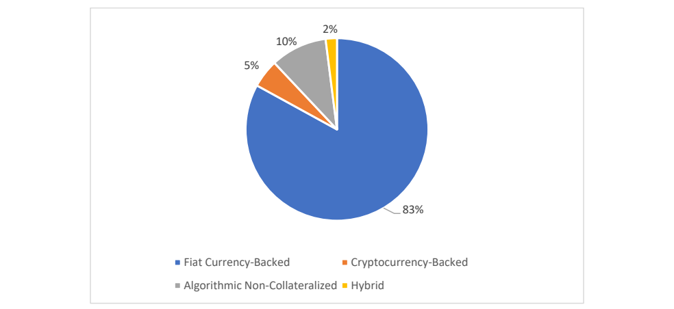

NIST IR 8408 日本語訳
英語タイトル : Understanding Stablecoin Technology and Related Security Considerations日本語タイトル : ステーブルコイン技術と関連するセキュリティ上の考慮事項の理解
公開日 : 2023-09-05
原文URL : https://csrc.nist.gov/pubs/ir/8408/final
翻訳編集 : 自動生成（有志による非公式の日本語訳）, 原文取得日 : 2026-10-31, 訳文 : 630 / 636 ブロック
[要約] NIST IR 8408 は、ステーブルコインがどのように設計・実装されているかを読者が理解できるよう、ステーブルコイン技術を技術的に説明する報告書です。ステーブルコインは、価格が別の資産（通常は価格変動の小さいもの）の価格に連動（ペッグ）された暗号通貨とされています。内容は、記述的な定義、共通して見られる性質、区別する特徴に加え、ステーブルコインの分類体系の検討、最も一般的な種類の説明、時価総額上位のステーブルコインの一覧に基づく例です。また、関連するセキュリティ、安定性、信頼の問題を、財務分析や経済学ではなく、コンピュータサイエンスと情報技術セキュリティの観点から分析して検討します。
NIST Internal Report
NIST 内部報告書
NIST IR 8408
NIST IR 8408
Understanding Stablecoin Technology and Related Security Considerations
ステーブルコイン技術と関連するセキュリティ上の考慮事項の理解
Peter Mell Dylan Yaga
Peter Mell Dylan Yaga
This publication is available free of charge from: https://doi.org/10.6028/NIST.IR.8408
本刊行物は次の場所から無料で入手できます: https://doi.org/10.6028/NIST.IR.8408
NIST Internal Report
NIST 内部報告書
NIST IR 8408
NIST IR 8408
Understanding Stablecoin Technology and Related Security Considerations
ステーブルコイン技術と関連するセキュリティ上の考慮事項の理解
Peter Mell Dylan Yaga
Peter Mell Dylan Yaga
Computer Security Division Information Technology Laboratory
コンピュータセキュリティ部門 情報技術研究所
This publication is available free of charge from: https://doi.org/10.6028/NIST.IR.8408
本刊行物は次の場所から無料で入手できます: https://doi.org/10.6028/NIST.IR.8408
September 2023
2023年9月
［米国商務省の紋章。公的な標章のため、この非公式サイトには掲載していません。原本 PDF を参照してください。］
U.S. Department of Commerce Gina M. Raimondo, Secretary
米国商務省 Gina M. Raimondo 長官
National Institute of Standards and Technology
米国国立標準技術研究所
Laurie E. Locascio, NIST Director and Under Secretary of Commerce for Standards and Technology
Laurie E. Locascio、NIST 所長兼商務次官（標準・技術担当）
Certain commercial equipment, instruments, software, or materials, commercial or non-commercial, are identified in this paper in order to specify the experimental procedure adequately. Such identification does not imply recommendation or endorsement of any product or service by NIST, nor does it imply that the materials or equipment identified are necessarily the best available for the purpose.
本論文では、実験手順を適切に特定するために、特定の商用の機器、器具、ソフトウェア、または材料（商用・非商用を問わない）を挙げています。こうした特定は、NIST がいかなる製品やサービスも推奨または保証していることを意味せず、挙げた材料や機器がその目的に最適であることを意味するものでもありません。
There may be references in this publication to other publications currently under development by NIST in accordance with its assigned statutory responsibilities. The information in this publication, including concepts and methodologies, may be used by federal agencies even before the completion of such companion publications. Thus, until each publication is completed, current requirements, guidelines, and procedures, where they exist, remain operative. For planning and transition purposes, federal agencies may wish to closely follow the development of these new publications by NIST.
本刊行物では、NIST が割り当てられた法令上の責務に従って作成中の他の刊行物に言及している場合があります。概念や方法論を含む本刊行物の情報は、関連刊行物が完成する前でも連邦機関が使用してもよいです。したがって、各刊行物が完成するまでは、現行の要件、ガイドライン、手順が存在する場合、それらは引き続き有効です。計画および移行のため、連邦機関は、NIST によるこれらの新しい刊行物の策定状況を注意深く追うことを検討してもよいです。
Organizations are encouraged to review all draft publications during public comment periods and provide feedback to NIST. Many NIST cybersecurity publications, other than the ones noted above, are available at https://csrc.nist.gov/publications.
各組織は、パブリックコメント期間中にすべての草案を確認し、NIST にフィードバックを提供することが推奨されています。上記で言及したもの以外にも、NIST のサイバーセキュリティ関連刊行物の多くが https://csrc.nist.gov/publications で入手できます。
NIST Technical Series Policies
NIST 技術シリーズの方針
Copyright, Use, and Licensing Statements
著作権、使用、およびライセンスに関する声明
NIST Technical Series Publication Identifier Syntax
NIST 技術シリーズ刊行物の識別子の構文
Publication History
刊行履歴
Approved by the NIST Editorial Review Board on 2023-07-11
2023-07-11 に NIST 編集審査委員会（Editorial Review Board）が承認
How to Cite this NIST Technical Series Publication:
本 NIST 技術シリーズ刊行物の引用方法:
Mell P, Yaga D (2023) Understanding Stablecoin Technology and Related Security Considerations. (National Institute of Standards and Technology, Gaithersburg, MD), NIST Interagency or Internal Report (IR) NIST IR 8408. https://doi.org/10.6028/NIST.IR.8408
Mell P, Yaga D (2023) Understanding Stablecoin Technology and Related Security Considerations. (National Institute of Standards and Technology, Gaithersburg, MD), NIST Interagency or Internal Report (IR) NIST IR 8408. https://doi.org/10.6028/NIST.IR.8408
Author ORCID iDs
著者の ORCID iD
Peter Mell: 0000-0003-2938-897X Dylan Yaga: 0000-0003-4058-3645
Peter Mell: 0000-0003-2938-897X Dylan Yaga: 0000-0003-4058-3645
Contact Information
連絡先
NISTIR8408@nist.gov
NISTIR8408@nist.gov
National Institute of Standards and Technology Attn: Computer Security Division, Information Technology Laboratory 100 Bureau Drive (Mail Stop 8930) Gaithersburg, MD 20899-8930
National Institute of Standards and Technology Attn: Computer Security Division, Information Technology Laboratory 100 Bureau Drive (Mail Stop 8930) Gaithersburg, MD 20899-8930
All comments are subject to release under the Freedom of Information Act (FOIA).
すべてのコメントは、情報自由法（FOIA）に基づいて公開される場合があります。
Abstract
要旨
Stablecoins are cryptocurrencies whose price is pegged to that of another asset (typically one with low price volatility). The market for stablecoins has grown tremendously – up to almost $200 billion USD in 2022. These coins are being used extensively in newly developing paradigms for digital money and commerce as well as for decentralized finance technology. This work provides a technical description of stablecoin technology to enable reader understanding of the variety of ways in which stablecoins are architected and implemented. This includes a descriptive definition, commonly found properties, and distinguishing characteristics, as well as an exploration of stablecoin taxonomies, descriptions of the most common types, and examples from a list of top stablecoins by market capitalization. This document also explores related security, stability, and trust issues with an analysis conducted from a computer science and information technology security perspective as opposed to the financial analysis and economics focus of much of the stablecoin literature.
ステーブルコインは、価格が別の資産（通常は価格変動の小さい資産）の価格に連動（ペッグ）された暗号通貨です。ステーブルコイン市場は急成長し、2022年には2,000億米ドル近くに達しました。これらのコインは、デジタルマネーや商取引の新たに発展しつつある枠組みや、分散型金融技術で広く利用されています。本書は、ステーブルコインが多様な方法で設計、実装されていることを読者が理解できるよう、ステーブルコイン技術を技術的に説明します。これには、記述的な定義、一般に見られる性質、特徴的な特性に加え、ステーブルコインの分類体系の検討、最も一般的な種類の説明、時価総額上位のステーブルコイン一覧からの事例が含まれます。また本書では、ステーブルコイン関連のセキュリティ、安定性、信頼の問題について、文献の多くが焦点を当てる財務分析や経済学とは異なり、コンピュータサイエンスおよび情報技術セキュリティの観点から分析して検討します。
Keywords
キーワード
blockchain; cryptocurrency; decentralized finance; security; smart contract; stablecoin.
blockchain; cryptocurrency; decentralized finance; security; smart contract; stablecoin.
Reports on Computer Systems Technology
コンピュータシステム技術に関する報告書
The Information Technology Laboratory (ITL) at the National Institute of Standards and Technology (NIST) promotes the U.S. economy and public welfare by providing technical leadership for the Nation’s measurement and standards infrastructure. ITL develops tests, test methods, reference data, proof of concept implementations, and technical analyses to advance the development and productive use of information technology. ITL’s responsibilities include the development of management, administrative, technical, and physical standards and guidelines for the cost-effective security and privacy of other than national security-related information in federal information systems.
米国国立標準技術研究所（NIST）の情報技術研究所（ITL）は、国の計測・標準インフラストラクチャに技術的なリーダーシップを提供することで、米国経済と公共の福祉を促進しています。ITL は、情報技術の開発と生産的な利用を進めるため、テスト、テスト方法、参照データ、概念実証の実装、技術分析を開発します。ITL の責務には、連邦情報システムにおける、国家安全保障に関係しない情報のセキュリティとプライバシーを費用対効果の高い形で確保するための、管理上、運用上、技術上、物理上の標準とガイドラインの開発が含まれます。
Patent Disclosure Notice
特許開示に関する通知
ITL has requested that holders of patent claims whose use may be required for compliance with the guidance or requirements of this publication disclose such patent claims to ITL. However, holders of patents are not obligated to respond to ITL calls for patents and ITL has not undertaken a patent search in order to identify which, if any, patents may apply to this publication.
ITL は、本刊行物のガイダンスまたは要件への準拠に使用が必要となる可能性のある特許クレームを有する特許権者に対し、その特許クレームを ITL に開示するよう求めています。ただし、特許権者には ITL の特許情報提供の呼びかけに応じる義務はなく、ITL は本刊行物に適用される可能性のある特許を特定するための特許調査を行っていません。
As of the date of publication and following call(s) for the identification of patent claims whose use may be required for compliance with the guidance or requirements of this publication, no such patent claims have been identified to ITL.
発行日時点で、本刊行物のガイダンスまたは要件への準拠に使用が必要となる可能性のある特許クレームの特定を求めた後も、そのような特許クレームは ITL に特定されていません。
No representation is made or implied by ITL that licenses are not required to avoid patent infringement in the use of this publication.
ITL は、本刊行物の使用にあたり特許侵害を避けるためにライセンスが不要であるとは、表明も示唆もしていません。
Table of Contents
目次
List of Figures
図の一覧
Executive Summary
エグゼクティブサマリー
This publication provides a technical description of stablecoin technology to enable reader understanding of the variety of ways in which stablecoins are architected and implemented. It then uses that technical foundation to explore related security, stability, and trust issues.
本刊行物は、ステーブルコインがどのように設計・実装されているかを読者が理解できるよう、ステーブルコイン技術を技術的に説明します。そのうえで、この技術的な土台を用いて、関連するセキュリティ、安定性、信頼の問題を検討します。
The following descriptive definition is intended to help readers understand stablecoin technology:
ステーブルコイン技術の理解を助けるために、次の記述的な定義を示します。
A stablecoin is a cryptocurrency token that is a fungible unit of financial value pegged to a currency, some other asset, or index. It can be traded directly between parties and converted to other currencies or the pegged asset.
ステーブルコインとは、通貨、その他の資産、または指数にペッグされた、代替可能な金銭的価値の単位である暗号通貨トークンです。当事者間で直接取引でき、他の通貨やペッグ対象の資産に交換できます。
Stablecoins can be further understood by an evaluation of their properties and characteristics. Properties highlight areas of commonality among most stablecoins, while characteristics highlight distinctions between the various architectures. The stablecoins all behave similarly from the perspective of the user who possesses and trades them
ステーブルコインは、その性質と特徴を評価することで、さらに理解できます。性質は、大半のステーブルコインに共通する領域を示し、特徴は、さまざまなアーキテクチャ間の違いを示します。ステーブルコインを保有して取引するユーザーの視点では、どのステーブルコインも同じように動作します
Stablecoins typically include the following four properties.
ステーブルコインには通常、次の 4 つの性質があります。
1.Property 1 (Tokenized): A stablecoin is a cryptocurrency token managed by a smart contract.
1.性質 1（トークン化）: ステーブルコインは、スマートコントラクトによって管理される暗号通貨トークンです。
2.Property 2 (Fungible): Stablecoins are fungible units of financial value with little to no pricing volatility relative to their pegged asset or index.
2.性質 2（代替可能）: ステーブルコインは、ペッグ対象の資産または指数に対する価格変動がほとんどまたはまったくない、代替可能な金銭的価値の単位です。
3.Property 3 (Tradable): Stablecoins can be traded directly between parties.
3.性質 3（取引可能）: ステーブルコインは、当事者間で直接取引できます。
4.Property 4 (Convertible): Stablecoins can be converted to other currencies or the pegged asset.
4.性質 4（交換可能）: ステーブルコインは、他の通貨やペッグ対象の資産に交換できます。
Many of the differences between stablecoin implementations and approaches can be understood by considering the following stablecoin characteristics:
ステーブルコインの実装やアプローチの違いの多くは、次のステーブルコインの特徴を考慮することで理解できます。
•Characteristic 1 (Number of Coins): A stablecoin architecture may use multiple mutually supportive coins to maintain the peg for its stablecoin.
•特徴 1（コイン数）: ステーブルコインのアーキテクチャは、複数の相互に支え合うコインを使って、そのステーブルコインのペッグを維持する場合があります。
•Characteristic 2 (Custodial Type): Stablecoins may use a centralized custodial finance model (CeFi) or a decentralized non-custodial finance model (DeFi).
•特徴 2（カストディの種類）: ステーブルコインは、中央集権型のカストディアル金融モデル（CeFi）を使う場合も、分散型のノンカストディアル金融モデル（DeFi）を使う場合もあります。
•Characteristic 3 (Management Type): Stablecoins may have different management types: no management, a company, a known individual, an anonymous individual, or anonymous group owners who hold governance tokens.
•特徴 3（管理の種類）: ステーブルコインの管理の種類はさまざまで、管理なし、企業、既知の個人、匿名の個人、またはガバナンストークンを保有する匿名のグループ所有者のいずれかです。
•Characteristic 4 (Blockchain Automation): Stablecoins may operate fully on-chain and autonomously, on-chain and autonomously but with control hooks, or mostly off-chain and manually with a smart contract interface.
•特徴 4（ブロックチェーンの自動化）: ステーブルコインの運用は、完全にオンチェーンで自律的に行われる場合、オンチェーンで自律的だが制御用のフックがある場合、またはスマートコントラクトのインターフェースを備えつつ大半がオフチェーンで手動の場合があります。
•Characteristic 5 (Coin Minting and Burning): Stablecoins have different policies for minting (coin creation) and burning (coin deletion).
•特徴 5（コインの発行とバーン）: ステーブルコインは、発行（コインの作成）とバーン（コインの削除）に関する方針が異なります。
•Characteristic 6 (Collateral Type): Stablecoins may be collateralized using different types of reserves.
•特徴 6（担保の種類）: ステーブルコインは、さまざまな種類の準備金で担保される場合があります。
•Characteristic 7 (Collateralization Level): Stablecoins may be collateralized at different levels.
•特徴 7（担保水準）: ステーブルコインは、さまざまな水準で担保される場合があります。
•Characteristic 8 (Stabilization Mechanism): Stablecoins may use different mechanisms to promote price stability.
•特徴 8（安定化メカニズム）: ステーブルコインは、価格の安定を促すためにさまざまなメカニズムを使う場合があります。
•Characteristic 9 (Oracle Dependence): Stablecoins may depend on “oracles” to provide on-blockchain data feeds for off-blockchain asset prices.
•特徴 9（オラクルへの依存）: ステーブルコインは、ブロックチェーン外の資産価格に関するデータをブロックチェーン上に提供する「オラクル」に依存する場合があります。
•Characteristic 10 (Blockchain Independence): Stablecoins may be blockchain-independent and simultaneously instantiated on multiple blockchains.
•特徴 10（ブロックチェーンからの独立性）: ステーブルコインは、ブロックチェーンに依存せず、複数のブロックチェーン上で同時にインスタンス化される場合があります。
This publication also provides a taxonomy of stablecoin types, which describe commonly used approaches. The taxonomy can be used to understand how groups of settings of characteristics work together to form different architectures. The taxonomy is as follows:
本刊行物は、一般に使われているアプローチを説明するステーブルコインの種類の分類体系も示します。この分類体系を使うと、特徴の設定の組み合わせがどのように連携してさまざまなアーキテクチャを形成するかを理解できます。分類体系は次のとおりです。
1.Fiat Currency-Backed: A stablecoin whose value is backed through cash-equivalent reserves of a particular fiat currency or index of currencies.
1.法定通貨担保型: 特定の法定通貨または通貨指数の現金同等物の準備金によって価値が裏付けられるステーブルコイン。
2.Cryptocurrency-Backed: A stablecoin whose value is backed through reserves of volatile cryptocurrencies (i.e., not other stablecoins).
2.暗号通貨担保型: 価格変動の大きい暗号通貨（すなわち、他のステーブルコインではないもの）の準備金によって価値が裏付けられるステーブルコイン。
3.Non-Currency Asset-Backed: A stablecoin whose value is backed through reserves that are non-currency assets or financial vehicles tracking the price of such assets.
3.通貨以外の資産担保型: 通貨以外の資産、またはそうした資産の価格に連動する金融商品である準備金によって価値が裏付けられるステーブルコイン。
4.Algorithmic Non-Collateralized: A stablecoin whose value is stabilized through an algorithm that shrinks and expands the supply of non-collateralized coins to adjust price.
4.アルゴリズム型無担保: 無担保のコインの供給量を縮小・拡大するアルゴリズムによって、価格を調整して価値を安定させるステーブルコイン。
5.Hybrid: A stablecoin whose value is stabilized through a combination of methods drawn from fiat, cryptocurrency, non-currency asset, and algorithmic-backed stablecoins (usually a partially cryptocurrency collateralized algorithmic approach).
5.ハイブリッド型: 法定通貨担保型、暗号通貨担保型、通貨以外の資産担保型、アルゴリズム担保型のステーブルコインから採った方法の組み合わせによって価値を安定させるステーブルコイン（通常は、部分的に暗号通貨で担保されたアルゴリズム方式）。
6.Private Institutional: A stablecoin that is issued for use on a private blockchain for the internal account transactions of the stablecoin issuer’s customers.
6.民間機関型: ステーブルコインの発行者の顧客の内部口座取引のために、プライベートブロックチェーン上で使用する目的で発行されるステーブルコイン。
The descriptive stablecoin definition, properties, characteristics, and taxonomy are used to evaluate how computer security issues could affect the proper functioning of stablecoins or result in a loss of value to stablecoin users. The three areas investigated are security, stability, and trust.
ステーブルコインの記述的な定義、性質、特徴、分類体系は、コンピュータセキュリティ上の問題がステーブルコインの適切な機能にどう影響しうるか、またステーブルコインのユーザーの価値の損失をどう招きうるかを評価するために使います。調査する領域は、セキュリティ、安定性、信頼の 3 つです。
Security issues include the following:
セキュリティ上の問題には、次のものがあります。
1.Unauthorized or Arbitrary Minting of Stablecoins: there may arise a situation or combination of situations that may allow for the creation of stablecoins outside of the intended process.
1.ステーブルコインの無許可または任意の発行: 意図された手順の外でステーブルコインが作成される状況、またはその組み合わせが生じる場合があります。
2.Collateral Theft: the stablecoin’s on blockchain collateral (or reserves) may be subject to theft should an attacker discover and leverage a vulnerability in the smart contract code.
2.担保の窃取: 攻撃者がスマートコントラクトのコードの脆弱性を発見して悪用すると、ステーブルコインのブロックチェーン上の担保（または準備金）が盗まれる場合があります。
3.Malicious Smart Contract Update and Hijack: it may be possible for malicious users to engineer a scenario in which they obtain the ability to deploy updated versions of the stablecoin’s smart contract.
3.悪意あるスマートコントラクトの更新と乗っ取り: 悪意あるユーザーが、ステーブルコインのスマートコントラクトの更新版をデプロイする権限を得る状況を作り出せる場合があります。
4.Data Oracles: oracles provide stablecoin smart contracts off-blockchain information (e.g., the price of a currency). An attacker could disrupt the data used as input to the oracle, compromise the oracle itself with a denial-of-service attack, or take advantage of a vulnerability to learn what data the oracle is about to submit.
4.データオラクル: オラクルは、ステーブルコインのスマートコントラクトにブロックチェーン外の情報（たとえば通貨の価格）を提供します。攻撃者は、オラクルへの入力に使われるデータを妨害したり、サービス拒否攻撃でオラクル自体を危殆化させたり、脆弱性を利用してオラクルが送信しようとしているデータを知ったりする可能性があります。
5.Exploiting the Underlying Blockchain: it is possible for well-resourced attackers to take over the blockchain underlying a stablecoin implementation. Attackers might do this by controlling a majority of the mining hardware used in a proof-of-work consensus algorithm or stake a majority of funds in a proof-of-stake system. This is unlikely for large blockchain systems given the size of the community that maintains them.
5.基盤となるブロックチェーンの悪用: 資金力のある攻撃者が、ステーブルコインの実装の基盤となるブロックチェーンを乗っ取ることが可能です。攻撃者は、プルーフ・オブ・ワークのコンセンサスアルゴリズムで使われるマイニングハードウェアの過半数を支配したり、プルーフ・オブ・ステークのシステムで資金の過半数をステークしたりして、これを行う可能性があります。大規模なブロックチェーンシステムでは、それを維持するコミュニティの規模を考えると、これは起こりにくいといえます。
Stability issues include the following:
安定性の問題には、次のものがあります。
1.Dynamic Interest Rates: some stable coins are created through the issuance of loans. The loan interest rates adjust dynamically to stabilize the stable coin price.
1.動的金利: ステーブルコインには、融資の実行によって作られるものがあります。融資の金利は、ステーブルコインの価格を安定させるために動的に調整されます。
2.Floating Collateral Requirements: the collateral requirements for loan issued stable coins can change rapidly.
2.変動する担保要件: 融資によって発行されるステーブルコインの担保要件は、急速に変化することがあります。
3.Oracle Responsiveness to Rapid Price Fluctuation: oracles may not provide data to a stable coin contract fast enough to address a rapidly changing market (potentially causing stable coin failure).
3.急激な価格変動に対するオラクルの応答性: オラクルは、急速に変化する市場に対応できるだけの速さでステーブルコインのコントラクトにデータを提供できない場合があります（ステーブルコインの破綻を招く可能性があります）。
4.Governance Token Devaluation: many stablecoins offer governance tokens that enable the token holders to manage the cryptocurrency. A devaluation of the governance tokens could spark a lack of confidence in the stablecoin.
4.ガバナンストークンの価値下落: 多くのステーブルコインは、トークン保有者が暗号通貨を管理できるガバナンストークンを提供しています。ガバナンストークンの価値が下落すると、ステーブルコインへの信頼が失われる可能性があります。
5.Share and Reward Token Devaluation: some stablecoins use share coins as volatile cryptocurrency collateral. A drop in price of the share coin represents a decrease in collateral in the system.
5.シェアトークンおよび報酬トークンの価値下落: ステーブルコインには、価格変動の大きい暗号通貨の担保としてシェアコインを使うものがあります。シェアコインの価格が下落することは、システム内の担保の減少を意味します。
6.Native Cryptocurrency Devaluation: if the native cryptocurrency on a blockchain devalued to the point where it failed, users would migrate en masse off that blockchain. Since the stablecoin token lives on the blockchain, this could precipitate users to sell all their stablecoins.
6.ネイティブ暗号通貨の価値下落: ブロックチェーン上のネイティブ暗号通貨の価値が下落して機能しなくなるほどになれば、ユーザーはそのブロックチェーンから大量に移動するでしょう。ステーブルコインのトークンはそのブロックチェーン上に存在するため、これによってユーザーがステーブルコインをすべて売却する事態が引き起こされる可能性があります。
7.Transaction Price Increase: smart contract pricing is dynamic and subject to the changing transaction costs of the underlying blockchain’s native digital asset (cryptocurrency). This can affect stablecoin usage (making transactions for amounts of certain sizes may become prohibitively expensive).
7.トランザクション価格の上昇: スマートコントラクトの価格設定は動的で、基盤となるブロックチェーンのネイティブなデジタル資産（暗号通貨）のトランザクションコストの変動の影響を受けます。これはステーブルコインの利用に影響する可能性があります（一定の規模の金額の取引が、法外に高額になる場合があります）。
Trust issues include the following:
信頼の問題には、次のものがあります。
1.Insufficient Reserves: trust may be lost if the stablecoin manager does not maintain the promised level of off-chain reserves and only provides partial collateral.
1.準備金の不足: ステーブルコインの管理者が、約束した水準のオフチェーン準備金を維持せず、部分的な担保しか提供しない場合、信頼が失われる可能性があります。
2.Reserve Type Mismatch: trust may be lost if the stablecoin manager does not hold the reserves in the specified financial vehicles.
2.準備金の種類の不一致: ステーブルコインの管理者が、指定された金融商品で準備金を保有していない場合、信頼が失われる可能性があります。
3.Account Denylisting: a smart contract may maintain a denylist to prevent accounts from sending or receiving coins.
3.アカウントの拒否リスト登録: スマートコントラクトは、アカウントによるコインの送受信を防ぐために拒否リストを保持する場合があります。
4.Managing Organization Dissolution: the managing organization may dissolve but the project itself may live on without them, albeit in an unmanaged state.
4.管理組織の解散: 管理組織が解散しても、プロジェクト自体は、管理されない状態ではあるものの、その組織なしで存続する場合があります。
5.Mass User Departure: typically, in response to some incident, users of a stablecoin may decide to leave en masse. Like a traditional bank run, users will attempt to withdraw whatever money they are able to from the system, thus weakening the system even further.
5.ユーザーの大量離脱: 通常、何らかのインシデントを受けて、ステーブルコインのユーザーが大量に離脱することを決める場合があります。従来の銀行の取り付け騒ぎと同様に、ユーザーはシステムから引き出せる資金をできるだけ引き出そうとするため、システムはさらに弱体化します。
6.Rug Pulls: a rug pull is when a cryptocurrency project manager hypes up their project via social media and marketing, obtains many new users, and then absconds with the deposited funds and abandons the project, leaving the users with nothing
6.ラグプル: ラグプルとは、暗号通貨プロジェクトの管理者がソーシャルメディアやマーケティングでプロジェクトを煽って多くの新規ユーザーを獲得し、預けられた資金を持ち逃げしてプロジェクトを放棄し、ユーザーに何も残さないことです。
While most stablecoins function almost identically in third-party markets and enable the buying and selling of goods with coins at a pegged price, they can have vastly different risk profiles. Security, stability, and trust issues vary between architectures, although there are common concerns with all of them. Centralized architectures can be more vulnerable to trust issues due to a greater reliance on human trustworthiness, while decentralized architectures can be more vulnerable to security issues due to increasing smart contract code complexity and critical functionality. When all is well, they all function almost identically from the point of view of a consumer trading with them. When there are security, trust, or stability issues, stablecoins may be stolen, lose value, or completely fail.
ほとんどのステーブルコインは、第三者の市場でほぼ同じように機能し、ペッグされた価格でコインを使った商品の売買を可能にしますが、リスクプロファイルは大きく異なる場合があります。セキュリティ、安定性、信頼の問題はアーキテクチャによって異なりますが、すべてに共通する懸念もあります。中央集権型のアーキテクチャは、人間の信頼性により大きく依存するため、信頼の問題に対してより脆弱になりえます。一方、分散型のアーキテクチャは、スマートコントラクトのコードの複雑さと重要機能が増すため、セキュリティの問題に対してより脆弱になりえます。すべてが順調なときは、コインで取引する消費者の視点では、どれもほぼ同じように機能します。セキュリティ、信頼、安定性の問題が生じると、ステーブルコインが盗まれたり、価値を失ったり、完全に破綻したりする場合があります。
1. Introduction
1. はじめに
The Board of Governors of the U.S. Federal Reserve System has defined stablecoins as “digital currencies that peg their value to an external reference” [1]. They then go on to say that stablecoins represent “a possible breakthrough innovation in the future of payments” and cite the tremendous growth of the stablecoin market starting in 2021. Possible benefits include more rapid and cost-effective payments, especially global remittances, and financial services for the unbanked and those with compromised credit [2]. As of May 2022, there were 75 publicly listed stablecoins with a total market capitalization of $186 billion USD (U.S. dollars) [3].
米国連邦準備制度理事会（Board of Governors of the U.S. Federal Reserve System）は、ステーブルコインを「価値を外部の基準にペッグするデジタル通貨」と定義しています [1]。さらに、ステーブルコインは「決済の将来における画期的なイノベーションとなる可能性がある」と述べ、2021 年から始まったステーブルコイン市場の急成長を挙げています。考えられる利点には、より迅速で費用対効果の高い決済（特に国際送金）や、銀行口座を持たない人々や信用に問題のある人々への金融サービスがあります [2]。2022 年 5 月時点で、公開されているステーブルコインは 75 種類あり、時価総額の合計は 1,860 億米ドル（USD）でした [3]。
These stablecoins use widely varying management, implementation, and reserve models to attempt to hold their peg (i.e., maintain their value). For example, the International Organization of Securities Commissions (IOSCO) evaluates four different types of stablecoins: fiat currency, other real-world assets, other crypto assets, and algorithmic controlled assets. These types are delineated by the form of reserve funds held and the method for maintaining price stability. The IOSCO claims that stablecoins should be considered crypto-assets as opposed to cryptocurrency “since these assets do not in general fulfil the core economic criteria of money – as a unit of account, a stable store of value and efficient means of exchange” [4]. When functioning properly, stablecoins do typically intend to satisfy this definition of money, but there are security, trust, and stability issues that can limit their ability to fulfill this role.
これらのステーブルコインは、ペッグを保つ（すなわち価値を維持する）ために、管理、実装、準備金のモデルが大きく異なる方式を用いています。たとえば、証券監督者国際機構（IOSCO）は、法定通貨、その他の実世界の資産、その他の暗号資産、アルゴリズムで制御される資産という 4 種類のステーブルコインを評価しています。これらの種類は、保有する準備資金の形態と、価格の安定を維持する方法で区別されます。IOSCO は、ステーブルコインは暗号通貨ではなく暗号資産と見なすべきだと主張しています。その理由は、「これらの資産は一般に、計算単位、安定した価値の保存手段、効率的な交換手段という、貨幣の中核的な経済的基準を満たさない」ことです [4]。適切に機能していれば、ステーブルコインは通常、この貨幣の定義を満たすことを意図していますが、その役割を果たす能力を制限しうるセキュリティ、信頼、安定性の問題があります。
The growth of the stablecoin market and its associated identified risks have centered much research on stablecoins, usually with a focus on economic aspects. For example, the U.S. Treasury evaluates stablecoin risks in [5]. These risks include concerns about investor protection and market integrity, encompassing “possible fraud and misconduct in digital asset trading, including market manipulation, insider trading, and front running, as well as a lack of trading or price transparency”. As stablecoins are increasingly used for complex financial arrangements and massive leveraging, the U.S. Treasury envisions possible risks to the broader financial system. In addition, it explores how stablecoin use could challenge efforts to govern “anti-money laundering (AML), countering the financing of terrorism (CFT), and proliferation”. Lastly, it explores prudential risks for stablecoins, where stablecoin issuers may not maintain sufficient reserves or an effective method to support redemptions in times of stress.
ステーブルコイン市場の成長と、それに伴って特定されたリスクにより、ステーブルコインに関する研究の多くは、通常は経済的な側面に焦点を当てています。たとえば、米国財務省は [5] でステーブルコインのリスクを評価しています。これらのリスクには、投資家保護と市場の健全性に関する懸念があり、「市場操作、インサイダー取引、フロントランニングを含む、デジタル資産取引における詐欺や不正行為の可能性、および取引や価格の透明性の欠如」を含みます。ステーブルコインが複雑な金融取り決めや大規模なレバレッジ取引にますます使われるにつれて、米国財務省は、より広範な金融システムへのリスクの可能性を想定しています。さらに、ステーブルコインの利用が、「マネーロンダリング対策（AML）、テロ資金供与対策（CFT）、および大量破壊兵器等の拡散防止」を管理する取り組みにどのような課題をもたらしうるかを検討しています。最後に、健全性に関するリスクとして、ステーブルコインの発行者が、十分な準備金や、ストレス時の償還を支える有効な方法を維持しない可能性を検討しています。
A complementary evaluation of the economic aspects of stablecoins is [1], which explores the possible impacts of stablecoins on the banking system and credit intermediation. IOSCO [4] presents another risk analysis (with a regulatory focus) and enumerates stablecoin risks related to “consumer protection, market integrity, transparency, conflicts of interest, financial crime, systemic implications and economic impacts”. A deep analysis of how fiat-based stablecoins maintain their stability is found in [6], which evaluates how the price stabilization of stablecoins differs from national currencies pegged to one another. Finally, the specific risks of uncollateralized algorithmic stablecoins are highlighted in [2]. That work asserts that algorithmic stablecoin value can only be maintained through 1) a continuous support level of demand, 2) the actions of “independent actors with market incentives to perform price-stabilizing arbitrage”, and 3) the accurate and rapid pricing of pegged assets in times of financial crisis.
ステーブルコインの経済的側面を補完的に評価したものが [1] で、ステーブルコインが銀行システムと信用仲介に及ぼしうる影響を検討しています。IOSCO [4] は、別のリスク分析（規制に重点を置いたもの）を示し、「消費者保護、市場の健全性、透明性、利益相反、金融犯罪、システム上の影響、経済的影響」に関するステーブルコインのリスクを列挙しています。法定通貨ベースのステーブルコインがどのように安定を維持するかの詳細な分析は [6] にあり、ステーブルコインの価格安定化が、互いにペッグされた国家通貨の場合とどう異なるかを評価しています。最後に、無担保のアルゴリズム型ステーブルコイン特有のリスクが [2] で強調されています。この文献は、アルゴリズム型ステーブルコインの価値は、1) 継続的な需要の支えとなる水準、2)「価格安定化のための裁定取引を行う市場インセンティブを持つ独立した主体」の行動、3) 金融危機時におけるペッグ対象資産の正確かつ迅速な価格設定、によってのみ維持できると主張しています。
This publication approaches the same topic but from a computer science perspective with a technology and computer security focus. It offers a technical description of stablecoin technology to enable reader understanding of the variety of ways in which stablecoins are architected and implemented. It then uses that technical foundation to explore related security, stability, and trust issues. While some discussion of economic aspects is unavoidable (given that stablecoins are used as a form of currency), this work focuses on the technology issues. For an understanding of the economic risks, the reader should consult the previously cited references.
本刊行物は同じテーマを扱いますが、技術とコンピュータセキュリティに焦点を当てた、コンピュータサイエンスの観点からです。ステーブルコインがどのように設計・実装されているかを読者が理解できるよう、ステーブルコイン技術を技術的に説明します。そのうえで、この技術的な土台を用いて、関連するセキュリティ、安定性、信頼の問題を検討します。ステーブルコインは通貨の一形態として使われるため、経済的側面にある程度触れることは避けられませんが、本書は技術上の問題に焦点を当てています。経済的リスクの理解には、前述の参考文献を参照してください。
The source materials used for this computer science-based exploration of stablecoins include published design papers for the top 20 stablecoins by market capitalization as of April 2022 [3]. The specific coins studied are listed in Section 4 and organized by type. Each of these 20 studied stablecoins had over $75 million USD of market capitalization at that time. The third largest plunged to zero value within three months and led to tens of billions of dollars in investor losses. Fifteen of the 20 mostly held their peg, enabling cryptocurrency investors to retain the value of their holdings while the broader cryptocurrency market plunged by over 50 % in this same time period.
コンピュータサイエンスに基づくこのステーブルコインの検討に使った資料には、2022 年 4 月時点の時価総額上位 20 件のステーブルコインについて公開されている設計文書が含まれます [3]。調査した具体的なコインは第 4 節に種類別に整理して示します。調査した 20 件のステーブルコインは、当時いずれも 7,500 万米ドルを超える時価総額がありました。時価総額第 3 位のコインは 3 か月以内に価値がゼロまで急落し、数百億ドル規模の投資家の損失につながりました。20 件のうち 15 件は、おおむねペッグを維持し、同じ期間に暗号通貨市場全体が 50 % 超急落するなかでも、暗号通貨の投資家が保有資産の価値を保つことを可能にしました。
The remainder of this document is organized as follows. Section 1 discusses the historic stability of stablecoins and provides a note on stablecoin regulations. Section 2 provides necessary background technical terminology. Section 3 provides a descriptive stablecoin definition, an enumeration of its properties, and a discussion of different characteristics that stablecoins may possess. Section 4 provides a simple taxonomy of the primary stablecoin types along with an evaluation of their characteristics and a mapping to the top 20 investigated stablecoins. The following sections focus on potential stablecoin technology risks and associated safeguards. Section 5 discusses potential security issues. Section 6 discusses trust issues. Section 7 discusses stability issues. Section 8 discusses types of cryptocurrency exchanges and methods for fund movement (including cross-chain coin movement). Section 9 is the conclusion.
本書の残りの構成は次のとおりです。第 1 節では、ステーブルコインの過去の安定性を論じ、ステーブルコインの規制に関する注記を示します。第 2 節では、必要な背景となる技術用語を示します。第 3 節では、ステーブルコインの記述的な定義、その性質の列挙、ステーブルコインが持ちうるさまざまな特徴の議論を示します。第 4 節では、主要なステーブルコインの種類の簡潔な分類体系を、その特徴の評価と、調査した上位 20 件のステーブルコインへの対応づけとともに示します。以降の節では、ステーブルコイン技術に潜在するリスクと関連する保護策に焦点を当てます。第 5 節ではセキュリティ上の潜在的な問題を論じます。第 6 節では信頼の問題を論じます。第 7 節では安定性の問題を論じます。第 8 節では、暗号通貨取引所の種類と資金移動の方法（クロスチェーンのコイン移動を含む）を論じます。第 9 節は結論です。
1.1. One Year Stability Analysis of Top Stablecoins by Market Capitalization
1.1. 時価総額上位のステーブルコインの 1 年間の安定性分析
An evaluation of the daily prices from CoinMarketCap.com of the top 20 stablecoins for the year ending on August 15, 2022, indicates that the majority of the stablecoins keep their advertised peg to a non-cryptocurrency asset and achieve low volatility in doing so. For the top 20 cryptocurrencies studied, the top five coins that retained their peg represented 87 % of the total top 20 market capitalization (using published market capitalizations when the top 20 list was determined in April 2022). The top five market capitalization stablecoins that did not lose their peg during the one year study were:
時価総額上位 20 件のステーブルコインについて、2022 年 8 月 15 日までの 1 年間の CoinMarketCap.com の日次価格を評価したところ、大多数のステーブルコインは、暗号通貨以外の資産へのペッグを掲げたとおりに維持し、その際の価格変動も小さいことが示されました。調査した上位 20 件の暗号通貨のうち、ペッグを維持した上位 5 件のコインは、上位 20 件の時価総額合計の 87 % を占めました（上位 20 件の一覧が決定された 2022 年 4 月時点で公表されていた時価総額を使用）。この 1 年間の調査でペッグを失わなかった、時価総額上位 5 件のステーブルコインは次のとおりです。
1.Tether (USDT)
1.Tether（USDT）
2.USD Coin (USDC)
2.USD Coin（USDC）
3.Binance USD (BUSD)
3.Binance USD（BUSD）
4.Dai (DAI)
4.Dai（DAI）
5.Frax (FRAX)
5.Frax（FRAX）
All five were pegged to the U.S. dollar and – as a group – had a mean minimum value of $0.9934 (-0.66 %) and a maximum minimum value of $0.9871 (-1.29 %).
5 件すべてが米ドルにペッグされており、グループとしての最小値の平均は 0.9934 ドル（-0.66 %）、最小値の最大値は 0.9871 ドル（-1.29 %）でした。
Fig. 1 shows the stablecoin prices for TerraUSD (TUSD), which was the third-largest stablecoin by market capitalization in this study. It lost its peg in May 2022 and is not expected to recover; it has been rebranded USTC.
図 1 は、この調査で時価総額が 3 番目に大きかったステーブルコインである TerraUSD（TUSD）の価格を示します。TerraUSD は 2022 年 5 月にペッグを失い、回復は見込まれていません。USTC に改称されています。
［第三者の画像。第三者の著作物のため、この非公式サイトには掲載していません。原本 PDF を参照してください。］
Fig. 1. USD stablecoin price over one year for TerraUSD (TUSD), which lost its peg (chart from [40])
図 1. TerraUSD（TUSD）の 1 年間の米ドル建てステーブルコイン価格。ペッグを失った（チャートは [40] より）
Section 4 discusses a taxonomy of stablecoin types and describes architectural details. The technical implementations vary widely even though the usages of the coins are similar. This study did not discover a significant difference in the stability of different stablecoin types with one exception. The study of 20 stablecoins contained two purely algorithmic coins. One of these coins lost its peg (UST, shown in Fig. 2) and has not recovered. The other – Neutrino USD (NUSD) – had a one-year low of $0.7831 (-21.69 %), much lower than the top five coins above. NUSD, which was number 8 by market capitalization, has had three temporary peg losses in the last year, but it has regained its value and has returned to holding its peg (shown in Fig. 2).
第 4 節では、ステーブルコインの種類の分類体系を論じ、アーキテクチャの詳細を説明します。コインの用途は似ていても、技術的な実装は大きく異なります。この調査では、1 つの例外を除き、ステーブルコインの種類による顕著な安定性の差は見つかりませんでした。調査した 20 件のステーブルコインには、純粋にアルゴリズム型のコインが 2 件含まれていました。そのうち 1 件はペッグを失い（UST、図 2 に示す）、回復していません。もう 1 件の Neutrino USD（NUSD）は、1 年間の最安値が 0.7831 ドル（-21.69 %）で、上記の上位 5 件のコインよりはるかに低い値でした。時価総額で 8 位だった NUSD は、この 1 年間に 3 回、一時的にペッグを失いましたが、価値を回復し、再びペッグを維持する状態に戻っています（図 2 に示す）。
These empirical observations of purely algorithmic stablecoin performance match concerns in the literature about these types of stablecoins retaining long-term value [2]. However, the instability of one particular type of stablecoin does not imply instability for other types in this taxonomy because they utilize different technical architectures/designs and different mechanisms to maintain their pegs. However, stablecoins that are not algorithmic still have risk factors that can cause them to temporarily lose value or permanently lose their peg.
純粋にアルゴリズム型のステーブルコインの実績に関するこれらの経験的な観察は、この種のステーブルコインが長期的な価値を維持できるかという文献上の懸念 [2] と一致しています。ただし、ある特定の種類のステーブルコインが不安定だからといって、この分類体系の他の種類も不安定であることにはなりません。それらは異なる技術的なアーキテクチャ／設計と、ペッグを維持するための異なるメカニズムを用いているためです。とはいえ、アルゴリズム型ではないステーブルコインにも、一時的に価値を失ったり、恒久的にペッグを失ったりしうるリスク要因があります。
［第三者の画像。第三者の著作物のため、この非公式サイトには掲載していません。原本 PDF を参照してください。］
Fig. 2. USD stablecoin price over one year for Neutrino USD showing temporary peg losses (chart from [41])
図 2. Neutrino USD の 1 年間の米ドル建てステーブルコイン価格。一時的にペッグを失った（チャートは [41] より）
For example, three of the other non-algorithmic top 20 stablecoins had issues during the studied 1-year period: Paxos Dollar (USDP), XSGD (XSGD), and Qcash (QC). The first two are fiat currency-backed, and the third is cryptocurrency-backed (see Section 4 on cryptocurrency types). USDP (number 9 by market capitalization) ceased trading for over two months starting in April 2022 (see Fig. 3) [45]. XSGD, which is a stablecoin based on the Singapore dollar (number 15 by market capitalization), experienced continuously increasing volatility (see Fig. 4) throughout 2022 [43]. Note that XSGD is pegged to the Chinese Yuan, but the chart is denominated in USD due to charting limitations. During the latter chart period showing the increased volatility, USD changed less than 3 % relative to the Yuan. Qcash (QC), which is pegged to the Chinese Yuan (number 20 by market capitalization), lost its peg and had a slow price decline from $0.15 to $0.08 (see Fig. 5) [44].
たとえば、アルゴリズム型ではない上位 20 件のステーブルコインのうち他の 3 件は、調査した 1 年間に問題が生じました。Paxos Dollar（USDP）、XSGD（XSGD）、Qcash（QC）です。最初の 2 件は法定通貨担保型で、3 件目は暗号通貨担保型です（暗号通貨の種類については第 4 節を参照）。USDP（時価総額で 9 位）は、2022 年 4 月から 2 か月以上にわたり取引が停止しました（図 3 を参照）[45]。シンガポールドルに基づくステーブルコインである XSGD（時価総額で 15 位）は、2022 年を通じて変動性が継続的に増大しました（図 4 を参照）[43]。なお、XSGD は人民元にペッグされていますが、チャート作成上の制約のため、チャートは米ドル建てです。変動の増大を示すチャートの後半の期間中、米ドルの人民元に対する変動は 3 % 未満でした。人民元にペッグされた Qcash（QC）（時価総額で 20 位）は、ペッグを失い、価格が 0.15 ドルから 0.08 ドルへと緩やかに下落しました（図 5 を参照）[44]。
［第三者の画像。第三者の著作物のため、この非公式サイトには掲載していません。原本 PDF を参照してください。］
Fig. 3. USD stablecoin price over one year for Paxos dollar (USDP) showing trading halt (chart from [42])
図 3. Paxos dollar（USDP）の 1 年間の米ドル建てステーブルコイン価格。取引停止を示す（チャートは [42] より）
［第三者の画像。第三者の著作物のため、この非公式サイトには掲載していません。原本 PDF を参照してください。］
Fig. 4. USD stablecoin price over one year for XSGD (XSGD) showing increasing volatility (chart from [43])
図 4. XSGD（XSGD）の 1 年間の米ドル建てステーブルコイン価格。変動の増大を示す（チャートは [43] より）
［第三者の画像。第三者の著作物のため、この非公式サイトには掲載していません。原本 PDF を参照してください。］
Fig. 5. USD stablecoin price over one year for QCash (QC) showing loss of peg and slow value decline (chart from [44])
図 5. QCash（QC）の 1 年間の米ドル建てステーブルコイン価格。ペッグの喪失と緩やかな価値の低下を示す（チャートは [44] より）
1.2. Note on Regulations
1.2. 規制に関する注記
As with most new technologies, regulations have not caught up with the development of cryptocurrencies or stablecoins. Proponents of regulations state that they will bring legitimacy to the technology and provide consumer protections. Opponents to regulations state that they will stifle innovation and drive new ideas out of the U.S.
ほとんどの新技術と同様に、規制は暗号通貨やステーブルコインの発展に追いついていません。規制の支持者は、規制がこの技術に正当性をもたらし、消費者保護を提供すると述べています。規制の反対者は、規制がイノベーションを阻害し、新しいアイデアを米国の外へ追い出すと述べています。
NIST is a non-regulatory government agency, and discussions of what – if any – regulations should be set are out of scope for this document. For more information on the topic, see Report on Stablecoins published in November 2021 by the President’s Working Group on Financial Markets, the Federal Deposit Insurance Corporation, and the office of the Comptroller of the Currency [5].
NIST は規制を行わない政府機関であり、規制を設ける場合にどのような規制とすべきかという議論は、本書の範囲外です。このテーマの詳細については、大統領金融市場作業部会、連邦預金保険公社、通貨監督庁が 2021 年 11 月に発表した Report on Stablecoins を参照してください [5]。
2. Background Technology
2. 背景技術
The following terminology is necessary for understanding stablecoin technology and related security concerns.
ステーブルコイン技術と関連するセキュリティ上の懸念を理解するには、次の用語が必要です。
2.1. Blockchain
2.1. ブロックチェーン
According to NIST IR 8202, Blockchain Technology Overview [7], blockchains are “tamper evident and tamper resistant digital ledgers implemented in a distributed fashion (i.e., without a central repository) and usually without a central authority (i.e., a bank, company, or government)”. NIST IR 8202 then provides an informal definition:
NIST IR 8202, Blockchain Technology Overview [7] によれば、ブロックチェーンとは「分散型で（すなわち中央のリポジトリなしに）、通常は中央の権威（すなわち銀行、企業、政府）なしに実装された、改ざん検知可能で改ざん耐性のあるデジタル台帳」です。NIST IR 8202 は続けて、非公式の定義を示しています。
Blockchains are distributed digital ledgers of cryptographically signed transactions that are grouped into blocks. Each block is cryptographically linked to the previous one (making it tamper evident) after validation and undergoing a consensus decision. As new blocks are added, older blocks become more difficult to modify (creating tamper resistance). New blocks are replicated across copies of the ledger within the network, and any conflicts are resolved automatically using established rules.
ブロックチェーンとは、暗号技術で署名されたトランザクションをブロックにまとめた、分散型のデジタル台帳です。各ブロックは、検証とコンセンサスによる決定を経た後に、暗号技術によって前のブロックと連結されます（これにより改ざん検知が可能になります）。新しいブロックが追加されるにつれて、古いブロックは変更がより困難になります（これにより改ざん耐性が生じます）。新しいブロックは、ネットワーク内の台帳の各コピーに複製され、競合は確立された規則によって自動的に解決されます。
Each block contains a set of transactions that is published on the digital ledger. Different blockchains publish blocks at different rates [8]. For example, Bitcoin publishes blocks approximately every 10 minutes, while Ethereum publishes blocks about every 12 seconds. This block production rate dictates the latency with which transactions can be validated. The block production rate along with the block size (i.e., number of transactions that can be in each block) dictate the transaction throughput.
各ブロックには、デジタル台帳に公開されるトランザクションの集合が含まれます。ブロックを公開する速度は、ブロックチェーンによって異なります [8]。たとえば、Bitcoin は約 10 分ごと、Ethereum は約 12 秒ごとにブロックを公開します。このブロックの生成速度が、トランザクションを検証できるまでの遅延を決めます。ブロックの生成速度とブロックサイズ（すなわち各ブロックに含められるトランザクション数）が、トランザクションのスループットを決めます。
Blockchains are the foundational technology for cryptocurrencies.
ブロックチェーンは、暗号通貨の基盤技術です。
2.2. Cryptocurrencies
2.2. 暗号通貨
A cryptocurrency can be defined as a “form of currency that only exists digitally, that usually has no central issuing or regulating authority but instead uses a decentralized system to record transactions and manage the issuance of new units, and that relies on cryptography to prevent counterfeiting and fraudulent transactions” [9]. A more technically focused definition follows:
暗号通貨は、「デジタルとしてのみ存在し、通常は中央の発行機関や規制機関を持たず、代わりに分散型のシステムを用いてトランザクションを記録し、新しい単位の発行を管理し、偽造や不正なトランザクションの防止を暗号技術に依拠する通貨の一形態」と定義できます [9]。より技術に焦点を当てた定義を次に示します。
A digital asset/credit/unit within the system, which is cryptographically sent from one blockchain network user to another. In the case of cryptocurrency creation (such as the reward for mining), the publishing node includes a transaction sending the newly created cryptocurrency to one or more blockchain network users. These assets are transferred from one user to another by using digital signatures with asymmetric-key pairs. [7]
システム内のデジタル資産／クレジット／単位で、あるブロックチェーンネットワークのユーザーから別のユーザーへ、暗号技術によって送られるもの。暗号通貨が新たに作られる場合（マイニングの報酬など）、公開するノードは、新たに作られた暗号通貨を 1 人以上のブロックチェーンネットワークユーザーに送るトランザクションを含めます。これらの資産は、非対称鍵ペアを用いたデジタル署名を使って、あるユーザーから別のユーザーへ移転されます。[7]
The blockchain is usually public (available to anyone on the internet) and replicated many times so that the cryptocurrency ledger is distributed worldwide. There are two primary accounting models: unspent transaction output (UTXO) and account balance. In the UTXO model, individual coins (or fractions thereof) exist in unspent transactions. A user can spend these unspent coins by possessing the correct cryptographic key. In the account balance model, the blockchain keeps track of how many coins individual accounts possess. The coins do not digitally exist as unique entities; they are just counters associated with accounts. For example, Bitcoin uses the UTXO model, while Ethereum uses the account model. In both models, a user can spend coins by using the cryptographic key associated with their user account. Smart contract-capable cryptocurrencies (discussed in Section 2.3) usually use the account model. Regardless of the model used, funds must be provided to process transactions. This cost is called “gas”, and it is the transaction fee for a worldwide set of “miners” to simultaneously process a transaction (one of whom gets the fee for publishing the block that contains the transaction).
ブロックチェーンは通常、公開されており（インターネット上の誰でも利用できます）、何度も複製されるため、暗号通貨の台帳は世界中に分散されます。主な会計モデルは 2 つあり、未使用トランザクション出力（UTXO）とアカウント残高です。UTXO モデルでは、個々のコイン（またはその端数）が未使用のトランザクションの中に存在します。ユーザーは、正しい暗号鍵を保有することで、これらの未使用のコインを使えます。アカウント残高モデルでは、ブロックチェーンが個々のアカウントの保有コイン数を記録します。コインは固有の実体としてデジタル的に存在するわけではなく、アカウントに関連づけられたカウンターにすぎません。たとえば、Bitcoin は UTXO モデルを使い、Ethereum はアカウントモデルを使います。どちらのモデルでも、ユーザーは自分のユーザーアカウントに関連づけられた暗号鍵を使ってコインを使えます。スマートコントラクトに対応した暗号通貨（第 2.3 節で論じます）は、通常アカウントモデルを使います。どのモデルを使うかにかかわらず、トランザクションを処理するには資金を提供しなければなりません。この費用は「ガス」と呼ばれ、世界中の「マイナー」の集合が同時にトランザクションを処理するためのトランザクション手数料です（そのうち 1 人が、そのトランザクションを含むブロックを公開した報酬として手数料を得ます）。
2.3. Smart Contracts
2.3. スマートコントラクト
A smart contract is:
スマートコントラクトとは次のものです。
…a collection of code and data (sometimes referred to as functions and state) that is deployed using cryptographically signed transactions on the blockchain network. The smart contract is executed by nodes within the blockchain network; all nodes must derive the same results for the execution, and the results of execution are recorded on the blockchain. [7]
…ブロックチェーンネットワーク上で、暗号学的に署名されたトランザクションを用いてデプロイされるコードとデータ（関数と状態と呼ばれることもあります）の集合です。スマートコントラクトはブロックチェーンネットワーク内のノードによって実行されます。すべてのノードが実行について同じ結果を導かなければならず、実行結果はブロックチェーンに記録されます。[7]
A subset of cryptocurrencies and their blockchains provides smart contract capabilities. The Bitcoin blockchain does not (except in a very limited form), which scopes its functionality to commerce using Bitcoins. The Ethereum blockchain does, which enables developers to add functionality to Ethereum. One major enhancement provided by smart contracts is that of cryptocurrency tokens.
暗号通貨とそのブロックチェーンの一部は、スマートコントラクトの機能を提供します。Bitcoin のブロックチェーンは（ごく限られた形を除いて）提供しておらず、そのため機能は Bitcoin を用いた商取引に限定されます。Ethereum のブロックチェーンは提供しており、開発者が Ethereum に機能を追加できます。スマートコントラクトがもたらす主要な機能強化の 1 つが、暗号通貨トークンです。
2.4. Cryptocurrency Tokens
2.4. 暗号通貨トークン
Cryptocurrency tokens are units of cryptocurrency that are created and managed by smart contracts. They are not the native cryptocurrency of the underlying blockchain. The term “coin” is sometimes used to distinguish units of native cryptocurrency from the term “token”, which represents non-native smart contract cryptocurrencies [10]. Using this distinction, one can see that all currently deployed stablecoins are tokens, not coins (but theoretically, they do not have to be). However, making this distinction can be confusing because both function identically from the perspective of a user buying and selling them (even though their supporting technical architectures are very different). For the purposes of this publication, the term “coin” is used broadly to refer to both tokens and native cryptocurrencies.
暗号通貨トークンとは、スマートコントラクトによって作成・管理される暗号通貨の単位です。基盤となるブロックチェーンのネイティブな暗号通貨ではありません。「コイン」という語は、ネイティブな暗号通貨の単位を、ネイティブではないスマートコントラクト暗号通貨を表す「トークン」という語と区別するために使われることがあります [10]。この区別を用いると、現在デプロイされているステーブルコインはすべてトークンであり、コインではない（ただし理論上は、そうである必要はありません）ことがわかります。しかし、この区別は混乱を招くことがあります。売買するユーザーの視点では、どちらもまったく同じように機能するためです（それを支える技術的なアーキテクチャは大きく異なりますが）。本刊行物では、「コイン」という語を、トークンとネイティブな暗号通貨の両方を指すものとして広く用います。
A smart contract can create tokens, distribute tokens to users, transfer tokens between users, and burn tokens (i.e., delete them). All accounting is done by the smart contract with the state stored on the blockchain. This capability is used to create cryptocurrencies that are not native to the blockchain on which the smart contract executes. Such cryptocurrencies usually use the account model.
スマートコントラクトは、トークンの作成、ユーザーへのトークンの配布、ユーザー間のトークンの移転、トークンのバーン（すなわち削除）を行えます。会計処理はすべてスマートコントラクトが行い、状態はブロックチェーンに格納されます。この機能は、スマートコントラクトが実行されるブロックチェーンのネイティブではない暗号通貨を作るために使われます。このような暗号通貨は、通常アカウントモデルを使います。
One of the most popular cryptocurrency token standards is Ethereum Improvement Proposal 20 (EIP-20), also referred to as Ethereum Request for Comment 20 (ERC-20) [11]. This standard is applicable only to the Ethereum blockchain, but its functionality has been ported to and standardized on most other smart contract-capable blockchains. It enables the easy creation of new tokens for stablecoins in such a way that they will be interoperable with user wallet software.
最も普及している暗号通貨トークン標準の 1 つが、Ethereum Improvement Proposal 20（EIP-20）で、Ethereum Request for Comment 20（ERC-20）とも呼ばれます [11]。この標準は Ethereum のブロックチェーンにのみ適用できますが、その機能はスマートコントラクトに対応したほとんどの他のブロックチェーンに移植され、標準化されています。これにより、ステーブルコイン用の新しいトークンを、ユーザーのウォレットソフトウェアと相互運用できる形で簡単に作成できます。
Since cryptocurrency tokens reside on top of a blockchain that has its own native coin, any transactions performed on the tokens will require transaction fees (i.e., gas) in the native coin. For example, any transactions with the cryptocurrency token Tether on the Ethereum blockchain will require gas payments in the form of Ether (the native cryptocurrency of Ethereum).
暗号通貨トークンは、独自のネイティブコインを持つブロックチェーンの上に存在するため、トークンに対して行うトランザクションには、ネイティブコインでのトランザクション手数料（すなわちガス）が必要です。たとえば、Ethereum のブロックチェーン上の暗号通貨トークン Tether を使うトランザクションには、Ether（Ethereum のネイティブな暗号通貨）の形でのガスの支払いが必要です。
2.5. Centralized Finance (CeFi)
2.5. 中央集権型金融（CeFi）
Centralized finance (CeFi) refers to when customer funds are held and managed by a third-party entity [12] [13]. CeFi is most often used to refer to exchanges that enable users to invest in and trade between cryptocurrencies. A CeFi exchange provides accounts for users into which funds are deposited (both fiat currency and cryptocurrency). The exchange then acts as a custodian for the user by taking possession of the funds (i.e., becoming the legal owner while the users become unsecured creditors). With CeFi exchanges, users do not hold the cryptographic keys for their funds; the exchange holds all cryptographic keys. User transactions on CeFi exchanges and the funds in user accounts are stored off of the blockchain. Since this accounting occurs off-chain, there are no gas fees for transactions (although this does not imply the absence of other transaction fees). The CeFi exchange uses an order book (like traditional stock exchanges) to connect buyers and sellers to make transactions.
中央集権型金融（CeFi）とは、顧客の資金が第三者機関によって保有・管理されることを指します [12] [13]。CeFi という語は、ユーザーが暗号通貨に投資したり、暗号通貨間で取引したりできる取引所を指して最もよく使われます。CeFi 取引所は、ユーザー向けの口座を提供し、そこに資金（法定通貨と暗号通貨の両方）が預け入れられます。取引所は資金を保管することでユーザーの保管者として機能します（すなわち、取引所が法的な所有者となり、ユーザーは無担保債権者となります）。CeFi 取引所では、ユーザーは自分の資金の暗号鍵を保有せず、取引所がすべての暗号鍵を保有します。CeFi 取引所でのユーザーのトランザクションと、ユーザー口座内の資金は、ブロックチェーン外に保存されます。この会計処理はオフチェーンで行われるため、トランザクションにガス代はかかりません（ただし、他のトランザクション手数料がないことを意味するわけではありません）。CeFi 取引所は、（従来の証券取引所と同様に）注文板を使って買い手と売り手を結び付け、取引を成立させます。
The term CeFi can also be used to refer to stablecoin cryptocurrencies (where a reserve pool is maintained to promote value in the cryptocurrency; stablecoins are introduced in Section 3). A CeFi stablecoin is one in which the manager of the stablecoin is the custodian of the reserve pool, which is usually managed off-chain. Typically, users can obtain the CeFi stablecoins by depositing funds with a smart contract, but the funds may not stay with the smart contract. The CeFi manager usually moves the funds off-chain and invests them in the financial vehicles that make up the stablecoin’s reserve pool.
CeFi という語は、暗号通貨の価値を支えるために準備金プールが維持されるステーブルコイン暗号通貨を指すこともあります（ステーブルコインは第 3 節で紹介します）。CeFi ステーブルコインとは、ステーブルコインの管理者が準備金プールのカストディアンであるものを指し、準備金プールは通常オフチェーンで管理されます。通常、ユーザーはスマートコントラクトに資金を預け入れることで CeFi ステーブルコインを取得できますが、その資金がスマートコントラクトにとどまるとは限りません。CeFi の管理者は通常、資金をオフチェーンに移し、ステーブルコインの準備金プールを構成する金融商品に投資します。
Making this more complicated, with some stablecoins, the stablecoin owner licenses entities to independently accept deposits and mint coins [6]. Each licensed entity then acts in a CeFi mode of operation, although the architecture is decentralized. Note that this is different from “decentralized finance”, which is discussed in the next subsection.
さらに複雑なことに、ステーブルコインによっては、ステーブルコインの所有者が事業体に、独立して預入れを受け付けコインを発行するライセンスを与えています [6]。ライセンスを受けた各事業体は、アーキテクチャは分散型であっても、CeFi の運用形態で動作します。これは、次の小節で論じる「分散型金融」とは異なることに注意してください。
2.6. Decentralized Finance (DeFi)
2.6. 分散型金融（DeFi）
Decentralized finance (DeFi) refers to the lack of a non-blockchain third-party custodian for a provided financial service. Instead, all transaction processing and accounting are done publicly on a blockchain. Note that this does not necessarily compromise user privacy because account ownership is pseudonymous [7]. Since public blockchains are replicated and distributed worldwide, this makes the financial vehicles “decentralized”.
分散型金融（DeFi）とは、提供される金融サービスにブロックチェーン外の第三者カストディアンが存在しないことを指します。代わりに、すべてのトランザクション処理と会計処理がブロックチェーン上で公開された状態で行われます。アカウントの所有者は仮名であるため、これが必ずしもユーザーのプライバシーを損なうわけではないことに注意してください [7]。公開ブロックチェーンは世界中に複製・分散されているため、金融サービスは「分散型」になります。
DeFi exchanges exist as smart contracts on a blockchain that enable users to trade between cryptocurrencies. A DeFi exchange is commonly referred to as DEX (decentralized exchange). They typically do not use an order book to connect buyers with sellers but instead use algorithms to determine the exchange rate to use between cryptocurrencies. To use a DeFi exchange, one must already own cryptocurrency, and, thus, one cannot interact with it using fiat currency (because there is no entity to accept the fiat currency deposit). With DeFi exchanges, users maintain their cryptocurrency in the account for which they hold the cryptographic keys. There is no third-party custodian of their funds. During a transaction, the user deposits cryptocurrency into a smart contract to receive a different cryptocurrency in return.
DeFi 取引所は、ユーザーが暗号通貨間で取引できるようにする、ブロックチェーン上のスマートコントラクトとして存在します。DeFi 取引所は、一般に DEX（分散型取引所）と呼ばれます。通常は板情報で買い手と売り手を結び付けず、アルゴリズムを使って暗号通貨間で用いる交換レートを決定します。DeFi 取引所を利用するには、すでに暗号通貨を所有している必要があり、したがって法定通貨で利用することはできません（法定通貨の預入れを受け付ける事業体がないためです）。DeFi 取引所では、ユーザーは自分が暗号鍵を保有する口座に暗号通貨を保持します。資金の第三者カストディアンは存在しません。トランザクションの際、ユーザーはスマートコントラクトに暗号通貨を預け入れ、その見返りに別の暗号通貨を受け取ります。
The term DeFi can also be used to refer to stablecoin cryptocurrencies where a reserve pool is maintained to promote value in the cryptocurrency. However, unlike with a CeFi stablecoin, the DeFi stablecoin reserve pool is held by the smart contract and never withdrawn and invested off-chain. This means that the reserve pool must be denominated in a cryptocurrency or basket of cryptocurrencies. That said, it could use stablecoins in its reserve pool whose value is linked to some arbitrary asset’s price. The value of the reserve pool is publicly verified on the blockchain, and the smart contract prevents any unauthorized withdrawal (if coded correctly). This could mean that even the owner or maintainer of the stablecoin might not be able to access the reserve pool.
DeFi という語は、暗号通貨の価値を支えるために準備金プールが維持されるステーブルコイン暗号通貨を指すこともあります。ただし、CeFi ステーブルコインとは異なり、DeFi ステーブルコインの準備金プールはスマートコントラクトが保持し、引き出されてオフチェーンで投資されることはありません。これは、準備金プールが暗号通貨または暗号通貨のバスケットで表示されていなければならないことを意味します。とはいえ、任意の資産の価格に連動する価値を持つステーブルコインを、準備金プールに用いることはできます。準備金プールの価値はブロックチェーン上で公開で検証され、スマートコントラクトは（正しくコーディングされていれば）無許可の引き出しを防ぎます。つまり、ステーブルコインの所有者や保守者でさえ、準備金プールにアクセスできない場合があります。
3. Stablecoin Definition, Properties, and Characteristics
3. ステーブルコインの定義、性質、特徴
This section defines stablecoins and provides a list of common properties that most stablecoins possess and a list of characteristics that help distinguish between different stablecoin architectures. This is leveraged in later sections to present stablecoin security, trust, and stability concerns from a technology perspective.
本節では、ステーブルコインを定義し、大半のステーブルコインが持つ共通の性質の一覧と、ステーブルコインのアーキテクチャを区別するのに役立つ特徴の一覧を示します。これらは後の節で、ステーブルコインのセキュリティ、信頼、安定性に関する懸念を技術の観点から提示するために活用します。
The provision of this definition is not intended to limit how one might create a stablecoin and should not be used as a test of whether or not something is a stablecoin. The material provided here is meant to help frame a technical explanation of current stablecoin technology and capabilities with the intent of being inclusive of all stablecoins currently in circulation.
この定義の提示は、ステーブルコインを作る方法を制限することを意図したものではなく、あるものがステーブルコインかどうかを判定する基準として使うべきではありません。ここで示す内容は、現在流通しているすべてのステーブルコインを包含する意図のもとで、現在のステーブルコイン技術と機能の技術的な説明の枠組みを作る助けとなることを目的としています。
This definition is also focused on stablecoins as implemented in the field of cryptocurrencies. Non-cryptocurrency digital coins are out of scope for this work, although such coins could certainly be made to share many properties with stablecoins. Despite their importance, this focus also puts many central bank digital currency (CBDC) efforts out of scope for this paper (unless they are implemented as cryptocurrency tokens on a blockchain).
この定義はまた、暗号通貨の分野で実装されたステーブルコインに焦点を当てています。暗号通貨ではないデジタルコインは本書の範囲外ですが、そうしたコインがステーブルコインと多くの性質を共有するようにすることは確かに可能です。重要性はあるものの、この焦点により、多くの中央銀行デジタル通貨（CBDC）の取り組みも、本書の範囲外となります（ブロックチェーン上の暗号通貨トークンとして実装される場合を除きます）。
The definition and properties below are not new. Rather, they unify concepts repeatedly presented and discussed in many stablecoin-related articles, posts, blogs, and forums. They are also based on an examination of the top 20 stablecoins by market capitalization. This paper seeks to identify, organize, and structure community-discussed functional and technical aspects of stablecoins to promote reader understanding of this emergent area.
以下の定義と性質は新しいものではありません。むしろ、ステーブルコインに関する多くの記事、投稿、ブログ、フォーラムで繰り返し提示・議論されてきた概念を統合したものです。また、時価総額上位 20 件のステーブルコインの検討にも基づいています。本書は、コミュニティで議論されてきたステーブルコインの機能面と技術面を識別、整理、構造化することで、この新たな分野に対する読者の理解を促すことを目指します。
3.1. Stablecoin Definition
3.1. ステーブルコインの定義
The following descriptive definition is intended to help readers understand stablecoin technology:
ステーブルコイン技術の理解を助けるために、次の記述的な定義を示します。
A stablecoin is a cryptocurrency token that is a fungible unit of financial value pegged to a currency, some other asset, or index. It can be traded directly between parties and converted to other currencies or the pegged asset.
ステーブルコインとは、通貨、その他の資産、または指数にペッグされた、代替可能な金銭的価値の単位を表す暗号通貨トークンです。当事者間で直接取引でき、他の通貨やペッグ対象の資産に交換できます。
Stablecoins, as described, typically include the following four properties. These are discussed in detail in Section 2.2.
ここで説明したステーブルコインには、通常、次の 4 つの性質があります。これらは第 2.2 節で詳しく論じています。
1.Property 1 (Tokenized): A stablecoin is a cryptocurrency token managed by a smart contract.
1.性質 1（トークン化）: ステーブルコインは、スマートコントラクトによって管理される暗号通貨トークンです。
2.Property 2 (Fungible): Stablecoins are fungible units of financial value with little to no pricing volatility relative to their pegged asset or index.
2.性質 2（代替可能）: ステーブルコインは、ペッグ対象の資産または指数に対する価格変動がほとんどまたはまったくない、代替可能な金銭的価値の単位です。
3.Property 3 (Tradable): Stablecoins can be traded directly between parties.
3.性質 3（取引可能）: ステーブルコインは、当事者間で直接取引できます。
4.Property 4 (Convertible): Stablecoins can be converted to other currencies or the pegged asset.
4.性質 4（交換可能）: ステーブルコインは、他の通貨やペッグ対象の資産に交換できます。
Many of the differences between stablecoin implementations and approaches can be understood by considering the following stablecoin characteristics. These are discussed in detail in Section 2.3.
ステーブルコインの実装やアプローチの違いの多くは、次のステーブルコインの特性を考慮することで理解できます。これらは第 2.3 節で詳しく論じています。
•Characteristic 1 (Number of Coins): A stablecoin architecture may use multiple mutually supportive coins to maintain the peg for its stablecoin.
•特徴 1（コイン数）: ステーブルコインのアーキテクチャは、複数の相互に支え合うコインを使って、そのステーブルコインのペッグを維持する場合があります。
•Characteristic 2 (Custodial Type): Stablecoins may use a centralized custodial finance model (CeFi) or a decentralized non-custodial finance model (DeFi).
•特徴 2（カストディの種類）: ステーブルコインは、中央集権型のカストディアル金融モデル（CeFi）を使う場合も、分散型のノンカストディアル金融モデル（DeFi）を使う場合もあります。
•Characteristic 3 (Management Type): Stablecoins may have different management types: no management, a company, a known individual, an anonymous individual, or anonymous group owners who hold governance tokens.
•特徴 3（管理の種類）: ステーブルコインの管理の種類はさまざまで、管理なし、企業、既知の個人、匿名の個人、またはガバナンストークンを保有する匿名のグループ所有者のいずれかです。
•Characteristic 4 (Blockchain Automation): Stablecoins may operate fully on-chain and autonomously, on-chain and autonomously but with control hooks, or mostly off-chain and manually with a smart contract interface.
•特徴 4（ブロックチェーンの自動化）: ステーブルコインの運用は、完全にオンチェーンで自律的に行われる場合、オンチェーンで自律的だが制御用のフックがある場合、またはスマートコントラクトのインターフェースを備えつつ大半がオフチェーンで手動の場合があります。
•Characteristic 5 (Coin Minting and Burning): Stablecoins have different policies for minting (coin creation) and burning (coin deletion).
•特徴 5（コインの発行とバーン）: ステーブルコインは、発行（コインの作成）とバーン（コインの削除）に関する方針が異なります。
•Characteristic 6 (Collateral Type): Stablecoins may be collateralized using different types of reserves.
•特徴 6（担保の種類）: ステーブルコインは、さまざまな種類の準備金で担保される場合があります。
•Characteristic 7 (Collateralization Level): Stablecoins may be collateralized at different levels.
•特徴 7（担保水準）: ステーブルコインは、さまざまな水準で担保される場合があります。
•Characteristic 8 (Stabilization Mechanism): Stablecoins may use different mechanisms to promote price stability.
•特徴 8（安定化メカニズム）: ステーブルコインは、価格の安定を促すためにさまざまなメカニズムを使う場合があります。
•Characteristic 9 (Oracle Dependence): Stablecoins may depend on “oracles” to provide on-blockchain data feeds for off-blockchain asset prices.
•特徴 9（オラクルへの依存）: ステーブルコインは、ブロックチェーン外の資産価格をブロックチェーン上のデータフィードとして提供する「オラクル」に依存する場合があります。
•Characteristic 10 (Blockchain Independence): Stablecoins may be blockchain-independent and simultaneously instantiated on multiple blockchains.
•特徴 10（ブロックチェーンからの独立性）: ステーブルコインは、ブロックチェーンに依存せず、複数のブロックチェーン上で同時にインスタンス化される場合があります。
3.2. Stablecoin Properties
3.2. ステーブルコインの性質
This subsection describes the four properties associated with the descriptive stablecoin definition. They apply to the majority of stablecoin implementations, but it is possible that a stablecoin could be developed with different properties.
本小節では、記述的なステーブルコインの定義に関連する 4 つの性質を説明します。これらは大多数のステーブルコインの実装に当てはまりますが、異なる性質を持つステーブルコインが開発される可能性もあります。
1.Property 1 (Tokenized): A stablecoin is a cryptocurrency token managed by a smart contract.
1.性質 1（トークン化）: ステーブルコインは、スマートコントラクトによって管理される暗号通貨トークンです。
A stablecoin is a digital currency secured through cryptographic mechanisms whose state is stored on a distributed append-only ledger (i.e., a blockchain). It is, thus, a cryptocurrency. However, unlike many cryptocurrencies, stablecoins are typically not native to a particular blockchain (examples of native cryptocurrencies include Bitcoin and Ethereum). Rather, they are an optional component. In other words, they are not the cryptocurrency managed directly by a blockchain and used to pay for transaction processing.
ステーブルコインは、暗号メカニズムによって保護されるデジタル通貨で、その状態は追記専用の分散型台帳（すなわちブロックチェーン）に保存されます。したがって暗号通貨です。ただし、多くの暗号通貨とは異なり、ステーブルコインは通常、特定のブロックチェーンのネイティブなものではありません（ネイティブな暗号通貨の例には Bitcoin や Ethereum があります）。むしろ、オプションの構成要素です。言い換えると、ブロックチェーンが直接管理し、トランザクション処理の支払いに使われる暗号通貨ではありません。
Instead, stablecoins exist in the form of tokens that are instantiated within a blockchain architecture and processed by a set of smart contracts. A smart contract is code stored on a blockchain that is usually relied on to be immutable (although there are methods to update them if written with that capability). A smart contract is a program that a user accesses by sending transactions to the blockchain. The smart contract keeps track of the funds in user accounts and processes instructions to move funds between accounts. The smart contracts often follow industry standards such that many stablecoins have compatible interfaces, allowing for easy incorporation into user wallet software.
代わりに、ステーブルコインは、ブロックチェーンのアーキテクチャ内でインスタンス化され、スマートコントラクトの集合によって処理されるトークンの形で存在します。スマートコントラクトとは、ブロックチェーンに保存されたコードで、通常は不変であることが前提とされています（ただし、そのような機能を持たせて書かれていれば、更新する方法はあります）。スマートコントラクトは、ユーザーがブロックチェーンにトランザクションを送ることでアクセスするプログラムです。スマートコントラクトは、ユーザー口座内の資金を追跡し、口座間で資金を移動する命令を処理します。スマートコントラクトは業界標準に従うことが多く、そのため多くのステーブルコインが互換性のあるインターフェースを持ち、ユーザーのウォレットソフトウェアへ簡単に組み込めます。
2.Property 2 (Fungible): Stablecoins are fungible units of financial value with little to no pricing volatility relative to their pegged asset or index.
2.性質 2（代替可能）: ステーブルコインは、ペッグ対象の資産または指数に対する価格変動がほとんどまたはまったくない、代替可能な金銭的価値の単位です。
This property reveals three necessary sub-properties for stablecoins: fungible, financial value, and non-volatile.
この性質からは、ステーブルコインに必要な 3 つの下位の性質が明らかになります。代替可能であること、金銭的価値を持つこと、変動が小さいことです。
a.Fungible: Stablecoins are fungible in that they are completely interchangeable and identical. They are usually implemented within a smart contract using an account-based model. The stablecoin smart contract maintains its own ledger associating coins to user accounts. Thus, the only distinction between the coins is likely the currently designated owner (they do not typically exist as independent entities like a physical coin or a bill that has a unique serial number). This is in contrast with Bitcoin’s unspent transaction output (UTXO) scheme where each coin or fraction of a coin exists digitally as its own entity (i.e., unspent transaction).
a.代替可能: ステーブルコインは、完全に交換可能で同一であるという意味で代替可能です。通常、アカウントベースのモデルを使ってスマートコントラクト内に実装されます。ステーブルコインのスマートコントラクトは、コインをユーザー口座に関連づける独自の台帳を保持します。したがって、コイン間の唯一の違いは、現在指定されている所有者だけである可能性が高いです（物理的なコインや固有のシリアル番号を持つ紙幣のような、独立した実体としては通常存在しません）。これは、各コインまたはコインの端数がそれぞれ独自の実体（すなわち未使用のトランザクション）としてデジタル的に存在する、Bitcoin の未使用トランザクション出力（UTXO）方式とは対照的です。
b.Financial Value: Stablecoins are units of financial value on blockchains. They are a medium for exchange (e.g., may be used for commerce, the buying and selling goods) as well as a store of value (e.g., may be used for preserving value for future purchases).
b.金銭的価値: ステーブルコインは、ブロックチェーン上の金銭的価値の単位です。交換の媒体（たとえば、商取引や商品の売買に使えます）であると同時に、価値の保存手段（たとえば、将来の購入に備えて価値を保存するために使えます）でもあります。
c.Non-volatile: Stablecoin values are normally stable with little to no volatility relative to their pegged asset, currency, or index. This is in great contrast to most cryptocurrencies (e.g., Bitcoin) whose value experiences significant volatility and whose price is dictated by supply and demand. Unlike other cryptocurrencies, there is no expectation of earnings through holding stablecoins (unless the pegged asset is expected to rise in value over time). However, even stablecoins with no expectation of earnings can themselves be invested in decentralized finance products that do promise to yield returns.
c.変動が小さいこと: ステーブルコインの価値は通常安定しており、ペッグ対象の資産、通貨、または指数に対する変動はほとんどまたはまったくありません。これは、価値が大きく変動し、価格が需給で決まる大半の暗号通貨（たとえば Bitcoin）とは大きく対照的です。他の暗号通貨とは異なり、ステーブルコインを保有することで収益が得られるという期待はありません（ペッグ対象の資産が時間とともに値上がりすると見込まれる場合を除きます）。ただし、収益の期待がないステーブルコインであっても、利回りを約束する分散型金融商品に、それ自体を投資することはできます。
These last two sub-properties of having financial value and being non-volatile are achieved differently, depending on the type of stablecoin. The different types of stablecoins and their stabilization methods are presented in Section 4.
金銭的価値を持つことと変動が小さいことという、この最後の 2 つの下位の性質は、ステーブルコインの種類によって異なる方法で実現されます。ステーブルコインの種類とその安定化方法は、第 4 節で示します。
3.Property 3 (Tradable): Stablecoins can be traded directly between parties.
3.性質 3（取引可能）: ステーブルコインは、当事者間で直接取引できます。
Since stablecoins are cryptocurrency tokens, they can be transferred between two parties that both have addresses on a blockchain. As discussed under the “fungible” sub-property in Property 1, stablecoins are normally implemented through a smart contract that keeps a ledger of the number of coins owned by a set of accounts where each account is owned by a blockchain address. The smart contract shifts funds between accounts as requested by the owner of the sending funds, and the transfer is recorded on the blockchain. Such trading only requires the instruction of a single party to the blockchain infrastructure. It does not require any third-party involvement (similar to a transfer of cash).
ステーブルコインは暗号通貨トークンなので、ブロックチェーン上にアドレスを持つ 2 者の間で移転できます。性質 1 の「代替可能」という下位の性質で論じたとおり、ステーブルコインは通常、スマートコントラクトによって実装されます。このスマートコントラクトは、一連のアカウントが所有するコインの数の台帳を保持し、各アカウントはブロックチェーンのアドレスが所有しています。スマートコントラクトは、送金元の所有者の要求に応じてアカウント間で資金を移動し、その移転はブロックチェーンに記録されます。このような取引は、ブロックチェーンのインフラストラクチャに対する単一の当事者の指示だけで成立します。第三者の関与は必要ありません（現金の受け渡しと似ています）。
Cryptocurrency exchanges offer another method by which stablecoins are directly traded between parties. One can view a cryptocurrency exchange as a third party that connects buyers and sellers. While that is true, exchanges may trade directly with buyers and sellers using their own pool of funds, thereby making any transaction a direct transfer between two parties.
暗号通貨取引所は、ステーブルコインが当事者間で直接取引されるもう 1 つの方法を提供します。暗号通貨取引所は、買い手と売り手を結び付ける第三者と見なせます。それはそのとおりですが、取引所は自らの資金プールを使って買い手や売り手と直接取引することがあり、その場合、どの取引も 2 者間の直接の移転になります。
Decentralized cryptocurrency exchanges eliminate any third party in currency trades by replacing the exchange with a smart contract. Decentralized exchanges typically trade directly with a buyer or seller (they do not connect buyers and sellers like a traditional exchange). The functionality of DeFi exchanges is explained in Section 8.
分散型の暗号通貨取引所は、取引所をスマートコントラクトに置き換えることで、通貨取引からあらゆる第三者を排除します。分散型取引所は通常、買い手または売り手と直接取引します（従来の取引所のように買い手と売り手を結び付けることはありません）。DeFi 取引所の機能は第 8 節で説明します。
4.Property 4 (Convertible): Stablecoins can be converted to other currencies or the pegged asset.
4.性質 4（交換可能）: ステーブルコインは、他の通貨やペッグ対象の資産に交換できます。
A stablecoin must be either convertible to other currencies or redeemable for a pegged hard asset (e.g., gold bars or diamonds). Without this, it would be difficult to verify the stablecoin’s value relative to its pegged currency, asset, or index.
ステーブルコインは、他の通貨に交換できるか、ペッグ対象の現物資産（たとえば金の延べ棒やダイヤモンド）と引き換えに償還できなければなりません。そうでなければ、ペッグ対象の通貨、資産、または指数に対するステーブルコインの価値を検証することが困難になります。
A common method to provide for conversion and the verification of value is for stablecoins to be listed on cryptocurrency exchanges. Cryptocurrency exchanges enable users to convert between currencies. This enables both liquidity of the token as well as the ability of the participants to monitor the price of the token relative to other assets and currencies (both fiat and crypto). Combined with Properties 2 and 3, this gives stablecoins the potential to be a medium of exchange (i.e., act like money). However, the stablecoin is likely not backed by any government.
交換と価値の検証を実現する一般的な方法は、ステーブルコインを暗号通貨取引所に上場することです。暗号通貨取引所では、ユーザーが通貨間で交換できます。これにより、トークンの流動性が確保されるとともに、参加者が他の資産や通貨（法定通貨と暗号通貨の両方）に対するトークンの価格を監視できるようになります。性質 2 および 3 と合わせると、ステーブルコインは交換の媒体になる（すなわち貨幣のように機能する）可能性を持ちます。ただし、ステーブルコインはおそらくどの政府による裏付けもありません。
Some stablecoins offer redemption of the coins for hard assets. For example, a user’s redemption request to a stablecoin smart contract can authorize the user to pick up physical assets at a designated pick-up location.
ステーブルコインには、コインを現物資産と引き換えに償還できるものがあります。たとえば、ステーブルコインのスマートコントラクトに対するユーザーの償還要求によって、そのユーザーが指定の受取場所で現物資産を受け取ることを認可できます。
3.3. Stablecoin Characteristics
3.3. ステーブルコインの特徴
While most stablecoins fit into this descriptive definition and properties, the presentation of the properties hides the significant heterogeneity of stablecoin implementation and management approaches. A list of characteristics that help describe different stablecoin approaches further explores this. This list of characteristics was created by analyzing different stablecoins and taxonomies of stablecoin types and identifying low-level distinguishing features.
大半のステーブルコインはこの記述的な定義と性質に当てはまりますが、性質の提示は、ステーブルコインの実装や管理のアプローチが大きく異なっていることを覆い隠します。さまざまなステーブルコインのアプローチを説明するのに役立つ特徴の一覧が、これをさらに掘り下げます。この特徴の一覧は、さまざまなステーブルコインとステーブルコインの種類の分類体系を分析し、下位レベルの区別する特徴を識別することで作成しました。
Each characteristic can be implemented in different ways, called “settings”. This distinguishes the characteristics from the properties (that each describe a single concept applicable to nearly all stablecoins). Some settings may be highly correlated and always appear together. Others may never appear together. Some of these relationships are identified in this section. However, Section 4 will more fully explore the settings that typically coexist within certain types of stablecoin.
各特徴は、「設定」と呼ばれるさまざまな方法で実装できます。この点が、特徴を性質（それぞれがほぼすべてのステーブルコインに当てはまる単一の概念を述べたもの）から区別します。設定には、相関が高く常に一緒に現れるものもあれば、一緒に現れることが決してないものもあります。これらの関係の一部は本節で示します。ただし、特定の種類のステーブルコインの中で通常共存する設定については、第 4 節でより詳しく検討します。
Characteristic 1 (Number of Coins): A stablecoin architecture may use multiple mutually supportive coins to maintain the peg for its stablecoin.
特徴 1（コイン数）: ステーブルコインのアーキテクチャは、複数の相互に支え合うコインを使って、そのステーブルコインのペッグを維持する場合があります。
All stablecoin architectures manage just a single stablecoin. However, the architectures may include additional volatile companion coins that are intertwined with the stablecoin (usually one or two additional coins). A volatile companion coin may be used as a source of funds for maintaining the stablecoin price, since it can be arbitrarily printed as needed. The use of such volatile coins is often required to pay transaction fees or make interest payments on loans. This creates demand for the coin, thereby pushing up the price. Alternately, companion coins may provide governance privileges (i.e., voting rights) or the right to reap fees. Usually, stablecoin architectures have between one to three coins (none of the stablecoins in this sample study set of 20 have more than three).
どのステーブルコインのアーキテクチャも、ステーブルコインは 1 つだけを管理します。ただし、アーキテクチャには、ステーブルコインと密接に結び付いた、価格変動の大きい補助コインが追加で含まれる場合があります（通常は 1 つか 2 つの追加コイン）。価格変動の大きい補助コインは、必要に応じて任意に発行できるため、ステーブルコインの価格を維持するための資金源として使われる場合があります。そのような価格変動の大きいコインは、トランザクション手数料の支払いや、融資の利息の支払いに必要とされることが多くあります。これによりコインへの需要が生まれ、価格が押し上げられます。あるいは、補助コインがガバナンス上の権限（すなわち議決権）や手数料を受け取る権利を提供する場合もあります。通常、ステーブルコインのアーキテクチャのコイン数は 1 から 3 の間です（20 件のサンプル調査対象のステーブルコインで、3 つを超えるものはありませんでした）。
Characteristic 2 (Custodial Type): Stablecoins may use a centralized custodial finance model (CeFi) or a decentralized non-custodial finance model (DeFi).
特徴 2（カストディの種類）: ステーブルコインは、中央集権型のカストディアル金融モデル（CeFi）を使う場合も、分散型のノンカストディアル金融モデル（DeFi）を使う場合もあります。
The CeFi and DeFi custodial models were presented in Section 2. With CeFi stablecoins, a third-party entity acts as a custodian that manages the stablecoin reserve pool off of the blockchain. These funds are typically invested in non-cryptocurrency financial markets, although this does not preclude cryptocurrency investments. If cryptocurrency investments are involved, they are owned by the third-party custodian rather than by the smart contract managing the stablecoin. With DeFi stablecoins, the reserve funds (if any) are held directly by the stablecoin smart contract (they stay on the decentralized blockchain). The advantage of this is that anyone on public blockchains can verify the value of the reserve pool. Some stablecoins have no reserve funds and rely on minting funds on demand (i.e., creating them out of nothing). Such stablecoins are considered DeFi because the smart contract is the custodian of the fund generator.
CeFi と DeFi のカストディのモデルは、第 2 節で示しました。CeFi ステーブルコインでは、第三者の事業体がカストディアンとして、ステーブルコインの準備金プールをブロックチェーンの外で管理します。これらの資金は通常、暗号通貨以外の金融市場に投資されますが、暗号通貨への投資を妨げるものではありません。暗号通貨への投資が含まれる場合、それはステーブルコインを管理するスマートコントラクトではなく、第三者のカストディアンが所有します。DeFi ステーブルコインでは、準備金（がある場合）はステーブルコインのスマートコントラクトが直接保持します（分散型のブロックチェーン上にとどまります）。この利点は、公開ブロックチェーン上の誰もが準備金プールの価値を検証できることです。ステーブルコインには、準備金がなく、需要に応じて資金を発行する（すなわち無から作り出す）ことに依存するものもあります。そのようなステーブルコインは、スマートコントラクトが資金生成機能のカストディアンであるため、DeFi と見なされます。
Characteristic 3 (Management Type): Stablecoins may have different management types: no management, a company, a known individual, an anonymous individual, or an anonymous group of owners holding governance tokens.
特徴 3（管理の種類）: ステーブルコインの管理の種類はさまざまで、管理なし、企業、既知の個人、匿名の個人、またはガバナンストークンを保有する匿名の所有者グループのいずれかです。
A stablecoin smart contract could be deployed without human management. Realistically, some form of management usually exists. The owner could be a company or known individual. It could be an anonymous individual or a group of anonymous individuals. The group of anonymous individuals could possess tradeable governance tokens, giving them management rights over the stablecoin smart contract in proportion to the number of governance tokens held. Such tokens can be purchased on cryptocurrency exchanges or “earned” through the stablecoin smart contract (e.g., by depositing or “staking” funds).
ステーブルコインのスマートコントラクトは、人による管理なしにデプロイすることも可能です。現実には、通常は何らかの形の管理が存在します。所有者は、企業や既知の個人の場合があります。匿名の個人や、匿名の個人のグループの場合もあります。匿名の個人のグループは、取引可能なガバナンストークンを保有し、保有するガバナンストークンの数に比例して、ステーブルコインのスマートコントラクトに対する管理権を持つ場合があります。そのようなトークンは、暗号通貨取引所で購入したり、ステーブルコインのスマートコントラクトを通じて（たとえば資金の預入れや「ステーキング」によって）「獲得」したりできます。
CeFi stablecoins have corresponding off-blockchain businesses that are usually accessible (e.g., to regulator and auditors) like any other business. DeFi stablecoins may or may not have an associated off-blockchain business or owner.
CeFi ステーブルコインには、対応するブロックチェーン外の事業があり、通常は他の事業と同様に（たとえば規制当局や監査人が）アクセスできます。DeFi ステーブルコインには、関連するブロックチェーン外の事業や所有者がある場合もない場合もあります。
Characteristic 4 (Blockchain Automation): Stablecoins may operate fully on-chain and autonomously, on-chain and autonomously but with control hooks, or mostly off-chain and manually with a smart contract interface.
特徴 4（ブロックチェーンの自動化）: ステーブルコインの運用は、完全にオンチェーンで自律的に行われる場合、オンチェーンで自律的だが制御用のフックがある場合、またはスマートコントラクトのインターフェースを備えつつ大半がオフチェーンで手動の場合があります。
The technology exists for a stablecoin to operate completely autonomously and exist immutably on a blockchain with no human management. In practice, stablecoin smart contracts are not autonomous. They may operate mostly autonomously but with management hooks that enable a human to modify behavior. This might be, for example, to change operating parameters, trigger emergency actions (such as freezing redemptions), or update the smart contract. Other stablecoin smart contracts are simpler interfaces that accept and provision funds. There is little automation as most stablecoin operations are usually handled off of the blockchain.
ステーブルコインが、人による管理なしに、完全に自律的に運用され、ブロックチェーン上に不変の状態で存在することを可能にする技術は存在します。実際には、ステーブルコインのスマートコントラクトは自律的ではありません。大部分は自律的に動作しながらも、人が動作を変更できる管理用のフックを備えている場合があります。たとえば、運用パラメーターの変更、緊急措置（償還の凍結など）の発動、スマートコントラクトの更新のためです。ほかのステーブルコインのスマートコントラクトは、資金を受け入れて供給する、より単純なインターフェースです。ステーブルコインの運用の大半は通常ブロックチェーンの外で処理されるため、自動化はほとんどありません。
Characteristic 5 (Coin Minting and Burning): Stablecoins have different policies for minting (coin creation) and burning (coin deletion).
特徴 5（コインの発行とバーン）: ステーブルコインは、発行（コインの作成）とバーン（コインの削除）に関する方針が異なります。
Most stablecoin architectures create coins only upon the receipt of collateral. For redemption, they return the provided collateral funds in exchange for receipt of the minted coins (burning them to remove them from circulation). Other stablecoins allow for arbitrary printing of coins without the need to receive collateral. A few even allow for arbitrary burning (and minting) of coins while coins are in the users’ possession (apart from any actions by the users) in order to stabilize the coin value.
ほとんどのステーブルコインのアーキテクチャは、担保を受け取ったときにのみコインを作成します。償還の際には、発行されたコインの受取りと引き換えに、提供された担保資金を返します（コインをバーンして流通から取り除きます）。担保を受け取る必要なく、コインを任意に発行できるステーブルコインもあります。コインの価値を安定させるために、コインがユーザーの手元にある間に（ユーザーの行動とは無関係に）、コインを任意にバーン（および発行）することを認めるものも、少数ながらあります。
Characteristic 6 (Collateral Type): Stablecoins may be collateralized using different types of reserves.
特徴 6（担保の種類）: ステーブルコインは、さまざまな種類の準備金で担保される場合があります。
Stablecoins are often collateralized with fiat currency, really “cash-equivalent reserves (deposits, T-bills, commercial paper)” [1]. Cryptocurrencies (both stable and volatile) may also be used for collateral. Some have reserves held in physical commodities, such as gold or diamonds, where a large degree of value can be stored in a small form factor. Others have reserve funds that represent asset values but are invested in mutual funds or exchange traded funds (ETFs). Others may hold their reserve in an investment account that trades in futures and options to keep a reserve pool that tracks a particular asset value. Some stablecoins have no reserve pool and, thus, no collateral type. Such stablecoins rely on the ability to arbitrarily print volatile companion coins to generate reserve funds on demand.
ステーブルコインは、多くの場合、法定通貨、実際には「現金同等物の準備金（預金、短期国債、コマーシャルペーパー）」で担保されます [1]。暗号通貨（価格が安定したものと変動の大きいものの両方）も担保に使われる場合があります。金やダイヤモンドなどの現物商品で準備金を保有するものもあり、これらは小さな形状に大きな価値を蓄えられます。資産価値を表す準備資金を、投資信託や上場投資信託（ETF）に投資しているものもあります。ほかには、特定の資産価値に連動する準備金プールを維持するため、先物やオプションを取引する投資口座で準備金を保有するものもあります。準備金プールを持たず、したがって担保の種類もないステーブルコインもあります。そのようなステーブルコインは、価格変動の大きい補助コインを任意に発行して、需要に応じて準備資金を生成できることに依存します。
Characteristic 7 (Collateralization Level): Stablecoins may be collateralized at different levels.
特徴 7（担保水準）: ステーブルコインは、さまざまな水準で担保される場合があります。
Cryptocurrency-backed stablecoins are often “over-collateralized”, having more cryptocurrency value in reserve than the total value of all issued stablecoin tokens. They do this when the value of their reserves may have high volatility. Fiat currency and non-currency asset collateralized stablecoins are often “fully collateralized”, having a reserve pool of equal value to all issued stablecoin tokens. However, some are only “partially collateralized”, keeping in reserve only a fraction of the value of the issued tokens. Others are “non-collateralized”, keeping no reserves. Instead, they leverage their ability to mint a volatile companion coin on demand to raise reserves. Partially collateralized stablecoins may also use this print-on-demand approach.
暗号通貨担保型のステーブルコインは、発行されたステーブルコインのトークンすべての総額より多くの暗号通貨の価値を準備金として持つ「過剰担保」である場合が多くあります。準備金の価値の変動が大きい可能性がある場合に、そうします。法定通貨や通貨以外の資産で担保されるステーブルコインは、発行されたステーブルコインのトークンすべてと同額の準備金プールを持つ「完全担保」である場合が多くあります。ただし、発行されたトークンの価値の一部しか準備金として保有しない「部分担保」のものもあります。準備金を保有しない「無担保」のものもあります。その場合は、価格変動の大きい補助コインを需要に応じて発行できることを利用して、準備金を調達します。部分担保のステーブルコインも、この需要に応じた発行のアプローチを使う場合があります。
Characteristic 8 (Stabilization Mechanism): Stablecoins may use different mechanisms in order to promote price stability.
特徴 8（安定化メカニズム）: ステーブルコインは、価格の安定を促すためにさまざまなメカニズムを使う場合があります。
Stablecoins attempt to maintain parity with their chosen pegged asset. To do so, stablecoins must have mechanisms to either inflate or deflate the price of the stablecoin on third-party markets to maintain that parity. Five common methods for doing this are as follows: full off-chain collateralization, over-collateralized margin purchasing, stability fees, seigniorage, and rebasing.
ステーブルコインは、選択したペッグ対象の資産との等価性を維持しようとします。そのためには、第三者の市場でステーブルコインの価格を引き上げるか引き下げることで、その等価性を維持するメカニズムが必要です。そのための一般的な方法は 5 つあります。完全なオフチェーン担保、過剰担保によるマージン購入、安定化手数料、シニョリッジ、リベーシングです。
1.Full Off-Chain Collateralization
1.完全なオフチェーン担保
The full off-chain collateralization method is where the stablecoin owner maintains funds equal to the value of the issued coins on off-chain reserves. This leads to price stabilization because the coins can usually be redeemed with the stablecoin smart contact for their target pegged value (using the off-chain collateral as backing to do so) regardless of the stablecoin price on third-party markets. This is discussed in Section 4.1.
完全なオフチェーン担保の方法では、ステーブルコインの所有者が、発行されたコインの価値と等しい資金をオフチェーンの準備金として維持します。第三者の市場でのステーブルコインの価格にかかわらず、コインは通常、ステーブルコインのスマートコントラクトで目標のペッグ価値に償還できる（そのためにオフチェーン担保を裏付けとして使う）ため、価格が安定します。これは第 4.1 節で論じます。
2.Over-Collateralized Margin Purchasing
2.過剰担保によるマージン購入
The over-collateralization margin purchasing stabilization mechanism incentivizes users to provide over-collateralization in exchange for the right to borrow stablecoins. This normally results in the stablecoins being backed by more collateral than necessary to cover their issued value. This is discussed in Section 4.2.
過剰担保によるマージン購入の安定化メカニズムは、ステーブルコインを借りる権利と引き換えに、ユーザーが過剰担保を提供するよう誘導します。これにより通常、ステーブルコインは、発行価値を賄うのに必要な額より多くの担保で裏付けられます。これは第 4.2 節で論じます。
3.Stability Fees
3.安定化手数料
The stability fee stabilization mechanism is used for stablecoins that are generated as debt positions by users providing over-collateralization. The fee is essentially an interest rate that the user pays for borrowing stablecoins [6]. In some systems, this is a one-time fee as opposed to an ongoing interest rate. This fee can be raised or lowered to incentivize or disincentivize the borrowing that results in the creation of the stablecoin. This then changes stablecoin supply, which affects its price in third-party markets. Stability fees are discussed more in Section 4.2.
安定化手数料の安定化メカニズムは、ユーザーが過剰担保を提供することで債務ポジションとして生成されるステーブルコインに使われます。この手数料は、実質的にはユーザーがステーブルコインを借りるために支払う金利です [6]。システムによっては、継続的な金利ではなく、1 回限りの手数料です。この手数料を引き上げたり引き下げたりすることで、ステーブルコインの作成につながる借入れを促したり抑えたりできます。それがステーブルコインの供給量を変え、第三者の市場での価格に影響します。安定化手数料については、第 4.2 節でさらに論じます。
4.Seigniorage
4.シニョリッジ
The seigniorage mechanism is where the stablecoin smart contract will periodically mint one or more coins associated with the stablecoin architecture (without having collateral to support the new coins). This minting is associated with buy and sell actions that often include burning coins. The end result is to adjust the supply of the stablecoin to influence its price toward the target peg value. The other coin minted or burned is a volatile cryptocurrency paired with the stablecoin. This volatile coin acts as a store of value to prop up the price of the stablecoin when necessary, but it is not collateral as it is a non-backed volatile coin that is part of the stablecoin architecture. This is discussed in Section 4.4.2.
シニョリッジのメカニズムでは、ステーブルコインのスマートコントラクトが、ステーブルコインのアーキテクチャに関連する 1 つ以上のコインを（新しいコインを裏付ける担保なしに）定期的に発行します。この発行は、コインのバーンを伴うことが多い売買の動作と結び付いています。最終的な結果は、ステーブルコインの供給量を調整し、価格を目標のペッグ価値に近づけることです。発行またはバーンされるもう一方のコインは、ステーブルコインと対になる価格変動の大きい暗号通貨です。この価格変動の大きいコインは、必要なときにステーブルコインの価格を支える価値の保存手段として機能しますが、ステーブルコインのアーキテクチャの一部である裏付けのない価格変動の大きいコインであるため、担保ではありません。これは第 4.4.2 節で論じます。
5.Rebasing
5.リベーシング
The rebasing stabilization mechanism is one where the stablecoin smart contract regularly adjusts the total supply of the stablecoin in response to its price. It generates more coins when the price is above the peg and burns coins when the price is below its peg. Unique to rebasing, the coins are automatically put into and taken out of existing user accounts, making the number of user-owned coins and the associated account balances variable. This is discussed in Section 4.4.1.
リベーシングの安定化メカニズムでは、ステーブルコインのスマートコントラクトが、価格に応じてステーブルコインの総供給量を定期的に調整します。価格がペッグを上回っているときはコインを追加で生成し、ペッグを下回っているときはコインをバーンします。リベーシング特有の点として、コインが既存のユーザー口座に自動的に追加されたり、そこから取り除かれたりするため、ユーザーが所有するコインの数と、関連する口座残高が変動します。これは第 4.4.1 節で論じます。
Characteristic 9 (Oracle Dependence): Stablecoins may depend on “oracles” to provide on-blockchain data feeds for off-blockchain asset prices.
特徴 9（オラクルへの依存）: ステーブルコインは、ブロックチェーン外の資産価格をブロックチェーン上のデータフィードとして提供する「オラクル」に依存する場合があります。
In the context of this paper, oracles are off-blockchain entities that monitor asset pricing and periodically post those prices on a blockchain. For oracles to be effectively used, they must be trustworthy and consistently post the data at regular intervals. Some stablecoin architectures require oracle input in order to maintain proper exchange rates and/or to maintain the stablecoin price peg to a specific asset. Others have coin holders vote to provide needed data, rewarding those who vote near the median and punishing those who vote far from the median. Other stablecoin architectures have no need of oracles.
本書の文脈では、オラクルとは、資産価格を監視し、その価格を定期的にブロックチェーンに投稿する、ブロックチェーン外の事業体です。オラクルを有効に使うには、信頼できるものでなければならず、一貫して定期的な間隔でデータを投稿しなければなりません。ステーブルコインのアーキテクチャには、適切な交換レートを維持するため、あるいは特定の資産へのステーブルコインの価格ペッグを維持するため、またはその両方のために、オラクルの入力を必要とするものがあります。必要なデータを提供するためにコイン保有者に投票させ、中央値に近い投票をした者に報酬を与え、中央値から遠い投票をした者に罰を与えるものもあります。オラクルを必要としないステーブルコインのアーキテクチャもあります。
Characteristic 10 (Blockchain Independence): Stablecoins may be blockchain-independent and simultaneously instantiated on multiple blockchains.
特徴 10（ブロックチェーンからの独立性）: ステーブルコインは、ブロックチェーンに依存せず、複数のブロックチェーン上で同時にインスタンス化される場合があります。
Stablecoins may exist on a single blockchain and be supported by a single instance of a set of contracts. However, many stablecoins exist on multiple blockchains, becoming independent of any particular blockchain and its underlying native cryptocurrency. Such multi-chain stablecoins have smart contracts instantiated on each participant blockchain (possibly but not necessarily using different code as different smart contract systems on different chains may use distinct programming languages). Each smart contract then manages a subset of stablecoin tokens in which each token is associated with a particular blockchain. This presents a challenge for users who move stablecoins between blockchains in order to access different services provided on different blockchains. There is also a danger that a stablecoin on one blockchain might end up with a different value than the same coin instantiated on another chain. “Cross-chain bridges” mitigate this problem by enabling the movement of stablecoins between blockchains. Cross-chain bridges are discussed in Section 8.
ステーブルコインは、単一のブロックチェーン上に存在し、一連のコントラクトの単一のインスタンスで支えられる場合があります。しかし、多くのステーブルコインは複数のブロックチェーン上に存在し、特定のブロックチェーンとその基盤となるネイティブな暗号通貨から独立したものになっています。このようなマルチチェーンのステーブルコインは、参加する各ブロックチェーン上にスマートコントラクトがインスタンス化されています（チェーンごとにスマートコントラクトのシステムが異なると、異なるプログラミング言語を使う場合があるため、異なるコードを使う可能性はありますが、必ずしもそうとは限りません）。各スマートコントラクトは、ステーブルコインのトークンの部分集合を管理し、各トークンは特定のブロックチェーンに関連づけられます。これは、異なるブロックチェーンが提供するさまざまなサービスを利用するために、ブロックチェーン間でステーブルコインを移動させるユーザーにとって課題となります。また、あるブロックチェーン上のステーブルコインが、別のチェーン上にインスタンス化された同じコインとは異なる価値になってしまう危険もあります。「クロスチェーンブリッジ」は、ブロックチェーン間でのステーブルコインの移動を可能にすることで、この問題を緩和します。クロスチェーンブリッジは第 8 節で論じます。
4. Stablecoin Taxonomy
4. ステーブルコインの分類体系
The cryptocurrency community, with minor variations, largely supports the simple stablecoin taxonomy from [4] presented in Section 1: fiat currency, other real-world assets, other crypto assets, and algorithmic controlled. Other real-world asset stablecoins are usually referred to as “commodity-based” stablecoins, but the use of the word commodity is overly restrictive (e.g., stablecoins could track stocks and real estate, neither of which are commodities). This document leverages the IOSCO list but removes the word “other” from two of the titles to enable the names to be understandable as stand-alone entities. In addition, the list is expanded to include the private institutional coins described in [1], as well as hybrid coins, which combine aspects of multiple coin types (commonly done by many stablecoin taxonomies). The resulting simple taxonomy focuses on the mechanism used to maintain stability in the coin price.
暗号通貨コミュニティは、細かな違いはあるものの、第 1 節で示した [4] の簡潔なステーブルコイン分類体系（法定通貨、その他の実世界の資産、その他の暗号資産、アルゴリズム担保型）をおおむね支持しています。その他の実世界の資産のステーブルコインは通常「コモディティベース」のステーブルコインと呼ばれますが、コモディティという語の使用は制限的すぎます（たとえば、ステーブルコインは株式や不動産に連動することもあり、どちらもコモディティではありません）。本書は IOSCO の一覧を活用しますが、2 つの名称から「その他」という語を取り除き、名称が単独で理解できるようにしています。さらに、この一覧を拡張して、[1] に記載された民間機関型のコインと、複数のコインの種類の側面を組み合わせたハイブリッド型のコイン（多くのステーブルコイン分類体系で一般的に行われています）を含めています。その結果として得られる簡潔な分類体系は、コイン価格の安定を維持するために使われるメカニズムに焦点を当てています。
The following is a list of descriptive definitions for each of the six types to assist the reader in understanding the differences:
次に、読者が違いを理解する助けとして、6 つの種類それぞれの記述的な定義の一覧を示します。
1.Fiat Currency-Backed: A stablecoin whose value is backed through cash-equivalent reserves of a particular fiat currency or index of currencies.
1.法定通貨担保型: 特定の法定通貨または通貨指数の現金同等物の準備金によって価値が裏付けられるステーブルコイン。
2.Cryptocurrency-Backed: A stablecoin whose value is backed through reserves of volatile cryptocurrencies (i.e., not other stablecoins).
2.暗号通貨担保型: 価格変動の大きい暗号通貨（すなわち、他のステーブルコインではないもの）の準備金によって価値が裏付けられるステーブルコイン。
3.Non-Currency Asset-Backed: A stablecoin whose value is backed through reserves that are non-currency assets or financial vehicles tracking the price of such assets.
3.通貨以外の資産担保型: 通貨以外の資産、またはそうした資産の価格に連動する金融商品である準備金によって価値が裏付けられるステーブルコイン。
4.Algorithmic Non-Collateralized: A stablecoin whose value is stabilized through an algorithm that shrinks and expands the supply of non-collateralized coins to adjust price.
4.アルゴリズム型無担保: 無担保のコインの供給量を縮小・拡大するアルゴリズムによって、価格を調整して価値を安定させるステーブルコイン。
5.Hybrid: A stablecoin whose value is stabilized through a combination of methods drawn from fiat, cryptocurrency, non-currency asset, and algorithmic-backed stablecoins (usually a partially cryptocurrency collateralized algorithmic approach).
5.ハイブリッド型: 法定通貨担保型、暗号通貨担保型、通貨以外の資産担保型、アルゴリズム担保型のステーブルコインから採った方法の組み合わせによって価値を安定させるステーブルコイン（通常は、部分的に暗号通貨で担保されたアルゴリズム方式）。
6.Private Institutional: A stablecoin that is issued for use on a private blockchain for the internal account transactions of the stablecoin issuer’s customers.
6.民間機関型: ステーブルコインの発行者の顧客の内部口座取引のために、プライベートブロックチェーン上で使用する目的で発行されるステーブルコイン。
Fiat currency-backed and non-currency asset-backed stablecoins are very similar and are collectively referred to as non-cryptocurrency asset-backed stablecoins.
法定通貨担保型と通貨以外の資産担保型のステーブルコインは非常によく似ており、まとめて暗号通貨以外の資産担保型ステーブルコインと呼ばれます。
Non-cryptocurrency asset-backed stablecoins are sometimes compared in the literature with cryptocurrency-backed and algorithmic-backed stablecoins using a triangle diagram similar to that shown in Fig. 6 (e.g., [14]). The nodes of the triangle (the tips) represent the three mentioned types. The edges represent characteristics that are common for the two adjacent nodes. The “decentralized” edge relates to characteristic 2: custodial type. Interestingly, both the “capital efficiency” and the “collateralized” edges relate to characteristic 7: collateralization level. The diagram shows that non-cryptocurrency asset-backed and algorithmic-backed stablecoins are “capital efficient” in that they are not over-collateralized, while cryptocurrency-backed stablecoins are over-collateralized. It shows that non-cryptocurrency asset-backed and cryptocurrency-backed stablecoins are collateralized, while algorithmic stablecoins are not collateralized. It shows that cryptocurrency-backed and algorithmic coins are decentralized (DeFi), while non-cryptocurrency asset-backed coins are centralized (CeFi). Lastly, hybrid coins are shown as decentralized combinations of algorithmic- and cryptocurrency-backed approaches.
暗号通貨以外の資産担保型のステーブルコインは、文献では、図 6 に示すものと似た三角形の図を使って、暗号通貨担保型やアルゴリズム担保型のステーブルコインと比較されることがあります（たとえば [14]）。三角形の頂点は、前述の 3 つの種類を表します。辺は、隣り合う 2 つの頂点に共通する特徴を表します。「分散型」の辺は特徴 2（カストディの種類）に関連します。興味深いことに、「資本効率」の辺と「担保あり」の辺はどちらも特徴 7（担保水準）に関連します。この図は、暗号通貨以外の資産担保型とアルゴリズム担保型のステーブルコインは、過剰担保ではないという意味で「資本効率が高い」一方、暗号通貨担保型のステーブルコインは過剰担保であることを示しています。また、暗号通貨以外の資産担保型と暗号通貨担保型のステーブルコインは担保ありで、アルゴリズム型のステーブルコインは無担保であることを示しています。さらに、暗号通貨担保型とアルゴリズム型のコインは分散型（DeFi）で、暗号通貨以外の資産担保型のコインは中央集権型（CeFi）であることを示しています。最後に、ハイブリッド型のコインは、アルゴリズム担保型と暗号通貨担保型のアプローチを分散型で組み合わせたものとして示されています。
This configuration is the most common (and is exclusively the case in the top 20 studied stablecoins).
この構成は最も一般的です（調査した上位 20 件のステーブルコインでは、例外なくこれに該当します）。
![Inverted triangle diagram comparing stablecoin types. The three corners are labeled “Non-cryptocurrency Asset-Backed” (top left), “Cryptocurrency-Backed” (top right), and “Algorithmic Non-collateralized” (bottom). The edges are labeled “Collateralized” (top edge, between the non-cryptocurrency asset-backed and cryptocurrency-backed corners), “Capital Efficient” (left edge, between the non-cryptocurrency asset-backed and algorithmic corners), and “Decentralized” (right edge, between the cryptocurrency-backed and algorithmic corners). The label “Hybrid” is placed beside the right edge.](assets/ir-8408/p0029-figure-01.png)
ステーブルコインの種類を比較する逆三角形の図です。3つの頂点に「Non-cryptocurrency Asset-Backed」（非暗号資産担保型、左上）、「Cryptocurrency-Backed」（暗号資産担保型、右上）、「Algorithmic Non-collateralized」（アルゴリズム型・無担保、下）のラベルがあります。辺には「Collateralized」（担保あり、上辺：非暗号資産担保型と暗号資産担保型の間）、「Capital Efficient」（資本効率が高い、左辺：非暗号資産担保型とアルゴリズム型の間）、「Decentralized」（分散型、右辺：暗号資産担保型とアルゴリズム型の間）のラベルがあります。右辺の横に「Hybrid」（ハイブリッド型）のラベルがあります。
Fig. 6. Cryptocurrency type triangle comparison trade-offs
図 6. 暗号通貨の種類を三角形で表したトレードオフの比較
Often, this type of diagram is used to show that it is possible to get just two of three possible characteristics but not all three. While such a tension appears to exist here, note that hybrid stablecoins can achieve different combinations of all three characteristics to differing degrees (not shown in the diagram).
この種の図は、3 つの特徴のうち 2 つは得られても 3 つすべては得られないことを示すためによく使われます。ここにもそのようなトレードオフがあるように見えますが、ハイブリッド型のステーブルコインは、3 つの特徴すべてのさまざまな組み合わせを、さまざまな程度で実現できることに注意してください（図には示されていません）。
The rest of this section explores each type in greater detail. The prose descriptions of fiat currency, cryptocurrency, and algorithmic-backed stablecoins follow the ordering of the characteristics list from Section 3.3. The description of the non-currency asset-backed stablecoins does not since its characteristics are almost identical to the fiat currency-backed.
本節の残りでは、各種類をさらに詳しく検討します。法定通貨担保型、暗号通貨担保型、アルゴリズム担保型のステーブルコインの文章による説明は、第 3.3 節の特徴の一覧の順序に従っています。通貨以外の資産担保型のステーブルコインの説明は、その特徴が法定通貨担保型とほぼ同一であるため、この順序には従っていません。
Example cryptocurrencies for each type are also provided. This is not intended to imply recommendation or endorsement by NIST nor is it intended to imply that the cryptocurrencies identified are necessarily the best available. The example cryptocurrencies are taken from the aforementioned studied top 20 stablecoins by market capitalization (as of April 2022) [3]. Four non-currency asset-backed example stablecoins (excluded from the top 20 list) were also added as was the only private institutional coins identified. Of the four types covered by the top 20 list, there were nine fiat currency-backed (45 %), five cryptocurrency-backed (25 %), two algorithmic (10 %), and four hybrid stablecoins (20 %). The total market capitalization was approximately $186 billion USD. By market capitalization, there were $154 billion fiat currency-backed (82 %), $10 billion cryptocurrency-backed (5 %), $19 billion algorithmic (10 %), and $3 billion hybrid (2 %). These data are shown in Fig. 7.
各種類のステーブルコインの例も示します。これは、NIST による推奨や保証を意味するものではなく、挙げたステーブルコインが必ずしも最良であることを意味するものでもありません。例として挙げるステーブルコインは、前述の時価総額上位 20 件（2022 年 4 月時点）から採っています [3]。通貨以外の資産担保型の例のステーブルコイン 4 件（上位 20 件の一覧には含まれません）と、確認された唯一の民間機関型のコインも追加しています。上位 20 件の一覧が扱う 4 つの種類のうち、法定通貨担保型が 9 件（45 %）、暗号通貨担保型が 5 件（25 %）、アルゴリズム型が 2 件（10 %）、ハイブリッド型のステーブルコインが 4 件（20 %）ありました。時価総額の合計は約 1,860 億米ドルでした。時価総額では、法定通貨担保型が 1,540 億米ドル（82 %）、暗号通貨担保型が 100 億米ドル（5 %）、アルゴリズム型が 190 億米ドル（10 %）、ハイブリッド型が 30 億米ドル（2 %）でした。これらのデータを図 7 に示します。

円グラフです。凡例は「Fiat Currency-Backed」（法定通貨担保型、青）、「Cryptocurrency-Backed」（暗号資産担保型、橙）、「Algorithmic Non-Collateralized」（無担保のアルゴリズム型、灰色）、「Hybrid」（ハイブリッド型、黄）です。各扇形の値は、青が83%、橙が5%、灰色が10%、黄が2%です。
Fig. 7. Stablecoin types on top 20 list by market capitalization
図 7. 時価総額上位 20 件のステーブルコインの種類
4.1. Fiat Currency-Backed
4.1. 法定通貨担保型
A fiat currency-backed stablecoin is one whose value is backed through the cash-equivalent reserves of a particular fiat currency or index of currencies. They are almost identical to non-currency asset-backed stablecoins except for the type of reserve. Non-currency asset-backed stablecoins are discussed in Section 4.2.
法定通貨担保型のステーブルコインとは、特定の法定通貨または通貨指数の現金同等物の準備金によって価値が裏付けられるものです。準備金の種類を除けば、通貨以外の資産担保型のステーブルコインとほぼ同一です。通貨以外の資産担保型のステーブルコインは第 4.2 節で論じます。
Fiat currency-backed stablecoins use a simple one-coin ecosystem where the managed coin is the stablecoin. In contrast, cryptocurrency-backed stablecoins (Section 4.3) and algorithmic stablecoins (Section 4.4) may have two- or three-coin ecosystems. Another difference is in the management approach. Fiat currency-backed stablecoins use a CeFi approach, where customer funds are held off-chain by a third party. This then necessitates a centralized off-chain management entity (e.g., a company) to manage the off-chain investment of customer funds. Ordinarily, a single company owns the stablecoin and moves deposited customer funds off-chain and invests them. However, the description used here allows for the possibility of a fiat-backed stablecoin manager investing customer funds in other fiat-backed stablecoins.
法定通貨担保型のステーブルコインは、管理対象のコインがステーブルコインである、単純な 1 コインのエコシステムを使います。対照的に、暗号通貨担保型のステーブルコイン（第 4.3 節）とアルゴリズム型のステーブルコイン（第 4.4 節）は、2 コインまたは 3 コインのエコシステムを持つ場合があります。もう 1 つの違いは管理のアプローチです。法定通貨担保型のステーブルコインは、顧客の資金を第三者がオフチェーンで保有する CeFi のアプローチを使います。そのため、顧客の資金のオフチェーンでの投資を管理する、中央集権型のオフチェーン管理事業体（たとえば企業）が必要になります。通常は、単一の企業がステーブルコインを所有し、預け入れられた顧客の資金をオフチェーンに移して投資します。ただし、ここで使う説明では、法定通貨担保型のステーブルコインの管理者が、顧客の資金を他の法定通貨担保型のステーブルコインに投資する可能性も許容しています。
The managing company uses a relatively simple smart contract (compared to the DeFi approaches) as a gateway to receive and return customer funds. Since the collateral is invested off-blockchain, there is very little smart contract automation with this type of stablecoin. The associated smart contract is mostly an interface to connect users to the off-chain reserve pool. The smart contract will accept deposits and mint tokens of equal value. It will also accept tokens for redemption. Coins are minted by the smart contract upon receipt of collateral from the purchaser (usually representing the same value as the collateral). Coins are burned (i.e., destroyed) by the smart contract during the redemption process. A coin holder provides the coins to be burned, and the smart contract provides an equivalent amount of reserve funds in exchange, often denominated in some volatile cryptocurrency (e.g., Bitcoin or Ethereum).
管理企業は、顧客の資金を受け取り返却するゲートウェイとして、（DeFi のアプローチと比べて）比較的単純なスマートコントラクトを使います。担保はブロックチェーンの外で投資されるため、この種のステーブルコインではスマートコントラクトの自動化はほとんどありません。関連するスマートコントラクトは、主にユーザーをオフチェーンの準備金プールに接続するインターフェースです。スマートコントラクトは、預入れを受け付け、同額のトークンを発行します。また、償還のためのトークンも受け付けます。コインは、購入者から担保を受け取るとスマートコントラクトによって発行されます（通常は担保と同じ価値を表します）。コインは、償還の過程でスマートコントラクトによってバーン（すなわち破棄）されます。コイン保有者はバーンするコインを提供し、スマートコントラクトはその対価として、通常は価格変動の大きい暗号通貨（たとえば Bitcoin や Ethereum）建ての同等額の準備金資金を提供します。
The collateral deposited by a purchaser into the smart contract is withdrawn by the manager off-blockchain (e.g., by selling a deposited volatile cryptocurrency on an exchange to obtain fiat cash). This collateral is invested in “cash-equivalent reserves (deposits, T-bills, commercial paper)” [1]. Typically, but not necessarily, the invested collateral has the equivalent value of all issued stablecoins. Normally, one unit of currency value is kept in reserve for every token issued. Thus, fiat-backed stablecoins are usually fully collateralized, though it is possible that they might be only partially collateralized.
購入者がスマートコントラクトに預け入れた担保は、管理者がブロックチェーンの外に引き出します（たとえば、預け入れられた価格変動の大きい暗号通貨を取引所で売却して法定通貨の現金を得ます）。この担保は「現金同等物の準備金（預金、短期国債、コマーシャルペーパー）」に投資されます [1]。通常は、必ずしもそうとは限りませんが、投資された担保は、発行されたすべてのステーブルコインと同等の価値を持ちます。通常、発行されたトークン 1 つにつき、通貨価値 1 単位が準備金として保持されます。したがって、法定通貨担保型のステーブルコインは通常、完全担保ですが、部分担保にとどまる可能性もあります。
Price stability is maintained by this full collateralization along with a smart contract purchase and redemption mechanism. Customers have confidence in the pegged price of the stablecoin because they can always redeem their coins for the fixed price using the smart contract since the manager holds enough reserves to cover all issued coins. This makes these stablecoins more like digital representations of their pegged assets than a digital coin whose price is pegged to the value of the associated asset. That said, the stablecoin price will vary somewhat on third-party exchanges. However, arbitragers will mint and burn coins with the smart contract to make a profit and stabilize the price on third-party exchanges. To understand this, consider a stablecoin pegged to the U.S. dollar (USD). In this case, the stablecoin should be worth $1 USD. In the open market, however, the price will fluctuate due to supply and demand. Stability is achieved because if the stablecoin drops in price (say to $0.98), investors can buy the stablecoin at $0.98 on the open market and then immediately redeem it with the stablecoin issuer at the price of $1 (thereby earning $0.02 per coin bought). This purchasing of the stablecoin by investors will create demand, which will increase the price back to near $1. If the price increases from $1 (say to $1.02), then investors that already own the stablecoin can sell on the open market (making a profit of $0.02 per coin sold). These sales will increase supply, thus lowering the price.
価格の安定は、この完全担保と、スマートコントラクトによる購入・償還のメカニズムによって維持されます。管理者は発行されたすべてのコインを賄うのに十分な準備金を保有しているため、顧客はスマートコントラクトを使っていつでもコインを固定価格で償還できます。そのため、ステーブルコインのペッグ価格に信頼を持てます。このことは、これらのステーブルコインを、関連する資産の価値に価格がペッグされたデジタルコインというよりも、ペッグ対象の資産のデジタル表現に近いものにしています。とはいえ、ステーブルコインの価格は第三者の取引所で多少変動します。しかし、裁定取引者が利益を得るためにスマートコントラクトでコインを発行・バーンし、第三者の取引所での価格を安定させます。これを理解するために、米ドル（USD）にペッグされたステーブルコインを考えます。この場合、ステーブルコインは 1 米ドルの価値があるはずです。しかし公開市場では、需給により価格が変動します。安定が達成されるのは、ステーブルコインの価格が（たとえば 0.98 ドルに）下落すると、投資家が公開市場で 0.98 ドルでステーブルコインを購入し、直ちにステーブルコインの発行者に 1 ドルの価格で償還できる（それによりコイン 1 つにつき 0.02 ドルを得る）ためです。投資家によるこのステーブルコインの購入は需要を生み、価格を 1 ドル近くまで引き上げます。価格が 1 ドルから（たとえば 1.02 ドルに）上昇した場合は、すでにステーブルコインを所有している投資家が公開市場で売却できます（売却したコイン 1 つにつき 0.02 ドルの利益を得ます）。これらの売却は供給を増やし、価格を下げます。
Nothing in this stability mechanism requires on-blockchain smart contract knowledge of pricing. Thus, fiat currency-backed stablecoins do not require interactions with oracles (entities that post trusted prices on blockchains) or need coin holders to vote on pricing information.
この安定化メカニズムには、ブロックチェーン上のスマートコントラクトが価格を把握していることは必要ありません。したがって、法定通貨担保型のステーブルコインは、オラクル（信頼できる価格をブロックチェーンに投稿する事業体）とのやり取りを必要とせず、コイン保有者が価格情報について投票する必要もありません。
An interesting feature of many fiat-backed stablecoins is that they may exist simultaneously on multiple blockchains. This is possible because the primary functionality of the stablecoin is not implemented on a blockchain. The reserve pool is kept off-blockchain and, thus, can support redemptions on all blockchains on which the coin is instantiated.
法定通貨担保型の多くのステーブルコインの興味深い特徴は、複数のブロックチェーン上に同時に存在しうることです。これが可能なのは、ステーブルコインの主要な機能がブロックチェーン上に実装されていないためです。準備金プールはブロックチェーン外で保持されるため、そのコインがインスタンス化されているすべてのブロックチェーンで償還を支えられます。
Lastly, fiat-backed stablecoins are more amenable to being regulated by countries than their DeFi counterparts. This is because an off-blockchain managing company registered in a particular country typically exists. This company may be subject to financial regulation, thereby subjecting the stablecoin to regulation.
最後に、法定通貨担保型のステーブルコインは、DeFi のものと比べて、国による規制を受けやすい性質があります。これは通常、特定の国に登録されたブロックチェーン外の管理企業が存在するためです。この企業は金融規制の対象となる場合があり、それによってステーブルコインも規制の対象となります。
Table 1 summarizes the typical characteristic settings for fiat-backed stablecoins.
表 1 は、法定通貨担保型ステーブルコインの典型的な特徴をまとめたものです。
Table 1. Common characteristics of fiat currency-backed stablecoins
表 1. 法定通貨担保型ステーブルコインの共通の特徴
| Number of Coins | One |
| Custodial Type | CeFi |
| Management Type | Any |
| Blockchain Automation | Little |
| Coin Minting and Burning | Mint upon receipt of collateral, burn upon redemption of coin |
| Collateral Type | Cash equivalent reserves |
| Collateralization Level | Full |
| Stabilization Mechanism | Full reserve level and redemption system |
| Oracle Dependance | None |
| Blockchain Independence | Can be multi-blockchain |
| コイン数 | 1 つ |
| カストディの種類 | CeFi |
| 管理の種類 | 任意 |
| ブロックチェーンの自動化 | わずか |
| コインの発行とバーン | 担保の受取り時に発行し、コインの償還時にバーン |
| 担保の種類 | 現金同等物の準備金 |
| 担保水準 | 完全 |
| 安定化メカニズム | 完全な準備金水準と償還システム |
| オラクルへの依存 | なし |
| ブロックチェーンからの独立性 | マルチブロックチェーンも可能 |
Below are fiat currency-backed stablecoins in the top 20 stablecoins by market capitalization list:
時価総額上位 20 件のステーブルコインの一覧に含まれる法定通貨担保型のステーブルコインを、次に示します。
1.Tether (USDT)
1.Tether（USDT）
2.USD Coin (USDC)
2.USD Coin（USDC）
3.Binance USD (BUSD)
3.Binance USD（BUSD）
4.TrueUSD (TUSD)
4.TrueUSD（TUSD）
5.Pax Dollar (USDP)
5.Pax Dollar（USDP）
6.HUSD (HUSD)
6.HUSD（HUSD）
7.Gemini Dollar (GUSD)
7.Gemini Dollar（GUSD）
8.StraitsX Singapore Dollar (XSGD)
8.StraitsX Singapore Dollar（XSGD）
9.STASIS EURO (EURS)
9.STASIS EURO（EURS）
4.2. Cryptocurrency-Backed
4.2. 暗号通貨担保型
A cryptocurrency-backed stablecoin is one whose value is backed through cryptocurrency reserves held on a blockchain. The coins themselves function identically to coins from fiat-backed stablecoins, but the architecture supporting coin issuance and redemption may be very different.
暗号通貨担保型のステーブルコインとは、ブロックチェーン上に保持された暗号通貨の準備金によって価値が裏付けられるものです。コイン自体は法定通貨担保型のステーブルコインのコインとまったく同じように機能しますが、コインの発行と償還を支えるアーキテクチャは大きく異なる場合があります。
There are two types of cryptocurrency-backed stablecoin: overcollateralized debt positions and wrapped fully collateralized. The latter is designed to make native cryptocurrencies token standards-based and interoperable. The former has a unique architecture to handle debt issuance, repayment, and margin calls.
暗号通貨担保型のステーブルコインには、過剰担保債務ポジション型と、完全担保型のラップド型の 2 種類があります。後者は、ネイティブな暗号通貨をトークン標準に準拠させ、相互運用可能にするために設計されています。前者は、債務の発行、返済、追加証拠金請求（マージンコール）を扱う独自のアーキテクチャを持っています。
4.2.1. Overcollateralized Debt Position
4.2.1. 過剰担保債務ポジション
With overcollateralized debt position stablecoins, all stablecoins issued are the result of loans taken out by borrowers. The borrowers provide collateral in the form of volatile cryptocurrency. Due to the volatile nature of the collateral, they provide more collateral than the borrowed funds (making the loan over-collateralized). They then pay a “stability fee” or interest rate for the borrowed funds (or, with some architectures, an initiation and termination fee). Borrowers are motivated to accept this arrangement so that they can keep their collateral “invested” in a volatile cryptocurrency (e.g., Ethereum) while generating additional funds to use for whatever purpose (often to purchase additional volatile cryptocurrency in a leveraged investment strategy).
過剰担保債務ポジション型のステーブルコインでは、発行されるステーブルコインはすべて、借り手が行った借入れの結果として生じます。借り手は、価格変動の大きい暗号通貨の形で担保を提供します。担保の価格変動が大きいため、借りた資金より多くの担保を提供します（融資を過剰担保にします）。そのうえで、借りた資金に対する「安定化手数料」または金利（アーキテクチャによっては、開始手数料と終了手数料）を支払います。借り手がこの取り決めを受け入れるのは、担保を価格変動の大きい暗号通貨（たとえば Ethereum）で「投資」したままにしつつ、別の目的（多くの場合、レバレッジを利かせた投資戦略で追加の価格変動の大きい暗号通貨を購入すること）に使う追加の資金を生み出せるためです。
Theoretically, one could design an overcollateralized debt position stablecoin as a single stand-alone coin (as with fiat currency-backed stablecoins). In practice, they are implemented as dual coin ecosystems. One of the coins is the stablecoin. A paired coin may be a governance coin, a reward coin, or a combination of the two. Governance coins allow coin holders to vote on proposals to modify the stablecoin parameters or to implement upgrades to the architecture. Reward coins give holders the ability to receive a share of the fees collected by the stablecoin. Both types of coins hold value and can be traded on third-party marketplaces.
理論上は、過剰担保債務ポジション型のステーブルコインを、（法定通貨担保型のステーブルコインのように）単独の 1 コインとして設計することも可能です。実際には、2 コインのエコシステムとして実装されます。コインの 1 つがステーブルコインです。対になるコインは、ガバナンスコイン、報酬コイン、またはその両方を兼ねたものの場合があります。ガバナンスコインを使うと、コイン保有者は、ステーブルコインのパラメーターを変更する提案やアーキテクチャのアップグレードを実施する提案に投票できます。報酬コインは、保有者がステーブルコインの徴収する手数料の一部を受け取る権利を与えます。どちらの種類のコインも価値を持ち、第三者のマーケットプレイスで取引できます。
These stablecoins use a DeFi approach, in which customer funds are held on-chain by a third party. This has the advantage of making the reserves publicly visible and verifiable. This architecture supports (but does not necessitate) decentralized governance. The governance coins (if any) can be used to vote on proposals (i.e., Ethereum contracts) that modify the system. Often, stablecoins that implement decentralized governance using governance coins also have an off-chain manager to handle business functions that cannot be handled on-chain. Some such stablecoins promise to eventually eliminate the off-chain managing entity, making the stablecoin self-sufficient and managed solely by holders of the governance coins. Apart from decentralized governance (the most common approach), the stablecoin could also be managed by an individual or company (that may be anonymous).
これらのステーブルコインは、顧客の資金を第三者がオンチェーンで保有する DeFi のアプローチを使います。これには、準備金を公に可視化し検証可能にできるという利点があります。このアーキテクチャは、分散型ガバナンスを支えます（ただし必須ではありません）。ガバナンストークン（ある場合）は、システムを変更する提案（すなわち Ethereum のコントラクト）に投票するために使えます。ガバナンストークンを使って分散型ガバナンスを実装するステーブルコインは、オンチェーンでは処理できない業務機能を扱うオフチェーンの管理者も置いている場合が多くあります。こうしたステーブルコインの中には、最終的にはオフチェーンの管理事業体をなくし、ステーブルコインを自立させて、ガバナンストークンの保有者のみが管理するようにすると約束しているものもあります。分散型ガバナンス（最も一般的なアプローチ）以外にも、ステーブルコインは個人または企業（匿名の場合もあります）によって管理される場合があります。
Overcollateralized debt position stablecoin architectures can be very complex. The smart contracts must do more than simply receive collateral and provide stablecoins (as in fiat-backed stablecoin architectures). A smart contract deposits received collateral from a borrower into one or more accounts set up for the borrower. The deposited funds are said to be “locked” because they cannot be withdrawn until any outstanding loan is repaid. With the collateral deposited, the account holder can request that the smart contract give them newly minted coins. The number of coins that can be minted is based on the amount of collateral deposited.
過剰担保債務ポジション型のステーブルコインのアーキテクチャは、非常に複雑になりえます。スマートコントラクトは、（法定通貨担保型のステーブルコインのアーキテクチャのように）担保を受け取ってステーブルコインを提供するだけでは済みません。スマートコントラクトは、借り手から受け取った担保を、その借り手のために設定された 1 つ以上の口座に預け入れます。預け入れられた資金は、未返済の融資が返済されるまで引き出せないため、「ロック」されていると言います。担保が預け入れられると、口座保有者は、スマートコントラクトに新たに発行されたコインを渡すよう要求できます。発行できるコインの数は、預け入れられた担保の額に基づきます。
A smart contact will also receive stablecoins and return collateral, eliminating debt positions. The received stablecoins are burned (i.e., destroyed) because they are no longer collateralized. Most cryptocurrency-backed stablecoins require the borrower to repay their own debt positions, receiving their initial collateral in return. However, some architectures allow anyone to return stablecoins to the smart contract. This automatically wipes out other borrowers’ debt positions (eliminating debt equal to the received stablecoins). The positions with the lowest collateral percentage are eliminated, promoting a maximal level of over-collateralization for the system as a whole.
スマートコントラクトは、ステーブルコインを受け取り、担保を返却して、債務ポジションを解消することもします。受け取ったステーブルコインは、もはや担保されていないため、バーン（すなわち破棄）されます。暗号通貨担保型のステーブルコインの大半は、借り手が自分の債務ポジションを自分で返済し、見返りに当初の担保を受け取ることを求めます。しかし、誰でもスマートコントラクトにステーブルコインを返却できるアーキテクチャもあります。この場合、他の借り手の債務ポジションが自動的に消去されます（受け取ったステーブルコインと同額の債務が解消されます）。担保の割合が最も低いポジションから解消されるため、システム全体として最大限の過剰担保水準が促進されます。
The deposited collateral is typically a volatile cryptocurrency that the borrower expects to gain in value over time. Thus, the borrower stays invested in the volatile cryptocurrency while generating stablecoins (possibly to be used for additional investments). All minted coins must be over-collateralized with the locked funds. For example, the stablecoin architecture may require at least 150 % over-collateralization. In this case, minting $100 of the stablecoin would require at least $150 in locked collateral. If the value of the collateral falls due to volatility in the deposited cryptocurrency, then the minimum amount of over-collateralization may not be maintained. In such cases, a smart contract uses the remaining collateral to cover the debt position (liquidating the debt). This is very similar to margin investing in the stock market; a borrower having a debt position liquidated due to insufficient collateral is identical to a stock investor being subject to a margin call. The difference here is that the cryptocurrency borrower may use the borrowed stablecoins for any purpose, while the stock investor uses the borrowed funds for additional stock purchases. If a borrower’s debt position is involuntarily liquidated, any extra collateral may be returned to the borrower minus any fees and penalties. To liquidate a debt position in this way, the smart contracts may hold an auction for the collateral (to be paid in the stablecoin) or offer the collateral at a fixed discounted price.
預け入れられる担保は通常、借り手が時間とともに値上がりすると期待している、価格変動の大きい暗号通貨です。したがって、借り手はステーブルコインを生成しながら（おそらく追加の投資に使うために）、価格変動の大きい暗号通貨への投資を保ち続けます。発行されたコインはすべて、ロックされた資金で過剰担保されていなければなりません。たとえば、ステーブルコインのアーキテクチャが、少なくとも 150 % の過剰担保を求める場合があります。この場合、100 ドル分のステーブルコインを発行するには、少なくとも 150 ドルのロックされた担保が必要です。預け入れられた暗号通貨の価格変動により担保の価値が下がると、過剰担保の最低額が維持されなくなる可能性があります。そのような場合、スマートコントラクトは残りの担保を使って債務ポジションを賄います（債務を清算します）。これは株式市場の信用取引（マージン取引）と非常によく似ています。担保不足のために借り手の債務ポジションが清算されることは、株式投資家が追加証拠金請求を受けることと同じです。ここでの違いは、暗号通貨の借り手は借りたステーブルコインを任意の目的に使えるのに対し、株式投資家は借りた資金を追加の株式の購入に使うことです。借り手の債務ポジションが本人の意思に反して清算された場合、余った担保は、手数料と違約金を差し引いたうえで借り手に返却されることがあります。このように債務ポジションを清算するために、スマートコントラクトは、担保のオークション（ステーブルコインで支払う）を行うか、担保を固定の割引価格で提供する場合があります。
All such issued stablecoins are over-collateralized, which promotes the maintenance of the stablecoin peg since stablecoins can always be redeemed from the issuer at their pegged price. The price is further stabilized through arbitrage. If the price of the stablecoin on third-party markets falls below its peg, then borrowers of the stablecoin can purchase the stablecoin at a discount price and use it to pay off their debt positions (making a profit). When debt positions are paid off, the provided stablecoins are burned. This reduces the overall supply, which puts an upward pressure on the price. If the price of the stablecoin on third-party markets rises above its peg, then borrowers will take on additional debt positions, which results in the minting of additional stablecoins. The borrowers can then immediately sell the newly minted stablecoins on third-party markets for a profit. This increases the overall supply, which puts a downward pressure on the price.
発行されるこのようなステーブルコインはすべて過剰担保であり、ステーブルコインをいつでも発行者からペッグ価格で償還できるため、ステーブルコインのペッグの維持が促進されます。価格は、裁定取引によってさらに安定します。第三者の市場でのステーブルコインの価格がペッグを下回ると、ステーブルコインの借り手は、割引価格でステーブルコインを購入し、それを使って自分の債務ポジションを返済できます（利益を得ます）。債務ポジションが返済されると、提供されたステーブルコインはバーンされます。これにより全体の供給量が減り、価格に上昇圧力がかかります。第三者の市場でのステーブルコインの価格がペッグを上回ると、借り手は追加の債務ポジションを取り、その結果、追加のステーブルコインが発行されます。借り手は、新たに発行されたステーブルコインを直ちに第三者の市場で売却して利益を得られます。これにより全体の供給量が増え、価格に下落圧力がかかります。
Another method to maintain stability is the use of the stability fee. As previously discussed, this is a fee levied for borrowing, paying off a loan, or holding a loan. It is a kind of interest rate that can be implemented as a one-time fee or an ongoing interest rate. The rate can be changed to either encourage or discourage borrowing, thus indirectly affecting stablecoin supply and the stablecoin price.
安定を維持するもう 1 つの方法は、安定化手数料の利用です。前述のとおり、これは借入れ、融資の返済、または融資の保有に対して課される手数料です。1 回限りの手数料としても、継続的な金利としても実装できる、一種の金利です。この率を変更することで、借入れを促したり抑えたりでき、それによってステーブルコインの供給量と価格に間接的に影響します。
It is possible that a volatile cryptocurrency used for collateral might quickly lose enough value that some debt positions become under-collateralized. In such cases, it is necessary for the stablecoin architecture to obtain additional funds to cover the losses. To cover this eventuality, such stablecoins may maintain a separate reserve pool of assets. This reserve pool is not normally used as collateral for issued stablecoins and can, therefore, be tapped to cover losses. Users of the system may be incentivized to provide funds to this reserve pool in exchange for receiving reward coins or directly receiving a portion of the fees collected by the stablecoin architecture. Alternatively, a portion of the collected fees may go to fund this reserve pool. If the reserve pool empties during the process of eliminating under-collateralized debt positions, some stablecoins will mint and sell governance or reward tokens to cover the losses. This extraordinary action of minting additional coins with no collateral backing them devalues the minted coins (i.e., reduces their price relative to other coins) and is the daily operational mode for algorithmic stablecoins (discussed in Section 4.4).
担保に使われる価格変動の大きい暗号通貨が急速に十分な価値を失い、債務ポジションの一部が担保不足になる可能性があります。そのような場合、ステーブルコインのアーキテクチャは、損失を賄うための追加の資金を調達する必要があります。この事態に備えて、こうしたステーブルコインは、別の資産の準備金プールを維持している場合があります。この準備金プールは通常、発行されたステーブルコインの担保としては使われないため、損失を賄うために取り崩せます。システムのユーザーには、報酬コインを受け取る、またはステーブルコインのアーキテクチャが徴収する手数料の一部を直接受け取ることと引き換えに、この準備金プールへの資金提供を促すインセンティブが与えられる場合があります。あるいは、徴収した手数料の一部がこの準備金プールの資金になる場合もあります。担保不足の債務ポジションを解消する過程で準備金プールが空になった場合、損失を賄うためにガバナンストークンや報酬トークンを発行して売却するステーブルコインもあります。担保の裏付けなしに追加のコインを発行するというこの異例の措置は、発行されたコインの価値を下げ（すなわち他のコインに対する価格を下げ）ます。これはアルゴリズム型ステーブルコインの日常的な動作モードです（第 4.4 節で論じます）。
Some overcollateralized debt position stablecoins may require data from one or more oracles. The oracles provide exchange rate data so that the smart contracts can regularly update the collateralization level of each borrower account (since the value of the collateral relative to the pegged asset will change). Some stablecoin architectures will rely on a set of trusted oracles that are hard coded by the stablecoin manager. Others determine the set of oracles through a voting mechanism using governance tokens. Others do not use oracles but have a group of users (e.g., those that stake tokens to receive a portion of the collected fees) periodically submit their votes on the correct exchange rate [15]. The exchange rate used is an average of the voted rates. Submitters of outlier votes may be penalized with fewer rewards from the system (or even lose coins), while those with more accurate votes are rewarded.
過剰担保債務ポジション型のステーブルコインの中には、1 つ以上のオラクルからのデータを必要とするものがあります。オラクルは、スマートコントラクトが各借り手の口座の担保水準を定期的に更新できるように、交換レートのデータを提供します（ペッグ対象の資産に対する担保の価値は変動するためです）。ステーブルコインのアーキテクチャには、ステーブルコインの管理者がハードコードした信頼できるオラクルの集合に依存するものがあります。ガバナンストークンを使った投票メカニズムでオラクルの集合を決定するものもあります。オラクルを使わず、ユーザーのグループ（たとえば、徴収された手数料の一部を受け取るためにトークンをステークしているユーザー）が、正しい交換レートについての投票を定期的に提出するものもあります [15]。使われる交換レートは、投票されたレートの平均です。外れ値の投票を提出した者は、システムから受け取る報酬が減らされる（あるいはコインを失う）場合があり、より正確な投票をした者には報酬が与えられます。
Overcollateralized debt position stablecoins typically exist on just one blockchain due to their DeFi nature (e.g., the holding of reserve funds on the blockchain). Such a stablecoin could be implemented on multiple blockchains. However, each implementation would have its own reserve fund and its own set of governance tokens (when using decentralized governance). Such stablecoins might then have the same name and use the same code but would be unique and independent (just as human twins are unique individuals).
過剰担保債務ポジション型のステーブルコインは、その DeFi の性質（たとえば準備金をブロックチェーン上に保持すること）から、通常 1 つのブロックチェーン上にのみ存在します。このようなステーブルコインを複数のブロックチェーン上に実装することも可能です。ただし、その場合、各実装は独自の準備金と独自のガバナンストークンの集合（分散型ガバナンスを使う場合）を持ちます。そのようなステーブルコインは、同じ名前で同じコードを使っていても、それぞれ固有で独立したものになります（人間の双子がそれぞれ独立した個人であるのと同様です）。
Lastly, some such stablecoins focus on having “censorship resistance” (e.g., Liquity [46]). This means that no administrator account can control the smart contracts, and the front-end off-chain user-facing services are implemented by third parties. Such cryptocurrencies seek to be fully DeFi with no off-chain governance body or owner. This architecture may pose challenges for regulators from different countries because there would not be any legal entity to enforce compliance. The governance of the cryptocurrency would be a set of anonymous and ever-changing holders of the governance tokens. This said, the third-party companies that provide the user-facing services on behalf of the cryptocurrency might be regulatable legal entities.
最後に、こうしたステーブルコインの中には、「検閲耐性」の確保に重点を置くもの（たとえば Liquity [46]）があります。これは、どの管理者アカウントもスマートコントラクトを制御できず、フロントエンドのオフチェーンのユーザー向けサービスは第三者が実装することを意味します。このような暗号通貨は、オフチェーンのガバナンス組織や所有者を置かず、完全な DeFi を目指します。このアーキテクチャは、コンプライアンスを強制する法的主体が存在しないため、各国の規制当局にとって課題となる可能性があります。暗号通貨のガバナンスは、匿名で絶えず入れ替わるガバナンストークンの保有者の集合によって行われます。とはいえ、その暗号通貨に代わってユーザー向けサービスを提供する第三者の企業は、規制可能な法的主体である可能性があります。
Table 2 summarizes the typical characteristic settings for overcollateralized debt position stablecoins:
表 2 は、過剰担保債務ポジション型のステーブルコインの典型的な特徴をまとめたものです。
Table 2. Common characteristics of overcollateralized debt position stablecoins
表 2. 過剰担保債務ポジション型ステーブルコインの共通の特徴
| Number of Coins | Usually two |
| Custodial Type | DeFi, reserves held on blockchain |
| Management Type | Primarily uses decentralized governance but could be owned by a company or individual (possibly anonymous) |
| Blockchain Automation | Complex smart contract infrastructure |
| Coin Minting and Burning | Mint upon receipt of collateral, burn upon redemption of coin |
| Collateral Type | Volatile cryptocurrency |
| Collateralization Level | Over-collateralized (minimum percent maintained or loan position liquidated) |
| Stabilization Mechanism | Over-collateralization, arbitrage through loan repayment |
| Oracle Dependance | Yes |
| Blockchain Independence | Single blockchain |
| コイン数 | 通常は 2 つ |
| カストディの種類 | DeFi、準備金はブロックチェーン上に保持 |
| 管理の種類 | 主に分散型ガバナンスを使用。企業または個人が所有する場合もある（匿名の可能性あり） |
| ブロックチェーンの自動化 | 複雑なスマートコントラクトのインフラストラクチャ |
| コインの発行とバーン | 担保受領時に発行、コインの償還時にバーン |
| 担保の種類 | 価格変動の大きい暗号通貨 |
| 担保水準 | 過剰担保（最低割合を維持し、維持できない場合は融資ポジションを清算） |
| 安定化メカニズム | 過剰担保、融資返済による裁定取引 |
| オラクルへの依存 | あり |
| ブロックチェーンからの独立性 | 単一のブロックチェーン |
Below are cryptocurrency-backed stablecoins in the top 20 stablecoins by market capitalization list:
時価総額上位 20 件のステーブルコインの一覧に含まれる暗号通貨担保型のステーブルコインを、次に示します。
1.Dai (DAI) & Maker (MKR)
1.Dai（DAI）& Maker（MKR）
2.Liquity USD (LUSD)
2.Liquity USD（LUSD）
3.USDX Stablecoin & LHT Coin
3.USDX Stablecoin & LHT Coin
4.sUSD (SUSD) & Synthetix SNX
4.sUSD（SUSD）& Synthetix SNX
5.Qcash (QC) QuickCash
5.Qcash（QC）QuickCash
4.2.2. Wrapped Fully Collateralized
4.2.2. ラップド完全担保型
The purpose of wrapped fully-collateralized stablecoins is to convert native cryptocurrencies into token-based cryptocurrencies. Native cryptocurrencies are normally only available on their associated blockchain, and they are not interoperable with cryptocurrency tokens on that blockchain. By converting them to token-based cryptocurrencies, the native cryptocurrency can conform to token standards (e.g., ERC-20) and gain interoperability with services that support the adopted standard.
ラップド完全担保型のステーブルコインの目的は、ネイティブな暗号通貨をトークンベースの暗号通貨に変換することです。ネイティブな暗号通貨は通常、関連するブロックチェーン上でしか利用できず、そのブロックチェーン上の暗号通貨トークンとは相互運用できません。トークンベースの暗号通貨に変換することで、ネイティブな暗号通貨はトークン標準（たとえば ERC-20）に準拠でき、採用された標準に対応するサービスとの相互運用性を得られます。
For example, the Ether cryptocurrency is tokenized on the Ethereum blockchain to make it interoperable with token-based cryptocurrency on that blockchain. The wrapped Ether tokens are stablecoins as they are pegged to Ether, while the actual Ether is stored as collateral by a managing smart contract. Interestingly, Bitcoin is also tokenized on the Ethereum blockchain. This required scripts on the Bitcoin blockchain that accept deposited collateral in exchange for permission to mint wrapped Bitcoin on Ethereum (using a smart contract on the Ethereum blockchain). Such minted wrapped Bitcoin can then be burned by sending it back to the Ethereum smart contract to receive back the deposited collateral on the Bitcoin blockchain. Such capabilities may require coordinating off-chain infrastructure.
たとえば、Ether 暗号通貨は、Ethereum のブロックチェーン上でトークン化され、そのブロックチェーン上のトークンベースの暗号通貨と相互運用できるようになります。ラップド Ether トークンは Ether にペッグされているためステーブルコインであり、実際の Ether は管理するスマートコントラクトによって担保として保管されます。興味深いことに、Bitcoin も Ethereum のブロックチェーン上でトークン化されています。そのためには、預け入れられた担保を受け取り、その見返りに（Ethereum のブロックチェーン上のスマートコントラクトを使って）Ethereum 上でラップド Bitcoin を発行する許可を与える、Bitcoin のブロックチェーン上のスクリプトが必要でした。こうして発行されたラップド Bitcoin は、Ethereum のスマートコントラクトに送り返すことでバーンでき、Bitcoin のブロックチェーン上で預け入れた担保を受け取り直せます。このような機能には、オフチェーンのインフラストラクチャの連携が必要な場合があります。
The architectural features are a mix of those used by fiat currency-backed and overcollateralized debt position stablecoins. Wrapped fully collateralized stablecoins are almost always implemented with just one coin. The architecture is DeFi since the reserves are held on-chain. Typically, the stablecoins are issued by a known company and, thus, can fall under government regulation. The architecture is primarily based on smart contracts but may include off-chain services. Coins are minted upon receipt of collateral and burned for redemption. The collateral type used is the native cryptocurrency to which the stable coin is pegged. The collateralization level is full, and there is one stablecoin for every native cryptocurrency in the reserve. The stablecoins maintain their peg because the full collateralization can be publicly verified through blockchain inspection. Note that there is no concern about cryptocurrency volatility (unlike with overcollateralized debt position stablecoins) because the stable coin is pegged to the same type of cryptocurrency that is used for the full collateralization. This also means that there are no margin calls and no need for an oracle since the smart contract does not need to be updated on the price of any coin. Lastly, this architecture is amenable to multi-blockchain implementation.
アーキテクチャの特徴は、法定通貨担保型と過剰担保債務ポジション型のステーブルコインで使われるものを組み合わせたものです。ラップド完全担保型のステーブルコインは、ほぼ常に 1 つのコインだけで実装されます。準備金がオンチェーンで保持されるため、アーキテクチャは DeFi です。通常、ステーブルコインは既知の企業が発行するため、政府の規制の対象となりえます。アーキテクチャは主にスマートコントラクトに基づきますが、オフチェーンのサービスを含む場合もあります。コインは担保の受取り時に発行され、償還時にバーンされます。使われる担保の種類は、ステーブルコインがペッグされているネイティブな暗号通貨です。担保水準は完全で、準備金内のネイティブな暗号通貨 1 つにつきステーブルコインが 1 つあります。完全担保化はブロックチェーンの検査によって公に検証できるため、ステーブルコインはペッグを維持します。ステーブルコインが完全担保化に使われているのと同じ種類の暗号通貨にペッグされているため、（過剰担保債務ポジション型のステーブルコインとは異なり）暗号通貨の価格変動を懸念する必要がないことに注意してください。これは、スマートコントラクトがどのコインの価格についても更新を受ける必要がないため、追加証拠金請求もオラクルの必要もないことも意味します。最後に、このアーキテクチャはマルチブロックチェーンでの実装に適しています。
Table 3 summarizes the typical characteristic settings for wrapped fully collateralized stablecoins:
表 3 は、ラップド完全担保型のステーブルコインの典型的な特徴の設定をまとめたものです。
Table 3. Common characteristics of wrapped fully collateralized stablecoins
表 3. ラップド完全担保型ステーブルコインの共通の特徴
| Number of Coins | One |
| Custodial Type | DeFi, reserves held on blockchain |
| Management Type | Usually owned by a company or individual (possibly anonymous) |
| Blockchain Automation | Smart contract infrastructure with possible linkages to off-chain services |
| Coin Minting and Burning | Mint upon receipt of collateral, burn upon redemption of coin |
| Collateral Type | Native cryptocurrency |
| Collateralization Level | Fully collateralized (one to one relationship maintained) |
| Stabilization Mechanism | Full collateralization with on-chain verification |
| Oracle Dependance | No |
| Blockchain Independence | Multi-blockchain implementation possible |
| コイン数 | 1 つ |
| カストディの種類 | DeFi、準備金はブロックチェーン上に保持 |
| 管理の種類 | 通常は企業または個人（匿名の場合もある）が所有 |
| ブロックチェーンの自動化 | オフチェーンサービスとの連携を伴う場合があるスマートコントラクトのインフラストラクチャ |
| コインの発行とバーン | 担保の受取り時に発行し、コインの償還時にバーン |
| 担保の種類 | ネイティブな暗号通貨 |
| 担保水準 | 完全担保（1 対 1 の関係を維持） |
| 安定化メカニズム | オンチェーン検証を伴う完全担保 |
| オラクルへの依存 | なし |
| ブロックチェーンからの独立性 | マルチブロックチェーンでの実装が可能 |
Below are examples of wrapped fully collateralized stablecoins (none of these are on the top 20 list due to a lack of inclusion of this type of stablecoin). The ones listed are those with the top market capitalization as of January 12, 2023 (per coingecko.com).
ラップド完全担保型のステーブルコインの例を次に示します（上位 20 件の一覧にこの種類のステーブルコインが含まれていないため、いずれも上位 20 件の一覧には入っていません）。挙げたものは、2023 年 1 月 12 日時点（coingecko.com による）の時価総額上位のものです。
1.Wrapped Bitcoin (WBTC)
1.Wrapped Bitcoin（WBTC）
2.Wrapped NXM (WNXM)
2.Wrapped NXM（WNXM）
3.renBTC (RENBTC)
3.renBTC（RENBTC）
4.THORChain (ERC20)
4.THORChain（ERC20）
5.renDOGE (RENDOGE)
5.renDOGE（RENDOGE）
4.3. Non-Currency Asset-Backed
4.3. 通貨以外の資産担保型
A non-currency asset-backed stablecoin is one whose value is backed through reserves that are non-currency assets or financial vehicles that track the price of such assets. They are essentially identical to fiat currency-backed stablecoin except for differences in the type of reserves held. Like fiat-backed stablecoins, the reserve is usually held in the form of the targeted pegged asset. The asset itself might be physically held in a reserve pool. Alternatively, a financial vehicle might be used for the reserve pool that is designed to closely mimic the asset price. The stablecoin managers might use an asset-tracking mutual fund or ETF or directly trade in futures and options. For example, non-currency asset-backed stablecoins that peg to the value of gold typically hold gold as reserves. While gold is common, the reserves could be anything that investors may want to track. A stablecoin could peg to a stock, index of stocks, commodity, or real estate. Remember that stablecoins are only stable relative to their pegged asset. They typically achieve this peg by holding enough assets in reserve to cover the issued coins or even just a significant fraction of the value of the coins. The asset itself may vary in value relative to other assets, and the liquidity may be less than with currency.
通貨以外の資産担保型のステーブルコインとは、通貨以外の資産、またはそうした資産の価格に連動する金融商品である準備金によって価値が裏付けられるものです。保有する準備金の種類の違いを除けば、法定通貨担保型のステーブルコインと本質的に同一です。法定通貨担保型のステーブルコインと同様に、準備金は通常、対象のペッグ資産の形で保有されます。資産そのものが準備金プールに物理的に保管されている場合もあります。あるいは、資産価格を忠実に模倣するよう設計された金融商品を準備金プールに使う場合もあります。ステーブルコインの管理者は、資産に連動する投資信託や ETF を使ったり、先物やオプションを直接取引したりする場合があります。たとえば、金の価値にペッグする通貨以外の資産担保型のステーブルコインは、通常、金を準備金として保有します。金は一般的ですが、準備金は投資家が連動させたいあらゆるものになりえます。ステーブルコインは、株式、株価指数、コモディティ、不動産にペッグすることもできます。ステーブルコインが安定しているのは、ペッグ対象の資産に対してだけであることに留意してください。通常、発行されたコインを賄うのに十分な資産を準備金として保有することで、このペッグを実現します。コインの価値の相当な割合を賄うだけの資産を準備金として保有する場合もあります。資産自体は他の資産に対して価値が変動することがあり、流動性が通貨より低い場合があります。
A challenge with non-currency asset-backed stablecoins is that it can be difficult for the stablecoin issuer to provide a redemption method whereby stablecoin holders can redeem coins for the reserve asset. This is important because non-currency asset-backed stablecoins rely on the ability of investors performing arbitrage to burn tokens to reclaim the funds represented by the assets. It would require having a physical presence to distribute the asset. Though rare, this capability is provided for by some stablecoins. Ideally, but unlikely in practice, there would be physical presences worldwide since anyone on the internet can purchase the stablecoins, and it would be burdensome to require stablecoin holders to travel internationally in order to perform redemptions. Complicating matters further, some stablecoins may be pegged to assets that are less redeemable in physical form, such as barrels of oil. Thus, such stablecoin providers may process redemptions by selling the asset for fiat currency and then performing the redemption in fiat currency. The stablecoin issuer may not even directly hold the physical asset but instead use a financial market vehicle that represents the asset and can be readily traded for fiat currency. If the currency maintainer redeems in currency equivalency, then they must keep a small currency reserve for redemptions while simultaneously managing the buying and selling of the asset to maintain their stated level of collateral (partial or full).
通貨以外の資産担保型のステーブルコインの課題は、ステーブルコインの発行者が、ステーブルコインの保有者がコインを準備資産と引き換えに償還できる方法を提供することが難しい場合があることです。通貨以外の資産担保型のステーブルコインは、裁定取引を行う投資家がトークンをバーンして、資産が表す資金を取り戻せることに依存しているため、これは重要です。資産を引き渡すには、物理的な拠点が必要になります。まれですが、この機能を提供するステーブルコインもあります。インターネット上の誰でもステーブルコインを購入できるため、理想的には世界中に物理的な拠点があるのが望ましいのですが、実際にはほとんど不可能です。ステーブルコインの保有者に償還のために国際的に移動するよう求めるのは負担が大きいでしょう。さらに複雑なことに、ステーブルコインによっては、原油のバレルのような、物理的な形での償還が難しい資産にペッグされている場合があります。そのため、そうしたステーブルコインの提供者は、資産を売却して法定通貨に換え、法定通貨で償還を行う場合があります。ステーブルコインの発行者は、物理的な資産を直接保有せず、資産を表し、法定通貨に容易に交換できる金融市場の商品を使う場合さえあります。通貨の保守者が通貨相当額で償還する場合、償還のために少額の通貨準備を保持しつつ、同時に資産の売買を管理して、表明した担保の水準（部分または完全）を維持しなければなりません。
Table 4 summarizes the typical characteristics found in non-currency asset-backed stablecoins (these characteristics are identical to fiat-backed stablecoins except for the collateral type).
表 4 は、通貨以外の資産担保型のステーブルコインに見られる典型的な特徴をまとめたものです（これらの特徴は、担保の種類を除いて、法定通貨担保型のステーブルコインと同一です）。
Table 4. Common characteristics of non-currency asset-backed stablecoins
表 4. 通貨以外の資産担保型ステーブルコインの共通の特徴
| Number of Coins | One |
| Custodial Type | CeFi |
| Management Type | Company |
| Blockchain Automation | Little |
| Coin Minting and Burning | Mint upon receipt of collateral, burn upon redemption of coin |
| Collateral Type | Non-currency asset |
| Collateralization Level | Full |
| Stabilization Mechanism | Full reserve level and redemption system |
| Blockchain Independence | Can be multi-blockchain |
| コイン数 | 1 つ |
| カストディの種類 | CeFi |
| 管理の種類 | 企業 |
| ブロックチェーンの自動化 | わずか |
| コインの発行とバーン | 担保の受取り時に発行し、コインの償還時にバーン |
| 担保の種類 | 通貨以外の資産 |
| 担保水準 | 完全 |
| 安定化メカニズム | 完全な準備金水準と償還システム |
| ブロックチェーンからの独立性 | マルチブロックチェーンも可能 |
Below are examples of non-currency asset-backed stablecoins (none of these are on the top 20 list due to a lack of inclusion of this type of stablecoin):
通貨以外の資産担保型のステーブルコインの例を次に示します（上位 20 件の一覧にこの種類のステーブルコインが含まれていないため、いずれも上位 20 件の一覧には入っていません）。
1.Digix Gold (DGX)
1.Digix Gold（DGX）
2.Tether Gold (XAUT)
2.Tether Gold（XAUT）
3.Paxos Gold (PAXG)
3.Paxos Gold（PAXG）
4.Gold Coin (GLC)
4.Gold Coin（GLC）
4.4. Algorithmic Non-Collateralized
4.4. アルゴリズム型無担保
An algorithmic stablecoin is one that maintains its price peg by independently shrinking or expanding the supply of the coin. The algorithm is encoded within the stablecoin smart contract and automatically acts without human intervention. The “pure” algorithmic stablecoins discussed in this section maintain no collateral to back their currency. This means that the coins cannot be directly redeemed for coinage not involved in the stablecoin architecture. In practice, the majority are hybrid coins that mix the algorithmic approach with a partial collateralization.
アルゴリズム型ステーブルコインとは、コインの供給量を自律的に縮小または拡大することで価格ペッグを維持するものです。アルゴリズムはステーブルコインのスマートコントラクトに組み込まれており、人手を介さずに自動的に動作します。本節で論じる「純粋な」アルゴリズム型ステーブルコインは、通貨を裏付ける担保を持ちません。つまり、コインを、ステーブルコインのアーキテクチャに関与しない通貨と直接交換して償還することはできません。実際には、大半はアルゴリズムのアプローチと部分的な担保を組み合わせたハイブリッド型のコインです。
Since there is no collateral, the coin price depends on a consistent demand for the coin. Its price is maintained with the continued confidence that the “system will survive [and] that belief can lead to a virtuous cycle that ensures its survival” [14]. There are potential pitfalls with using this stability mechanism [2], which may be why many of them are hybrid coins that include some level of collateralization.
担保がないため、コインの価格は、そのコインへの一貫した需要に左右されます。価格は、「システムが存続するという信頼が続くこと［で維持され］、その信念が存続を確かなものにする好循環につながりうる」[14] ことによって保たれます。この安定化メカニズムの使用には潜在的な落とし穴があり [2]、これが、ある程度の担保を含むハイブリッド型のコインが多い理由かもしれません。
There are two main types of algorithmic coins: seigniorage and rebasing. Other types exist in the 20 studied stablecoins, but they are categorized as hybrid coins because they rely on collateral and are not discussed here (e.g., Fei coin and “direct incentives”).
アルゴリズム型のコインには、シニョリッジ型とリベーシング型の 2 つの主な種類があります。調査した 20 件のステーブルコインには他の種類もありますが、担保に依存するためハイブリッド型のコインに分類されるので、ここでは論じません（たとえば Fei coin や「直接インセンティブ」）。
4.4.1. Rebasing Coins
4.4.1. リベーシングコイン
Rebasing involves shrinking and expanding the coin supply by periodically modifying the balance of coins in user accounts. In rebasing systems, there is typically just one coin. They use a DeFi approach as customer funds are held in accounts on a smart contract. There may be an owning or managing entity, but the smart contracts autonomously make decisions to influence the stablecoin price by minting and burning coins based on an input feed from an oracle without maintaining any sort of collateral. Coins are minted to increase supply if the coin price is too high, and coins are burned to reduce supply if the coin price is too low. In this way, the coin price trends toward its peg, but atypically to most stablecoins, the user balances vary. Any created coins are added to user accounts, and any burned coins are removed from user accounts (relative to the number of coins each user holds). The price of the coin ends up being more or less stable, but the instability of the coin price is shifted to the instability of the value of the user wallets that hold the coin.
リベーシングでは、ユーザー口座内のコインの残高を定期的に変更することで、コインの供給量を縮小・拡大します。リベーシングのシステムでは、通常コインは 1 つだけです。顧客の資金はスマートコントラクト上の口座に保持されるため、DeFi のアプローチを使います。所有または管理する事業体が存在する場合もありますが、スマートコントラクトは、いかなる担保も維持せずに、オラクルからの入力フィードに基づいてコインを発行・バーンすることで、ステーブルコインの価格に影響を与える決定を自律的に行います。コインの価格が高すぎる場合は供給量を増やすためにコインが発行され、コインの価格が低すぎる場合は供給量を減らすためにコインがバーンされます。こうしてコインの価格はペッグに向かう傾向を示しますが、大半のステーブルコインとは異なり、ユーザーの残高が変動します。作成されたコインはユーザー口座に追加され、バーンされたコインはユーザー口座から（各ユーザーが保有するコインの残高に対する割合に応じて）取り除かれます。コインの価格は結果的にほぼ安定しますが、コイン価格の不安定さは、そのコインを保有するユーザーのウォレットの価値の不安定さへと移されます。
For this reason, some of the literature and some issuers do not consider rebasing coins to be stablecoins. Readers are urged not to use the definition provided in this paper to delineate between what is and is not a stablecoin. Rather, the definition here discusses a stablecoin as a unit of financial value. This is true for rebasing coins at a specific moment in time. However, over time, that single unit value may, for example, turn into 1.1 units of value (if the stablecoin price is above its peg) or 0.9 units of value (if the stablecoin price is below its peg).
このため、文献や発行者の中には、リベーシングコインをステーブルコインと見なさないものもあります。読者には、何がステーブルコインで何がそうでないかを線引きするために本書の定義を使わないよう求めます。むしろ、ここでの定義は、ステーブルコインを金銭的価値の単位として論じています。これは、特定の時点のリベーシングコインには当てはまります。しかし、時間がたつと、その単一の単位の価値は、たとえば（ステーブルコインの価格がペッグを上回っている場合は）1.1 単位の価値に、（ステーブルコインの価格がペッグを下回っている場合は）0.9 単位の価値になることがあります。
Rebasing coins, unlike fiat currency stablecoins, may be available on just a single blockchain. This is because the user account information is tied to that blockchain and rebases occur relative to the account balances of the users on that blockchain. A rebasing stablecoin could be instantiated on multiple blockchains, but they might behave as independent coins with each instantiation having a different third-party market price.
リベーシングコインは、法定通貨のステーブルコインとは異なり、単一のブロックチェーン上でしか利用できない場合があります。これは、ユーザー口座の情報がそのブロックチェーンに結び付けられており、リベースがそのブロックチェーン上のユーザーの口座残高に対して行われるためです。リベーシング型のステーブルコインを複数のブロックチェーン上にインスタンス化することも可能ですが、各インスタンスが異なる第三者の市場価格を持つ、独立したコインのように動作する可能性があります。
Lastly, the management accessibility of rebasing stablecoins may be low. This is because they can be instantiated as automated algorithms that do not necessarily need human intervention (except for possible dependence on an oracle feed). As with all smart contracts, they cannot be terminated or modified except by authorized users. Such a system may not need authorized users or could rely on a voting scheme of anonymous account holders.
最後に、リベーシング型のステーブルコインの管理への関与の余地は小さい場合があります。これは、人手の介入が必ずしも必要ない自動化されたアルゴリズムとしてインスタンス化できるためです（オラクルのフィードへの依存の可能性を除きます）。すべてのスマートコントラクトと同様に、認可されたユーザー以外は終了も変更もできません。このようなシステムは、認可されたユーザーを必要としない場合もあれば、匿名の口座保有者による投票方式に依存する場合もあります。
Table 5 summarizes the typical characteristics of rebasing stablecoins.
表 5 は、リベーシング型のステーブルコインの典型的な特徴をまとめたものです。
Table 5. Common characteristics of rebasing stablecoins
表 5. リベーシング型ステーブルコインの共通の特徴
| Number of Coins | One |
| Custodial Type | DeFi |
| Management Type | Any |
| Blockchain Automation | Full |
| Coin Minting and Burning | Mint or burn periodically during each rebase |
| Collateral Type | None |
| Collateralization Level | 0 |
| Stabilization Mechanism | Rebasing approach |
| Oracle Dependance | Yes |
| Blockchain Independence | Single blockchain |
| コイン数 | 1 つ |
| カストディの種類 | DeFi |
| 管理の種類 | 任意 |
| ブロックチェーンの自動化 | 完全 |
| コインの発行とバーン | 各リベースの際に定期的に発行またはバーン |
| 担保の種類 | なし |
| 担保水準 | 0 |
| 安定化メカニズム | リベーシングのアプローチ |
| オラクルへの依存 | あり |
| ブロックチェーンからの独立性 | 単一のブロックチェーン |
None of the top 20 stablecoins by market capitalization were rebasing coins. An example rebasing coin is Ampleforth.
時価総額上位 20 件のステーブルコインには、リベーシングコインはありませんでした。リベーシングコインの例は Ampleforth です。
4.4.2. Seigniorage Stablecoins
4.4.2. シニョリッジ型ステーブルコイン
Seigniorage involves the arbitrary printing and burning of coins. The word “seigniorage” refers to the profit made from printing currency and originates in the physical world with the printing of fiat bills by governments. There is a great variety of seigniorage architectures. This section discusses how these architectures work in general.
シニョリッジでは、コインを裁量で発行・バーンします。「シニョリッジ」という語は、通貨の発行によって得られる利益を指し、政府による法定通貨の紙幣の発行という現実世界のものに由来します。シニョリッジのアーキテクチャは多種多様です。本節では、これらのアーキテクチャが一般にどのように動作するかを論じます。
Seigniorage stablecoin architectures typically use a two- or three-coin system. In a two-coin system, one coin is the stablecoin and the other is a paired volatile token. The volatile token often represents ownership in the stablecoin architecture and may provide governance/voting rights or a portion of stablecoin proceeds (especially when staked for such purposes). These tokens may be referred to as “share” or “balancer” tokens [16]. They hold value that may appreciate like a non-stablecoin cryptocurrency (e.g., Bitcoin). Thus, the share token may also be referred to as a “value-accruing” token that is traded on third-party exchanges like the stablecoin. If the value of the share token drops too much, the stablecoin will lose value and potentially become worthless. In a three-coin system, the additional coin (compared to the two-coin system) might be a governance coin or a “bond/coupon” coin. This latter type is bought by users when the stablecoin price is below its peg and redeemed with a bonus once the stablecoin retains its price peg.
シニョリッジ型ステーブルコインのアーキテクチャは、通常 2 コインまたは 3 コインのシステムを使います。2 コインのシステムでは、1 つのコインがステーブルコインで、もう 1 つは対になる価格変動の大きいトークンです。価格変動の大きいトークンは、ステーブルコインのアーキテクチャ内の所有権を表すことが多く、ガバナンス／議決権や、ステーブルコインの収益の一部を（特にそのためにステークされた場合に）提供する場合があります。これらのトークンは、「シェア」トークンや「バランサー」トークンと呼ばれることがあります [16]。ステーブルコインではない暗号通貨（たとえば Bitcoin）のように値上がりしうる価値を持ちます。そのため、シェアトークンは、ステーブルコインと同様に第三者の取引所で取引される「価値増加型」トークンと呼ばれることもあります。シェアトークンの価値が下がりすぎると、ステーブルコインは価値を失い、無価値になる可能性があります。3 コインのシステムでは、（2 コインのシステムに対する）追加のコインは、ガバナンスコインか「ボンド／クーポン」コインの場合があります。後者の種類は、ステーブルコインの価格がペッグを下回っているときにユーザーが購入し、ステーブルコインが価格ペッグを取り戻したときにボーナス付きで償還されます。
Seigniorage stablecoin are DeFi as there is no third-party off-blockchain custodian of collateral, and all stablecoin functionality is handled on-blockchain by smart contracts. They can be managed using many different models. One approach is to enact on-chain management by the anonymous holders of the stablecoin architecture’s governance token, which may serve multiple purposes depending on the architecture. The governance token holders might then periodically vote to update the smart contracts as a vehicle by which to manage the stablecoin development. This functions because the smart contracts are the foundational structure, working autonomously and using their algorithms to manage the stablecoin.
シニョリッジ型のステーブルコインは、担保の第三者であるブロックチェーン外のカストディアンが存在せず、ステーブルコインのすべての機能がスマートコントラクトによってブロックチェーン上で処理されるため、DeFi です。さまざまなモデルで管理できます。1 つのアプローチは、ステーブルコインのアーキテクチャのガバナンストークン（アーキテクチャによって複数の目的に使われる場合があります）の匿名の保有者によるオンチェーン管理を行うことです。その場合、ガバナンストークンの保有者は、ステーブルコインの開発を管理する手段として、スマートコントラクトを更新するための投票を定期的に行うことがあります。これが機能するのは、スマートコントラクトが基盤となる構造であり、自律的に動作して、そのアルゴリズムでステーブルコインを管理するためです。
Stability is achieved by the stablecoin through algorithmic minting and burning and the purchasing and selling of coins. In a pure algorithmic stablecoin (as opposed to a hybrid), there is no collateral held by the smart contracts. The smart contract will mint stablecoins when the stablecoin price is too high, selling those stablecoins in exchange for the share coin. This will lower the price of the stablecoin by increasing supply while adding value to the share coins by reducing supply. Bought share coins are often burned, but a portion might be stored in a fund for a special purpose (e.g., funding stablecoin-related projects). If the price is too low, the smart contract may buy stablecoins at the pegged price in exchange for newly minted share coins. This creates an arbitrage opportunity for investors to make a quick profit on the price differential of the stablecoin in third-party markets and the pegged price offered by the smart contract. The smart contract may also attempt to raise the stablecoin price by selling the bond or coupon tokens. This performs a similar function of taking stablecoins out of circulation to raise the price. However, the user receives bond/coupon tokens that are only of value if and when the stablecoin regains its peg. In contrast, there are no restrictions on buying or selling them with the share coin approach. Like with the rebasing coins, oracles are often needed so that the algorithms know where the stablecoin is trading relative to its pegged price on third-party markets. An alternative is to use a voting mechanism among the governance coin holders to regularly inform the smart contracts of third-party market exchange rates.
ステーブルコインの安定は、アルゴリズムによる発行とバーン、およびコインの売買によって達成されます。（ハイブリッド型とは異なる）純粋なアルゴリズム型ステーブルコインでは、スマートコントラクトが保持する担保はありません。スマートコントラクトは、ステーブルコインの価格が高すぎるときにステーブルコインを発行し、そのステーブルコインをシェアコインと引き換えに売却します。これにより供給量が増えてステーブルコインの価格が下がり、同時にシェアコインの供給量が減って価値が高まります。購入されたシェアコインはバーンされることが多いものの、一部は特別な目的（たとえばステーブルコイン関連のプロジェクトへの資金提供）のための基金に保管される場合があります。価格が低すぎる場合、スマートコントラクトは、新たに発行したシェアコインと引き換えに、ペッグ価格でステーブルコインを購入する場合があります。これにより、投資家が、第三者の市場でのステーブルコインの価格とスマートコントラクトが提示するペッグ価格の差で素早く利益を得られる裁定取引の機会が生まれます。スマートコントラクトは、ボンドやクーポンのトークンを売却することで、ステーブルコインの価格を引き上げようとする場合もあります。これも、ステーブルコインを流通から取り除いて価格を引き上げるという同様の機能を果たします。ただし、ユーザーが受け取るボンド／クーポンのトークンは、ステーブルコインがペッグを取り戻した場合に、その時点でのみ価値を持ちます。対照的に、シェアコインのアプローチでは、シェアコインとの売買に制限はありません。リベーシングコインと同様に、アルゴリズムがステーブルコインの第三者市場での取引価格をペッグ価格と比べてどう位置づけられるかを把握できるよう、オラクルが必要になることが多くあります。代替策は、ガバナンスコインの保有者による投票メカニズムを使って、第三者市場の交換レートをスマートコントラクトに定期的に知らせることです。
Given the smart contract automation of the stablecoin, algorithmic stablecoins are generally implemented on a single blockchain. In other words, the same stablecoin is not usually instantiated simultaneously on multiple blockchains (as is often the case with fiat currency-backed coins). Lastly, their management accessibility may be low for the same reasons as described for the rebasing coins.
ステーブルコインのスマートコントラクトによる自動化を踏まえると、アルゴリズム型ステーブルコインは一般に単一のブロックチェーン上に実装されます。言い換えると、同じステーブルコインが（法定通貨担保型のコインでよくあるように）複数のブロックチェーン上に同時にインスタンス化されることは通常ありません。最後に、リベーシングコインについて述べたのと同じ理由で、管理への関与の余地は小さい場合があります。
Table 6 summarizes the typical characteristics for seigniorage stablecoins.
表 6 は、シニョリッジ型ステーブルコインの典型的な特徴をまとめたものです。
Table 6. Common characteristics of seigniorage stablecoins
表 6. シニョリッジ型ステーブルコインの共通の特徴
| Number of Coins | Two or three |
| Custodial Type | DeFi |
| Management Type | Any |
| Blockchain Automation | High |
| Coin Minting and Burning | Mint and burn stablecoins and paired volatile coins at will based on the stablecoin price relative to the peg |
| Collateral Type | None |
| Collateralization Level | 0 |
| Stabilization Mechanism | Minting/burning and buying/selling coins that are part of the stablecoin architecture |
| Oracle Dependance | Yes |
| Blockchain Independence | Single blockchain |
| コイン数 | 2 つまたは 3 つ |
| カストディの種類 | DeFi |
| 管理の種類 | 任意 |
| ブロックチェーンの自動化 | 高い |
| コインの発行とバーン | ペッグに対するステーブルコインの価格に基づいて、ステーブルコインと、それと対になる価格変動の大きいコインを随時発行・バーン |
| 担保の種類 | なし |
| 担保水準 | 0 |
| 安定化メカニズム | ステーブルコインのアーキテクチャの一部であるコインの発行／バーンと売買 |
| オラクルへの依存 | あり |
| ブロックチェーンからの独立性 | 単一のブロックチェーン |
Below are the algorithmic stablecoins in the top 20 stablecoins by market capitalization list. The first coin, TerraUSD, lost its peg in 2022, and its value went down to almost zero along with its paired volatile coin Luna [20].
時価総額上位 20 件のステーブルコインの一覧に含まれるアルゴリズム型ステーブルコインを、次に示します。最初のコインである TerraUSD は 2022 年にペッグを失い、対になる価格変動の大きいコイン Luna とともに、価値がほぼゼロまで下がりました [20]。
1.TerraUSD (UST)
1.TerraUSD（UST）
2.Neutrino USD (USDN)
2.Neutrino USD（USDN）
4.5. Hybrid
4.5. ハイブリッド型
Hybrid stablecoins are stablecoins whose value is stabilized through a combination of methods drawn from fiat, cryptocurrency, non-currency asset, and algorithmic-backed stablecoins. All hybrid stablecoins in the top 20 list use a combination of algorithmic and cryptocurrency-backed methods. The typical hybrid stablecoin is an algorithmic-backed stablecoin that keeps cryptocurrency reserves. One could also consider a cryptocurrency-backed stablecoin that mints volatile cryptocurrency during emergencies (e.g., governance or reward tokens) as a hybrid system.
ハイブリッド型のステーブルコインとは、法定通貨担保型、暗号通貨担保型、通貨以外の資産担保型、アルゴリズム担保型のステーブルコインから採った方法の組み合わせによって価値を安定させるステーブルコインです。上位 20 件の一覧のハイブリッド型ステーブルコインはすべて、アルゴリズム型と暗号通貨担保型の方法の組み合わせを使っています。典型的なハイブリッド型のステーブルコインは、暗号通貨の準備金を保持するアルゴリズム担保型のステーブルコインです。緊急時に価格変動の大きい暗号通貨（たとえばガバナンストークンや報酬トークン）を発行する暗号通貨担保型のステーブルコインも、ハイブリッド型のシステムと見なせます。
An example is the now-failed IRON coin. It was managed algorithmically but kept a partial reserve of $0.75 per $1.00 value in stablecoin USDC [18] [19]. When the price peg failed, the coin price rationally dropped to approximately $0.075 to match the reserve level.
例は、現在は破綻した IRON コインです。アルゴリズムで管理されていましたが、ステーブルコイン USDC で 1.00 ドルの価値につき 0.75 ドルの部分的な準備金を保持していました [18] [19]。価格ペッグが破綻したとき、準備金の水準に合わせて、コインの価格は約 0.075 ドルまで下落しました。
Below are the hybrid stablecoins in the top 20 stablecoins by market capitalization list, all of which are algorithmic coins that keep cryptocurrency reserves:
時価総額上位 20 件のステーブルコインの一覧に含まれるハイブリッド型のステーブルコインを、次に示します。いずれも暗号通貨の準備金を保持するアルゴリズム型のコインです。
1.Frax (FRAX)
1.Frax（FRAX）
2.Fei USD (FEI), Tribe (TRIBE)
2.Fei USD（FEI）、Tribe（TRIBE）
3.Origin Dollar (OUSD)
3.Origin Dollar（OUSD）
4.Celo Dollar (CUSD)
4.Celo Dollar（CUSD）
4.6. Private Institutional
4.6. 民間機関型
Private institutional stablecoins are issued for the execution of “internal account transactions, liquidity management, and transactions between user accounts” between the financial customers of the issuer [1]. Such a stablecoin is implemented on a private blockchain (i.e., the public does not have access). The issuer thus knows all network participants and acts as the custodian of the participants’ financial accounts. Stability is achieved by the issuer guaranteeing a specific redemption price for the coins backed by the deposits of the customers and issuer. Only the issuer has visibility into the customer accounts that act together as a reserve for the coin (although periodic attestations or audits could confirm this).
民間機関型のステーブルコインは、発行者の金融上の顧客の間で、「内部口座取引、流動性管理、ユーザー口座間の取引」を実行するために発行されます [1]。このようなステーブルコインは、プライベートブロックチェーン（すなわち一般にはアクセスできないもの）上に実装されます。そのため発行者はすべてのネットワーク参加者を把握し、参加者の金融口座のカストディアンとして機能します。安定は、発行者が、顧客と発行者の預金に裏付けられたコインの特定の償還価格を保証することで達成されます。コインの準備金として共に機能する顧客口座を見通せるのは発行者だけです（ただし、定期的な証明や監査によってこれを確認できる可能性があります）。
A simple one-coin architecture is used with CeFi custodial management of all customer deposits by a single company. The blockchain serves as a secure append-only financial ledger with little need for smart contract automation. Coins are minted as desired with customer deposits of fiat currency collateral and burnt upon withdrawal. Full collateral is required in order to guarantee confidence in the fixed price. The implementation is done on a single blockchain because the customers of the issuing institution will have access to that private blockchain. Lastly, this stablecoin architecture does not present any unique management accessibility issues because there is a clear ownership of the stablecoin by a single institution that can be under the purview of a regulator.
単一の企業による、すべての顧客の預入れの CeFi カストディ管理を伴う、単純な 1 コインのアーキテクチャが使われます。ブロックチェーンは、スマートコントラクトの自動化をほとんど必要としない、安全な追記専用の金融台帳として機能します。コインは、顧客による法定通貨の担保の預入れに応じて望みどおりに発行され、引出し時にバーンされます。固定価格への信頼を保証するため、完全な担保が必要です。発行機関の顧客がそのプライベートブロックチェーンにアクセスできるため、実装は単一のブロックチェーン上で行われます。最後に、このステーブルコインのアーキテクチャでは、規制当局の監督下に置ける単一の機関がステーブルコインを明確に所有しているため、管理への関与に関して固有の問題は生じません。
Table 7 summarizes the characteristics of private institutional stablecoins.
表 7 は、民間機関型のステーブルコインの特徴をまとめたものです。
Table 7. Common characteristics of private institutional stablecoins
表 7. 民間機関型ステーブルコインの共通の特徴
| Number of Coins | One |
| Custodial Type | CeFi |
| Management Type | Company |
| Blockchain Automation | Little |
| Coin Minting and Burning | Mint upon account deposit, burn upon account withdrawal |
| Collateral Type | Customer fiat currency deposits |
| Collateralization Level | Full |
| Stabilization Mechanism | Full reserve level with custodial control of all accounts by stablecoin issuer |
| Blockchain Independence | Single private blockchain |
| コイン数 | 1 つ |
| カストディの種類 | CeFi |
| 管理の種類 | 企業 |
| ブロックチェーンの自動化 | わずか |
| コインの発行とバーン | 口座への預入れ時に発行し、口座からの引出し時にバーン |
| 担保の種類 | 顧客の法定通貨預金 |
| 担保水準 | 完全 |
| 安定化メカニズム | ステーブルコインの発行者がすべての口座をカストディ管理する完全な準備金水準 |
| ブロックチェーンからの独立性 | 単一のプライベートブロックチェーン |
An example private institution stablecoin (not included in the top 20 stablecoin list) is the J.P. Morgan (JPM) Coin.
民間機関型のステーブルコインの例（上位 20 件のステーブルコインの一覧には含まれません）は、J.P. Morgan（JPM）Coin です。
5. Security Issues
5. セキュリティ上の問題
This section discusses computer security issues (usually caused by vulnerabilities) that could affect the proper functioning of stablecoins or result in a loss of value to stablecoin users. It is important to note that these are hypothetical security issues, not necessarily currently existing security issues. The goal of this section is not to spread “fear, uncertainty, and doubt”. Rather, it is to look at potential scenarios where things could be problematic and examine how they may affect the system. End user security is not covered here because those security concerns are identical between stablecoins and traditional volatile cryptocurrencies. This includes the end user storage of stablecoins with CeFi exchanges that might get hacked. Instead, this section focuses on security issues that can arise with the stablecoin architecture itself and their possible consequences.
本節では、ステーブルコインの適切な機能に影響を与えうる、またはステーブルコインのユーザーの価値の損失をもたらしうる、コンピュータセキュリティ上の問題（通常は脆弱性によって生じるもの）を論じます。これらは仮定上のセキュリティ上の問題であり、現在存在しているセキュリティ上の問題とは限らないことに注意することが重要です。本節の目的は、「恐怖、不確実性、疑念（FUD）」を広めることではありません。むしろ、問題が生じうる潜在的なシナリオを検討し、それらがシステムにどのように影響しうるかを調べることです。エンドユーザーのセキュリティは、ステーブルコインと従来の価格変動の大きい暗号通貨とで同一のセキュリティ上の懸念であるため、ここでは扱いません。これには、ハッキングされる可能性のある CeFi 取引所へのエンドユーザーによるステーブルコインの保管も含まれます。代わりに、本節では、ステーブルコインのアーキテクチャ自体に生じうるセキュリティ上の問題と、その起こりうる結果に焦点を当てます。
This chapter on security is followed by chapters on stability and trust. These three are related and are necessary for the correct functioning of a stable coin.
このセキュリティの章の後に、安定性と信頼の章が続きます。この 3 つは相互に関連しており、ステーブルコインが正しく機能するために必要です。
5.1. Unauthorized or Arbitrary Minting of Stablecoins
5.1. ステーブルコインの無許可または任意の発行
Given that no software is without defects, there may arise a situation or combination of situations that may allow for the creation of stablecoins outside of the intended process. The improperly minted stablecoins, if sold by the acquirer, will increase the overall supply and put a downward pressure on the stablecoin price. Quickly selling the coins is likely since the created coins would still be managed by the accounting code within the stablecoin smart contract and, thus, be subject to freezing, confiscation, or destruction.
欠陥のないソフトウェアはないことを踏まえると、意図された手順の外でステーブルコインが作成される状況、またはその組み合わせが生じる場合があります。不適切に発行されたステーブルコインを取得者が売却すると、全体の供給量が増え、ステーブルコインの価格に下落圧力がかかります。作成されたコインは、ステーブルコインのスマートコントラクト内の会計処理コードによって引き続き管理され、凍結、没収、破棄の対象となります。そのため、コインは速やかに売却される可能性が高いといえます。
Once the exploit has been detected and the unauthorized coins identified, the stablecoin system has several options for mitigation:
攻撃が検知され、無許可のコインが特定されると、ステーブルコインのシステムには、緩和策としていくつかの選択肢があります。
•Denylist: The accounts receiving the improperly minted coins can be added to a denylist, which will prevent them from receiving, exchanging, or sending any stablecoin (isolating the malicious accounts).
•拒否リスト: 不適切に発行されたコインを受け取ったアカウントを拒否リストに追加できます。これにより、そのアカウントはステーブルコインの受取り、交換、送信ができなくなります（悪意あるアカウントを隔離します）。
•Confiscation: The unauthorized coins can be unilaterally transferred by the stablecoin smart contract to another account owned by the stablecoin system (isolating the coins so that they cannot be spent).
•没収: 無許可のコインは、ステーブルコインのスマートコントラクトによって、ステーブルコインのシステムが所有する別のアカウントに一方的に移転できます（コインを隔離して使えなくします）。
•Burning: The unauthorized coins could simply be destroyed (removing the coins that should exist from circulation).
•バーン: 無許可のコインは、単に破棄することもできます（存在すべきでないコインを流通から取り除きます）。
This is very different from how traditional cryptocurrency systems must handle similar issues. Traditional cryptocurrency systems lack the built-in capability to freeze accounts, confiscate coins, or burn coins owned by others. Typically, a traditional cryptocurrency system would need to perform a roll-back and/or hard fork with surgical manipulation of transactions to achieve the same results. In traditional cryptocurrencies, such actions are rare, controversial, require the agreeance of the majority of miners, and are difficult to enact.
これは、従来の暗号通貨システムが同様の問題に対処する方法とは大きく異なります。従来の暗号通貨システムには、他人が所有するアカウントを凍結したり、コインを没収したり、バーンしたりする組み込み機能がありません。通常、従来の暗号通貨システムが同じ結果を得るには、トランザクションを精密に操作しながら、ロールバック、ハードフォーク、またはその両方を行う必要があります。従来の暗号通貨では、こうした措置はまれで、議論を呼び、マイナーの過半数の合意が必要であり、実施が困難です。
If the exploit is not discovered and addressed quickly, then innocent bystanders may be hurt. Should the malicious user transfer coins to other accounts or utilize them in a service, the unaware accounts may be unintentionally hurt by being added to the denylist or having the funds confiscated/burned after rendering a service once the exploit was discovered.
攻撃が速やかに発見・対処されなければ、無関係な第三者が被害を受ける可能性があります。悪意あるユーザーがコインを他のアカウントに移転したり、サービスで利用したりした場合、事情を知らないアカウントが、攻撃の発覚後に、拒否リストに追加されたり、サービスを提供した後に資金を没収／バーンされたりして、意図せず被害を受ける可能性があります。
5.2. Collateral Theft
5.2. 担保の窃取
Stablecoin systems that use collateral store a portion of it within the smart contract. At a minimum, this includes newly deposited collateral and a reserve sufficient to fulfill short-term stablecoin redemption requests. Since it is held within the smart contract and not in a separate account or out of the system entirely, the collateral may be subject to theft should an attacker discover and leverage a vulnerability in the smart contract code.
担保を使うステーブルコインのシステムは、その一部をスマートコントラクト内に保管します。これには少なくとも、新たに預け入れられた担保と、短期的なステーブルコインの償還要求に応じるのに十分な準備金が含まれます。担保は、別の口座やシステムの完全な外ではなくスマートコントラクト内に保持されるため、攻撃者がスマートコントラクトのコードの脆弱性を発見して悪用した場合に、盗まれる可能性があります。
For fiat and non-currency asset-backed stablecoin systems, only the collateral still held by the smart contract on-chain would be accessible; anything moved off-chain should not be. Stablecoin managers only keeping the minimum amount available to run the stablecoin system would prevent the bulk of the collateral from being stolen. Stablecoin managers can add and remove to the on-chain collateral as necessary.
法定通貨担保型や通貨以外の資産担保型のステーブルコインのシステムでは、アクセスできるのは、オンチェーンのスマートコントラクトがなお保持している担保だけです。オフチェーンに移されたものにはアクセスできないはずです。ステーブルコインの管理者がステーブルコインのシステムの運営に必要な最小限の額だけを利用可能にしておけば、担保の大部分が盗まれるのを防げます。ステーブルコインの管理者は、必要に応じてオンチェーンの担保を追加したり取り除いたりできます。
For cryptocurrency-backed stablecoin systems, the entire reserve is likely held by the smart contract. The reserve value is also likely greater than that of the value of all issued stablecoins, making this reserve pool a significant target for attackers. If an attacker successfully manages to exploit the smart contract, there is likely no means to recover the stolen cryptocurrency once it has been transferred to another account.
暗号通貨担保型のステーブルコインのシステムでは、準備金全体がスマートコントラクトに保持されている可能性が高くなります。準備金の価値は、発行されたすべてのステーブルコインの価値より大きい可能性も高く、この準備金プールは攻撃者にとって重要な標的となります。攻撃者がスマートコントラクトの悪用に成功すると、盗まれた暗号通貨がいったん別のアカウントに移転されてしまえば、取り戻す手段はおそらくありません。
For algorithmic stablecoins, the smart contract may hold an amount of the stablecoin and the paired companion tokens even though they may not possess collateral. The theft of such reserves can be managed using the approaches discussed in Section 5.1 (i.e., denylist, confiscation, and burning) provided that the stolen coins have not yet been sold.
アルゴリズム型ステーブルコインでは、担保を持たない場合でも、スマートコントラクトがある量のステーブルコインと対になる補助トークンを保持している場合があります。このような準備金の窃取は、盗まれたコインがまだ売却されていなければ、第 5.1 節で論じた方法（すなわち、拒否リスト、没収、バーン）で対処できます。
5.3. Malicious Smart Contract Update and Hijack
5.3. 悪意あるスマートコントラクトの更新と乗っ取り
It may be possible for malicious users to engineer a scenario (e.g., via social engineering to obtain credentials or exploiting a weakness in the software development environment or deployment software) in which they obtain the ability to deploy updated versions of the stablecoin’s smart contract. In such a scenario, as the attacker gains full control, they remove the ability for the original smart contract managers to further modify the smart contract – essentially hijacking the stablecoin system.
悪意あるユーザーが、（たとえば、ソーシャルエンジニアリングによる認証情報の取得や、ソフトウェア開発環境やデプロイ用ソフトウェアの弱点の悪用などを通じて）ステーブルコインのスマートコントラクトの更新版をデプロイする権限を得る状況を作り出せる場合があります。このような状況では、攻撃者は完全な制御権を得ると、元のスマートコントラクトの管理者がスマートコントラクトをそれ以上変更する権限を取り除きます。これは実質的に、ステーブルコインのシステムの乗っ取りです。
During the interim between the hijacking and user’s reaction to it (especially as there may be no good method of alerting every user, thus increasing the time of attack), the attacker can perform any number of malicious actions that a smart contract can allow, such as increasing current fees or adding additional fees to be paid directly to the attacker and arbitrarily minting coins. They may even shut the system down entirely.
乗っ取りからユーザーが対応するまでの間（特に、すべてのユーザーに警告する適切な方法がない場合があり、そのため攻撃可能な時間が延びます）、攻撃者は、スマートコントラクトが許すあらゆる悪意ある行為を行えます。たとえば、現行の手数料を引き上げる、攻撃者に直接支払われる追加の手数料を設ける、コインを任意に発行するなどです。システムを完全に停止させることさえあります。
5.4. Data Oracles
5.4. データオラクル
Data oracles often play a significant role in blockchain applications and smart contracts, and some stablecoins utilize them as well. Stablecoin smart contracts typically use oracles to keep updated on the exchange rates between the coins it manages and other cryptocurrencies. Data oracles allow for data to be submitted to a blockchain application or smart contract in an automated fashion. Data oracles do not have the same decentralized nature that blockchains do and are often single entities that can be more easily compromised. Data oracle attacks can take several forms, which are discussed below. All of these potential vulnerabilities might be mitigated by having a system of redundant data oracles providing the same information.
データオラクルはブロックチェーンアプリケーションやスマートコントラクトで重要な役割を果たすことが多く、一部のステーブルコインもこれを利用しています。ステーブルコインのスマートコントラクトは通常、オラクルを使って、管理するコインと他の暗号通貨との間の交換レートを最新に保ちます。データオラクルにより、ブロックチェーンアプリケーションやスマートコントラクトにデータを自動的に提出できます。データオラクルは、ブロックチェーンのような分散型の性質を持たず、単一の事業体であることが多く、そのためより容易に危殆化されえます。データオラクルへの攻撃にはいくつかの形態があり、以下で論じます。これらの潜在的な脆弱性はすべて、同じ情報を提供する冗長なデータオラクルのシステムを備えることで緩和できる可能性があります。
An attacker could disrupt the data used as input to the oracle, thereby disrupting all services down the line that rely on the oracle data. The attacker could also compromise the oracle itself with a denial-of-service attack or penetration to shut it down to achieve the same purpose. An attacker could also take advantage of a vulnerability in an oracle to learn what data it is about to submit. The attacker could use that knowledge to buy or sell the stablecoin to their advantage, knowing in advance how the oracle’s data will affect the exchange rates used by the stablecoin smart contract.
攻撃者は、オラクルへの入力に使われるデータを妨害し、それによって、オラクルのデータに依存する下流のすべてのサービスを妨害する可能性があります。攻撃者はまた、サービス拒否攻撃や侵入によってオラクル自体を危殆化させ、停止させて、同じ目的を達成する可能性があります。攻撃者は、オラクルの脆弱性を利用して、オラクルが送信しようとしているデータを知る可能性もあります。攻撃者は、オラクルのデータがステーブルコインのスマートコントラクトが使う交換レートにどう影響するかを事前に知って、その知識を使い、自らに有利になるようにステーブルコインを売買する可能性があります。
A more significant vulnerability might allow the attacker to alter the data provided by the oracle or impersonate the oracle. Alternatively, the attacker may intercept the data before it reaches the oracle and substitute legitimate data with malicious data. This would enable the attacker to profit from manipulating the exchange rates used by the smart contract through orchestrated buy and sell orders. The attacker may provide data that would cause a stablecoin to drop in value, allowing them to purchase it at a cheaper price, or they may provide data that would cause a stablecoin to rise in value, allowing them to sell it at a higher price. In an effort to maximize their profit, the attacker may also perform a combination of lowering then raising a stablecoin’s price. Such manipulation would likely be quickly noticed, so the attacker would only have a short window of time in which to carry out such an attack. That said, such types of events could cause user panic and result in the failure of the stablecoin.
より重大な脆弱性があれば、攻撃者がオラクルが提供するデータを改変したり、オラクルになりすましたりできるかもしれません。あるいは、攻撃者が、データがオラクルに届く前にそれを横取りし、正当なデータを悪意あるデータに置き換えるかもしれません。これにより攻撃者は、売買注文を組織的に出して、スマートコントラクトが使う交換レートを操作することで利益を得られるようになります。攻撃者は、ステーブルコインの価値を下落させるデータを提供して、より安い価格で購入したり、ステーブルコインの価値を上昇させるデータを提供して、より高い価格で売却したりするかもしれません。利益を最大化するために、攻撃者がステーブルコインの価格を下げてから上げる組み合わせを行うこともあります。このような操作は速やかに気づかれる可能性が高いため、攻撃者がこうした攻撃を実行できる時間は短いでしょう。とはいえ、この種の事象はユーザーのパニックを引き起こし、ステーブルコインの破綻につながる可能性があります。
5.5. Exploiting the Underlying Blockchain
5.5. 基盤となるブロックチェーンの悪用
It is possible for well-resourced attackers to take over the blockchain underlying a stablecoin implementation, as described in [7]. Attackers might do this by controlling a majority of the mining hardware used in a proof-of-work consensus algorithm or stake a majority of funds in a proof-of-stake system. This is unlikely for large blockchain systems given the size of the community that maintains them. Part of the security of Bitcoin and Ethereum is that an attacker would need a sustained rate of computation that is greater than those of legitimate miners in order to complete a successful attack.
[7] で説明されているように、資金力のある攻撃者が、ステーブルコインの実装の基盤となるブロックチェーンを乗っ取ることが可能です。攻撃者は、プルーフ・オブ・ワークのコンセンサスアルゴリズムで使われるマイニングハードウェアの過半数を支配したり、プルーフ・オブ・ステークのシステムで資金の過半数をステークしたりして、これを行う可能性があります。大規模なブロックチェーンシステムでは、それを維持するコミュニティの規模を考えると、これは起こりにくいといえます。Bitcoin と Ethereum のセキュリティの一部は、攻撃を成功させるには、攻撃者が正当なマイナーの計算速度を上回る持続的な計算速度を必要とすることにあります。
However, some blockchains with this “large community” security may have increased transaction fees and a higher cost of execution for the stablecoin smart contracts. To mitigate this, some stablecoin developers may utilize smaller blockchains that have lower costs of execution. Less popular blockchains may have lower fees, but it may also be more tractable for attackers to maliciously control the blockchain. If the attacker targets a blockchain that utilizes the same hashing algorithms for consensus and that has only a fraction of the users that Bitcoin or Ethereum does, it may be possible to exploit the smaller blockchain. Because of this, smaller blockchain systems may become attractive targets, especially if those blockchains host high market capitalization stablecoins from which large reserves can be stolen.
ただし、この「大規模なコミュニティ」によるセキュリティを持つブロックチェーンの中には、トランザクション手数料が高くなり、ステーブルコインのスマートコントラクトの実行コストが高くなるものがあります。これを緩和するため、ステーブルコインの開発者の中には、実行コストが低い、より小規模なブロックチェーンを利用するものがあります。人気の低いブロックチェーンは手数料が低い場合がありますが、攻撃者がそのブロックチェーンを悪意をもって支配することも容易になる可能性があります。攻撃者が、コンセンサスに同じハッシュアルゴリズムを使い、Bitcoin や Ethereum のユーザー数のごく一部しか持たないブロックチェーンを標的にすれば、その小規模なブロックチェーンを悪用できる可能性があります。このため、小規模なブロックチェーンシステムは、特に時価総額の高いステーブルコインをホストしていて、大きな準備金が盗まれる可能性がある場合に、魅力的な標的になりえます。
Should a smaller blockchain be attacked by a large, coordinated force, the ramifications would affect all users of that blockchain. Having majority control of the mining power could enable attackers to deny specific transactions, add accounts to denylists, or control the order of transactions. An attacker could also rewrite already published blocks and re-spend coins they have already spent (a double-spending attack). It is also possible (but unlikely) that this could enable the attacker to defraud a stablecoin contract.
小規模なブロックチェーンが大規模で組織的な勢力に攻撃されると、その影響はそのブロックチェーンのすべてのユーザーに及びます。マイニング能力の過半数を支配すると、攻撃者は特定のトランザクションを拒否したり、アカウントを拒否リストに追加したり、トランザクションの順序を制御したりできるようになる可能性があります。攻撃者はまた、すでに公開されたブロックを書き換え、すでに使ったコインを再び使う（二重支払い攻撃）こともできます。これによって攻撃者がステーブルコインのコントラクトを騙すことも（可能性は低いものの）ありえます。
If the attacker used massively disproportionate computing power, the blockchain difficulty adjustment algorithm would work as intended and make each block puzzle harder to solve. Afterward, the attacker could then leave the smaller blockchain in a state that could take days to create a new block. Transaction processing could temporarily stop, existing smart contract systems would stall, and users may lose confidence in the system and abandon it.
攻撃者が極端に不均衡な計算能力を使った場合、ブロックチェーンの難易度調整アルゴリズムは意図どおりに動作し、各ブロックのパズルを解くのをより困難にします。その後、攻撃者は小規模なブロックチェーンを、新しいブロックの作成に数日かかりうる状態のまま放置できます。トランザクション処理が一時的に停止し、既存のスマートコントラクトのシステムが停滞し、ユーザーがシステムへの信頼を失って離脱する可能性があります。
The loss of users might also affect stablecoins on that blockchain. Users on their way out will likely attempt to redeem any stablecoin they can, creating another bank run scenario and negatively affecting the system and users who react more slowly. Users of the same stablecoin that is implemented on other blockchains may lose faith in that stablecoin and attempt to leave. This would create instability for the stablecoin platform overall.
ユーザーの流出は、そのブロックチェーン上のステーブルコインにも影響する可能性があります。離脱するユーザーは、償還できるステーブルコインをすべて償還しようとする可能性が高く、新たな取り付け騒ぎのシナリオを生み、システムと、反応が遅れたユーザーに悪影響を与えます。他のブロックチェーン上に実装されている同じステーブルコインのユーザーも、そのステーブルコインへの信頼を失い、離脱しようとするかもしれません。これはステーブルコインのプラットフォーム全体に不安定をもたらします。
5.6. Writing Secure Software and Vulnerabilities
5.6. 安全なソフトウェアの作成と脆弱性
Several of the possible security issues discussed relate to an attacker finding a vulnerability in smart contract code. Writing secure software is difficult; it requires planning security features and diligent testing throughout the entire process. Unfortunately, many developers are focused on providing the core functionality of their software and view security measures as a feature that can be added on later. Many developers strive to be first to market, and in their haste, developers deliver software that provides the core features necessary to accomplish the software’s intended goals but may be not fully tested. In his book, Code Complete [20], Steve McConnell estimated an industry average of about 15-50 errors per 1000 lines of delivered code. Not every bug will result in a catastrophic failure or allow for exploitation, and bugs often go unnoticed for years. No software is immune to defects in code, regardless of whether it is open or closed source or used by one person or millions of companies worldwide.
論じられているセキュリティ上の問題のいくつかは、攻撃者がスマートコントラクトのコードの脆弱性を見つけることに関連しています。安全なソフトウェアを書くことは困難です。プロセス全体を通じてセキュリティ機能を計画し、入念にテストする必要があります。残念ながら、多くの開発者はソフトウェアの中核機能の提供に集中しており、セキュリティ対策を後から追加できる機能と見なしています。多くの開発者は市場に最初に投入することを目指しており、急ぐあまり、ソフトウェアの意図された目標の達成に必要な中核機能は備えているものの、十分にテストされていない可能性のあるソフトウェアを納品します。Steve McConnell は著書 Code Complete [20] で、納品されたコード 1,000 行あたり約 15～50 件のエラーという業界平均を推定しました。すべてのバグが壊滅的な障害を引き起こしたり、悪用を可能にしたりするわけではなく、バグが何年も気づかれないこともよくあります。オープンソースかクローズドソースか、また世界中で 1 人に使われるか何百万もの企業に使われるかにかかわらず、コードに欠陥のないソフトウェアはありません。
One method of reducing software defects is to use a third-party auditor. When developing software, developers will often fall into a set routine (whether intentional or not) that may preclude them from triggering a fault in the software. Developers may also only test a small range of possible inputs (or combination of inputs) and exclude edge cases that may trigger a fault. Third-party auditors have the benefit of a fresh viewpoint devoid of any prior experience with the software under audit and the sole goal of discovering defects. Even if software compiles, runs, and acts as intended, there may still be undetected defects.
ソフトウェアの欠陥を減らす方法の 1 つは、第三者の監査人を利用することです。開発者はソフトウェアを開発するとき、（意図的かどうかにかかわらず）決まった手順に陥りがちで、そのためソフトウェアの障害を引き起こさずに済んでしまうことがあります。また、開発者は可能な入力（または入力の組み合わせ）の狭い範囲しかテストせず、障害を引き起こす可能性のある境界ケースを除外してしまうこともあります。第三者の監査人には、監査対象のソフトウェアに関する先入観のない新鮮な視点と、欠陥の発見という唯一の目標があるという利点があります。ソフトウェアがコンパイルされ、実行され、意図どおりに動作したとしても、検出されていない欠陥が残っている可能性があります。
An example of software that suffered from a lack of third-party auditing was OpenSSL, which was used by millions of people worldwide for years. However, it contained a flaw that would later be exploited in what would be known as Heartbleed. Once the flaw was fixed, the entire OpenSSL codebase underwent an audit. The results of the audit found several additional flaws [21] that could have been exploited.
第三者による監査が不足していたソフトウェアの例が OpenSSL です。OpenSSL は何年も世界中の何百万もの人々に使われていました。しかし、後に Heartbleed として知られるようになる攻撃で悪用される欠陥を含んでいました。この欠陥が修正された後、OpenSSL のコードベース全体が監査を受けました。監査の結果、悪用される可能性があったさらに複数の欠陥が見つかりました [21]。
6. Stability Issues
6. 安定性の問題
Stability for stablecoins usually refers to the ability of stablecoin prices to have accuracy, predictability, and low volatility. Most important for this is the success of the mechanism used to peg its price to the price of the target asset. However, such a discussion is primarily in the realm of economics and out of scope for this paper [6]. This section focuses on other stability issues that may occur with stablecoins.
ステーブルコインの安定性とは、通常、ステーブルコインの価格が、正確で、予測可能で、変動が小さいことを指します。このために最も重要なのは、価格を対象資産の価格にペッグするために使うメカニズムの成否です。しかし、そうした議論は主に経済学の領域であり、本書の範囲外です [6]。本節では、ステーブルコインで生じうる他の安定性の問題に焦点を当てます。
6.1. Dynamic Interest Rates
6.1. 動的金利
Some cryptocurrency-backed stablecoins are issued through loan issuance (Section 4.2). The interest rate used for these loans is generally not fixed but varies in an attempt to maintain overall price stability for the stablecoin. These rates are different for each stablecoin, may be significantly different between apparently similar stablecoins, and may be volatile as they respond to changes in stablecoin price. Typically, a borrower will lock in a rate when they take out a loan and is not subject to changing interest rates for the duration of their loan.
暗号通貨担保型のステーブルコインには、融資の実行によって発行されるものがあります（第 4.2 節）。これらの融資に使われる金利は、一般に固定されておらず、ステーブルコインの全体的な価格安定を維持しようとして変動します。この金利はステーブルコインごとに異なり、一見似たステーブルコインの間でも大きく異なる場合があり、ステーブルコインの価格の変化に応じて変動することがあります。通常、借り手は融資を受けるときに金利を固定し、融資期間中は金利の変動の影響を受けません。
This technical mechanism of automatically varying interest rates based on coin price fluctuations can result in a stablecoin ecosystem in which users who attempt to mint coins find significantly different interest rates between lenders or rapid interest rate fluctuations. This instability in interest rates is built into the stablecoin lending architecture in order to promote stability in the coin value and is, thus, unavoidable.
コインの価格変動に基づいて金利を自動的に変動させるこの技術的なメカニズムにより、コインを発行しようとするユーザーが、貸し手ごとに大きく異なる金利や、金利の急激な変動に直面する、ステーブルコインのエコシステムが生じる可能性があります。この金利の不安定さは、コインの価値の安定を促すためにステーブルコインの融資アーキテクチャに組み込まれており、したがって避けられません。
The rate volatility will not normally be noticed by most users as they do not mint stablecoins through borrowing but simply buy and sell the stablecoin on exchanges. However, too much volatility or an exorbitant interest rate could potentially cause users to lose confidence in the system overall and lead to rapid fund withdrawals and a potential break from the pegged price.
大半のユーザーは、借入れによってステーブルコインを発行するのではなく、取引所でステーブルコインを売買するだけなので、金利の変動は通常気づかれません。しかし、変動が大きすぎたり、法外な金利になったりすると、ユーザーがシステム全体への信頼を失い、急速な資金の引出しを招き、ペッグ価格から外れる可能性があります。
6.2. Floating Collateral Requirements
6.2. 変動する担保要件
The cryptocurrency-backed stablecoins minted through loan issuance (Section 4.2) require users to post cryptocurrency as collateral when borrowing. This mitigates the cryptocurrency losing its price peg since enough collateral should be maintained to cover all issued stablecoins. However, since the posted collateral is in the form of cryptocurrency, it may be extremely volatile. Thus, borrowers are required to over-collateralize. When borrowing, the stablecoin system will specify a minimum required collateral ratio. That is, the user must maintain a certain value of cryptocurrency collateral to cover the price of the borrowed stablecoins. If the user falls below that ratio (through the posted cryptocurrency losing value), then the user is required to post more collateral, or their collateral may be subject to liquidation. This is very similar to the maintenance of margin loans in the stock market. Margin investors in the stock market may be required to post additional collateral to cover stock market loses.
融資の実行によって発行される暗号通貨担保型のステーブルコイン（第 4.2 節）では、ユーザーが借入れの際に、担保として暗号通貨を差し入れる必要があります。発行されたすべてのステーブルコインをカバーするのに十分な担保が維持されるはずなので、これにより暗号通貨が価格ペッグを失うリスクが緩和されます。しかし、差し入れられた担保は暗号通貨の形なので、価格変動が極めて大きい場合があります。そのため、借り手は過剰担保にする必要があります。借入れの際、ステーブルコインのシステムは必要な最低担保比率を指定します。すなわち、ユーザーは、借りたステーブルコインの価格をカバーするために、一定の価値の暗号通貨担保を維持しなければなりません。ユーザーがその比率を下回ると（差し入れた暗号通貨の価値が下がったことによって）、ユーザーは追加の担保を差し入れる必要があり、そうしなければ担保が清算される場合があります。これは株式市場における信用取引の維持と非常によく似ています。株式市場の信用取引の投資家は、株式市場での損失を補うために、追加の担保を差し入れるよう求められる場合があります。
However, some cryptocurrency-backed stablecoins will change the thresholds at which customer-posted collateral is dynamically liquidated in order to promote stability in the stablecoin price. Even customers who post more than the minimum required collateral may see their collateral liquidated without warning or an opportunity to post additional collateral. This is another example of instability being deliberately created in one part of the system to promote stability in maintaining the stablecoin price peg.
しかし、暗号通貨担保型のステーブルコインの中には、ステーブルコインの価格の安定を促すために、顧客が差し入れた担保を動的に清算する閾値を変更するものがあります。必要最低限を超える担保を差し入れている顧客でも、警告も追加の担保を差し入れる機会もなく、担保が清算される可能性があります。これは、ステーブルコインの価格ペッグの維持における安定を促すために、システムの一部に意図的に不安定さを生じさせている、もう 1 つの例です。
An example system where this can occur is Liquity (LUSD) [46], which describes itself as:
これが起こりうるシステムの例が Liquity（LUSD）[46] で、自らを次のように説明しています。
Liquity is a decentralized borrowing protocol that allows you to draw 0 % interest loans against Ether used as collateral. Loans are paid out in LUSD – a USD pegged stablecoin, and need to maintain a minimum collateral ratio of only 110 %.
Liquity は、担保として使う Ether を担保に、金利 0 % で借入れができる分散型の借入れプロトコルです。融資は LUSD（米ドルにペッグされたステーブルコイン）で支払われ、わずか 110 % の最低担保比率を維持する必要があります。
Liquity allows borrowers to exchange Ether (the volatile cryptocurrency) for LUSD (the stablecoin) at an over-collateralization of at least 110 % but recommends collateralizing over 150 %. Liquity has an additional mechanism for creating stability: the “Stability Pool”, which is funded by users (known as Stability Providers) transferring their LUSD to it.
Liquity では、借り手が少なくとも 110 % の過剰担保率で Ether（価格変動の大きい暗号通貨）を LUSD（ステーブルコイン）に交換できますが、150 % を超える担保率を推奨しています。Liquity には安定性を生み出すための追加のメカニズムとして「Stability Pool」があり、これはユーザー（Stability Provider と呼ばれる）が自分の LUSD を移すことで資金が供給されます。
In addition to the collateral, the loans are secured by a Stability Pool containing LUSD and by fellow borrowers collectively acting as guarantors of last resort.
融資は、担保に加えて、LUSD を保有する Stability Pool と、最後の保証人として集団で機能する他の借り手によって保全されています。
When Liquity users borrow LUSD, they create a Trove, which is linked to an Ethereum address and contains a balance of the collateral (in Ether) as well as the debt borrowed (in LUSD). Users can adjust their collateralization percentage by adding more collateral to the Trove or reducing the amount of debt. If their collateral to debt ratio falls below the minimum 110 %, the Trove can be liquidated.
Liquity のユーザーが LUSD を借りると、Trove が作成されます。Trove は Ethereum のアドレスに結び付けられ、担保（Ether 建て）の残高と借りた債務（LUSD 建て）を保持します。ユーザーは、Trove に担保を追加するか債務額を減らすことで、担保比率を調整できます。担保と債務の比率が最低の 110 % を下回ると、Trove は清算されることがあります。
Liquidating the trove will burn the corresponding amount of debt out of the stability pool (e.g., destroy the LUSD) and transfer the entire collateral from the Trove to the Stability Pool to be divided amongst the Stability Providers. The owner of the liquidated trove keeps the amount of LUSD they borrowed, but since they provided an over-collateralization of at least 110 % and their collateral was liquidated, they will have lost 10 % (or whatever percentage over 100 % that was provided) when they ultimately repay their LUSD debt.
Trove を清算すると、対応する額の債務が Stability Pool からバーンされ（すなわち LUSD が破棄され）、Trove の担保の全額が Stability Pool に移転されて、Stability Provider の間で分配されます。清算された Trove の所有者は借りた LUSD をそのまま保持しますが、少なくとも 110 % の過剰担保を提供しており、その担保が清算されたため、最終的に LUSD の債務を返済する際に、10 %（または提供した 100 % 超の割合）を失っていることになります。
Liquity also has a Recovery Mode, which occurs when the system’s Total Collateral Ratio falls below 150 %. During Recovery Mode, Troves under 150 % collateral to debt ratio can be liquidated. The closer a Trove is to 150 %, the lower the likelihood that it will be liquidated. Liquity also caps the liquidation at 110 % of the collateral.
Liquity には Recovery Mode もあり、システムの Total Collateral Ratio が 150 % を下回ると発動します。Recovery Mode の間は、担保と債務の比率が 150 % 未満の Trove が清算されることがあります。Trove が 150 % に近いほど、清算される可能性は低くなります。Liquity はまた、清算を担保の 110 % に制限しています。
Liquity mentions:
Liquity は次のように述べています。
The best way to avoid being redeemed against is by maintaining a high collateral ratio relative to the rest of the Trove’s in the system. Remember: The riskiest Troves (i.e., lowest collateralized Troves) are first in line when a redemption takes place.
償還の対象になることを避ける最善の方法は、システム内の他の Trove に対して高い担保比率を維持することです。覚えておいてください。償還が行われる際は、最もリスクの高い Trove（すなわち担保率が最も低い Trove）が最初に対象になります。
6.3. Oracle Responsiveness to Rapid Price Fluctuation
6.3. 急激な価格変動に対するオラクルの応答性
Many stablecoins use data oracles to determine the price of their stablecoins and pegged assets. This information is then used to adjust stablecoin parameters in order to minimize volatility and peg the stablecoin price to the target asset.
多くのステーブルコインは、データオラクルを使って、自らのステーブルコインとペッグ対象の資産の価格を判定します。この情報は、変動を最小限に抑え、ステーブルコインの価格を対象資産にペッグするために、ステーブルコインのパラメーターを調整するのに使われます。
Data Oracles often operate under either a pull- or a push-based data gathering scheme. In a pull-based scheme, a smart contract can request that a data oracle obtain and provide fresh data from its sources. In a push-based scheme, the data oracle proactively obtains data from sources and makes them available to the smart contract. These data-gathering schemes can either run on a time-based schedule (e.g., happening every X number of seconds) or on an event-based schedule (e.g., when Y event occurs, obtain new data). Regardless of what methods are used – push or pull, time-based or event-based – any system latency in relaying information back to the smart contract can potentially result in price mismatching.
データオラクルは、プル型またはプッシュ型のデータ収集方式のいずれかで動作することが多くあります。プル型では、スマートコントラクトがデータオラクルに、情報源から最新のデータを取得して提供するよう要求できます。プッシュ型では、データオラクルが情報源からデータを能動的に取得し、スマートコントラクトが利用できるようにします。これらのデータ収集方式は、時間ベースのスケジュール（たとえば X 秒ごとに実行）でも、イベントベースのスケジュール（たとえば Y というイベントが発生したときに新しいデータを取得）でも実行できます。プッシュ型かプル型か、時間ベースかイベントベースかにかかわらず、スマートコントラクトに情報を返す際のシステムの遅延は、価格の不一致を引き起こす可能性があります。
For stablecoin systems that utilize data oracles to maintain a parity with their chosen assets, finding the optimal method and frequency for updating the price is critical. If the stablecoin falls out of sync for too long of a period, the system may – in its attempt to correct – overcompensate and cause large price swings. For example, the failure of the IRON stablecoin and its associated $2.2 billion investor loss was that the oracle only updated every 10 minutes, which was insufficient during a period of rapid volatility [36]. Additionally, users may profit by leveraging the latency in the system and knowing how the stablecoin system will react to price updates.
選択した資産との等価性を維持するためにデータオラクルを使うステーブルコインのシステムでは、価格を更新する最適な方法と頻度を見つけることが重要です。ステーブルコインが長期間にわたって同期から外れると、システムが修正しようとして過剰に補正し、大きな価格変動を引き起こす可能性があります。たとえば、IRON ステーブルコインの破綻と、それに伴う 22 億ドルの投資家の損失は、オラクルが 10 分ごとにしか更新されず、急激な変動の期間には不十分だったことが原因でした [36]。さらに、ユーザーはシステム内の遅延を利用し、ステーブルコインのシステムが価格の更新にどう反応するかを知ることで、利益を得られる可能性があります。
6.4. Governance Token Devaluation
6.4. ガバナンストークンの価値下落
Many stablecoins offer governance tokens that enable the token holders to manage the cryptocurrency. The governance tokens grant privileges for voting on changes to the stablecoin (e.g., updating a smart contract to instantiate new features). Often, the governance tokens are also the volatile cryptocurrency tokens used to provide reserve funds for the associated stablecoin.
多くのステーブルコインは、トークン保有者が暗号通貨を管理できるガバナンストークンを提供しています。ガバナンストークンは、ステーブルコインへの変更（たとえば、新機能をインスタンス化するためのスマートコントラクトの更新）に投票する権限を与えます。ガバナンストークンは、関連するステーブルコインの準備資金を提供するために使われる、価格変動の大きい暗号通貨トークンでもあることが多くあります。
A devaluation of the governance tokens due to lack of demand could spark a lack of confidence in the stablecoin, resulting in mass user withdrawals. It could also enable anonymous entities to cheaply buy control of the stablecoin, and the change of ownership could cause stability concerns. In the worst case, the new owner might abscond with reserves and run the stablecoin to ruin if a profitable path can be found in doing so.
需要の不足によるガバナンストークンの価値下落は、ステーブルコインへの信頼を失わせ、ユーザーの大量の引出しにつながる可能性があります。また、匿名の主体が安価にステーブルコインの支配権を買えるようになる可能性もあり、所有者の変更は安定性への懸念を引き起こす可能性があります。最悪の場合、新しい所有者が準備金を持ち逃げし、そうすることで利益を得られる道筋が見つかれば、ステーブルコインを破滅に追い込むかもしれません。
Another issue is with stablecoin deployers maintaining control while giving the appearance of decentralized management. Often, when new stablecoins that are planning to utilize a governance token are deployed, the stablecoin manager creates and allocates a significant amount of the governance token for themselves so that they can retain as much power as possible.
もう 1 つの問題は、ステーブルコインのデプロイ者が、分散型管理を装いながら支配権を保持することです。ガバナンストークンを使う予定の新しいステーブルコインがデプロイされるとき、ステーブルコインの管理者は、できるだけ多くの権限を保持できるように、ガバナンストークンのかなりの量を自分たち用に作成して割り当てることがよくあります。
Occasionally, the system will be deployed as a “fair launch”, where no governance coins are allotted to the stablecoin system manager. In the fair launch scenario, it is possible that many users purchase a small amount of governance tokens, resulting in a wide distribution. It may also be possible that only a few users purchase a large amount of governance tokens, resulting in an uneven distribution. If a few users purchase a large amount of governance tokens in the fair launch scenario (so-called “whales”, or people who own large amounts of cryptocurrency), they will have a large control of the system. In addition to the technical control that the large amount of governance tokens grants them, these whales will also hold a significant influence over the entire stablecoin system’s userbase and the general opinion people hold about the stablecoin system. If the whales continue to invest in the system by purchasing additional governance tokens, other users will see the system as stable and thriving. Should the whales decide to sell off governance tokens, they may generate user concern about the system’s stability. If a whale decides to liquidate their governance tokens completely, users may assume that the stablecoin is failing and panic sell their tokens. With the resulting sudden influx of governance coins, the governance coin price will plummet, and the stablecoin itself might lose its peg as users sell their stablecoins en masse.
システムが「フェアローンチ」としてデプロイされ、ステーブルコインのシステムの管理者にガバナンスコインが割り当てられないこともあります。フェアローンチのシナリオでは、多くのユーザーが少量のガバナンストークンを購入し、広く分散する可能性があります。少数のユーザーだけが大量のガバナンストークンを購入し、偏った分布になる可能性もあります。フェアローンチのシナリオで少数のユーザーが大量のガバナンストークンを購入すると（いわゆる「クジラ」、すなわち大量の暗号通貨を所有する人々）、彼らはシステムに対して大きな支配力を持ちます。大量のガバナンストークンが与える技術的な支配力に加えて、これらのクジラは、ステーブルコインのシステム全体のユーザーベースと、ステーブルコインのシステムについて人々が抱く一般的な見方にも大きな影響力を持ちます。クジラが追加のガバナンストークンを購入してシステムへの投資を続ければ、他のユーザーはシステムが安定して繁栄していると見るでしょう。クジラがガバナンストークンを売却すると決めれば、システムの安定性についてユーザーの懸念を生む可能性があります。クジラがガバナンストークンを完全に清算すると決めれば、ユーザーはステーブルコインが破綻しつつあると考え、パニックになってトークンを売るかもしれません。その結果ガバナンスコインが突然大量に流入するため、ガバナンスコインの価格は急落し、ユーザーがステーブルコインを大量に売却することで、ステーブルコイン自体もペッグを失う可能性があります。
6.5. Share and Reward Token Devaluation
6.5. シェアトークンおよび報酬トークンの価値下落
Some stablecoins use share coins as volatile cryptocurrency collateral. Users are often required to buy share coins in order to interact with the system. Users who sell their stablecoins back to the smart contract are typically paid in share coins. A drop in price of the share coin represents a decrease in collateral in the system. Hypothetically, as long as the share coin has some value, then an algorithmic stablecoin can always mint and sell more share coins to cover stablecoin withdrawals. In practice, large sales of share coins can cause the price to plummet, resulting in people panicking to sell back their stablecoins to the smart contract at the pegged price. They are paid in the share coin, which increases the supply and further plummets the price. This is one scenario for the failure of algorithmic and hybrid coins (e.g., Luna and TerraUSD [37]).
ステーブルコインには、価格変動の大きい暗号通貨の担保としてシェアコインを使うものがあります。システムを利用するために、ユーザーがシェアコインの購入を求められることがよくあります。ステーブルコインをスマートコントラクトに売り戻したユーザーには、通常、シェアコインで支払われます。シェアコインの価格が下がることは、システム内の担保の減少を意味します。仮定上は、シェアコインに何らかの価値がある限り、アルゴリズム型ステーブルコインはいつでもシェアコインを追加で発行して売却し、ステーブルコインの引出しを賄えます。実際には、シェアコインの大量売却によって価格が急落し、人々がパニックになって、ペッグ価格でステーブルコインをスマートコントラクトに売り戻そうとする可能性があります。その支払いはシェアコインで行われるため、供給量が増え、価格がさらに急落します。これは、アルゴリズム型やハイブリッド型のコインが破綻するシナリオの 1 つです（たとえば Luna と TerraUSD [37]）。
Reward tokens are often used to incentivize users to act in a certain manner or to perform specific activities, typically positive and productive behaviors and activities for the system. Some reasons to earn a reward token may be active participation in the system’s functions (as opposed to passively allowing the system to work), providing key assets for proper functionality (e.g., liquidity or acting as a data oracle), or simply maintaining a long-term investment in the system.
報酬トークンは、ユーザーに特定の方法で行動したり特定の活動を行ったりするインセンティブを与えるために使われることが多く、通常はシステムにとって前向きで生産的な行動や活動が対象です。報酬トークンを獲得する理由としては、（システムが動作するのを受動的に許すのではなく）システムの機能に積極的に参加すること、適切な機能に必要な主要資産を提供すること（たとえば流動性の提供やデータオラクルとしての機能）、あるいは単にシステムへの長期的な投資を維持することなどが考えられます。
Regardless of the earning mechanism, reward tokens typically have some value to the holder. This value may be for utilizing functionality within the system or simply monetary. Should the value decrease and users exchange their reward tokens for less, they may begin to reconsider the amount of effort or quality of work that they put into the system. This could result in less liquidity for users in the system, poorer quality (perhaps even incorrect) of data being submitted into the system (e.g., pricing estimates), or less use overall. Any of these could then negatively affect the stablecoin architecture as a whole.
獲得のメカニズムにかかわらず、報酬トークンは通常、保有者にとって何らかの価値があります。この価値は、システム内の機能を利用するためのものである場合も、単に金銭的なものである場合もあります。価値が下がり、ユーザーが報酬トークンをより少ない額で交換することになれば、システムに注ぎ込む労力や作業の質を見直し始めるかもしれません。その結果、システム内のユーザー向けの流動性が減る、システムに提出されるデータ（たとえば価格の推定値）の質が低下する（誤ったものになる可能性さえある）、全体的な利用が減るといったことが起こりえます。これらのいずれも、ステーブルコインのアーキテクチャ全体に悪影響を及ぼす可能性があります。
6.6. Native Cryptocurrency Devaluation
6.6. ネイティブ暗号通貨の価値下落
Stablecoins are tokens that reside on a blockchain with its own native cryptocurrency (discussed in Section 2). The native cryptocurrencies usually have great volatility due to a lack of reserve funds to back them. As discussed previously, stablecoins are an answer to this volatility as they normally provide price stability. As a token running on a blockchain, they should not be affected by the price swings of the underlying blockchain’s cryptocurrency. However, there may be scenarios in which a devaluation of the underlying native cryptocurrency may affect the stablecoin system. While it might seem unlikely that a smart contract-based cryptocurrency would completely fail (i.e., its price go to zero), such systems have no monetary backing.
ステーブルコインは、独自のネイティブな暗号通貨を持つブロックチェーン上に存在するトークンです（第 2 節で論じました）。ネイティブな暗号通貨は、それを裏付ける準備金がないため、通常は価格変動が非常に大きくなります。前述のとおり、ステーブルコインは通常価格の安定を提供するため、この価格変動に対する答えです。ブロックチェーン上で動作するトークンとして、基盤となるブロックチェーンの暗号通貨の価格変動の影響を受けないはずです。しかし、基盤となるネイティブな暗号通貨の価値の下落が、ステーブルコインのシステムに影響を及ぼすシナリオがありえます。スマートコントラクトベースの暗号通貨が完全に破綻する（すなわち価格がゼロになる）ことはありそうにないと思えるかもしれませんが、そうしたシステムには金銭的な裏付けがありません。
If the native cryptocurrency devalued to the point where it failed, users would migrate en masse off of that blockchain. Since the stablecoin token lives on the blockchain, this could precipitate users to sell all of their stablecoins (not because of a loss of confidence in the stablecoin but because of the impending failure of the underlying blockchain). Stablecoins instantiated on multiple blockchains with full reserves would likely survive with a possible temporary loss of their price peg on the failing blockchain (due to panic selling and the inability of the stablecoin to quickly provide enough reserves for the redemption requests). Other types of stablecoins would fail in this scenario and quickly become insolvent. Algorithmic stablecoins, in particular, usually depend on steady, continuous growth and can break down if there are sudden massive withdrawals.
ネイティブな暗号通貨の価値が下落して機能しなくなるほどになれば、ユーザーはそのブロックチェーンから大量に移動するでしょう。ステーブルコインのトークンはそのブロックチェーン上に存在するため、これによってユーザーがステーブルコインをすべて売却する事態が引き起こされる可能性があります（ステーブルコインへの信頼の喪失ではなく、基盤となるブロックチェーンの差し迫った破綻が原因です）。完全な準備金を持ち、複数のブロックチェーン上にインスタンス化されたステーブルコインは、（パニック売りと、ステーブルコインが償還要求に応じるのに十分な準備金を迅速に提供できないことにより）破綻しつつあるブロックチェーン上では一時的に価格ペッグを失う可能性があるものの、おそらく存続するでしょう。ほかの種類のステーブルコインは、このシナリオでは破綻し、急速に支払不能になるでしょう。特にアルゴリズム型ステーブルコインは、通常、安定した継続的な成長に依存しており、突然の大量の引出しがあると機能しなくなる可能性があります。
Stablecoins may also use the native cryptocurrency as a reserve asset. If the price of the native cryptocurrency plummets, this would significantly reduce the stablecoin reserves. For cryptocurrency-backed stablecoins, this would trigger the liquidation of loan positions, resulting in investor loss. Users who bought their stablecoins on third-party exchanges would not be affected or even notice that anything was wrong.
ステーブルコインは、ネイティブな暗号通貨を準備資産として使う場合もあります。ネイティブな暗号通貨の価格が急落すれば、ステーブルコインの準備金は大幅に減少します。暗号通貨担保型のステーブルコインでは、これが融資ポジションの清算を引き起こし、投資家に損失が生じます。第三者の取引所でステーブルコインを購入したユーザーは影響を受けず、何か問題が起きたことに気づくことさえないでしょう。
Lastly, a large price drop in the native cryptocurrency (without a complete failure) is likely to result in a smaller user base on the blockchain and fewer possible investors to contribute to stablecoin reserves. If the stablecoin is present on multiple blockchains, then users leaving one blockchain should not have much effect. For algorithmic coins, a diminished user base on the blockchain could trigger instability as the usual constant stablecoin demand might be interrupted.
最後に、ネイティブな暗号通貨の価格が（完全な破綻には至らずに）大幅に下落すると、ブロックチェーン上のユーザーベースが縮小し、ステーブルコインの準備金に貢献できる投資家が減る可能性が高くなります。ステーブルコインが複数のブロックチェーン上に存在する場合は、あるブロックチェーンからユーザーが離れても、大きな影響はないはずです。アルゴリズム型のコインでは、ブロックチェーン上のユーザーベースの縮小により、通常は絶え間なく続くステーブルコインへの需要が途切れる可能性があるため、不安定になる可能性があります。
6.7. Transaction Price Increase
6.7. トランザクション価格の上昇
Smart contract pricing is dynamic and subject to the changing transaction costs of the underlying blockchain’s native digital asset (cryptocurrency). The transaction costs are generally correlated to the demand for computing resources. As the price of the cryptocurrency rises, the fiat cost of executing a transaction also rises, though gas prices should lower to compensate for this. More significantly, as computational resources are used, demand and transaction costs increase. Users who seek shorter wait times will offer more money to process their transactions sooner. This can lead to a scenario of one-upmanship, where users continuously pay more than others to be processed faster. Such price increases affect the entire blockchain’s ecosystem of smart contracts.
スマートコントラクトの価格設定は動的で、基盤となるブロックチェーンのネイティブなデジタル資産（暗号通貨）のトランザクションコストの変動の影響を受けます。トランザクションコストは一般に、計算資源への需要と相関します。暗号通貨の価格が上昇すると、トランザクションを実行する法定通貨建てのコストも上昇しますが、これを補うためにガス価格は下がるはずです。より重要なのは、計算資源が使われるにつれて、需要とトランザクションコストが増加することです。待ち時間を短くしたいユーザーは、トランザクションをより早く処理してもらうために、より多くの金額を提示します。これは、ユーザーがより早く処理してもらうため、他のユーザーよりも継続して高い金額を支払うという競り合いにつながる可能性があります。このような価格上昇は、ブロックチェーン全体のスマートコントラクトのエコシステムに影響します。
As the price per transaction increases, the number of smaller value transactions decreases. This should reduce the demand for computing resources and the cost of execution. These systems also see a pattern of high usage with an increased cost and low usage with a decreased cost that users should take advantage of.
トランザクションあたりの価格が上昇すると、少額のトランザクションの数が減ります。これにより、計算資源への需要と実行コストが下がるはずです。これらのシステムでは、コストが上がると利用が減り、コストが下がると利用が増えるというパターンも見られるため、ユーザーはこれを活用すべきです。
By using smart contracts, stablecoins are subject to this variable pricing. Generally, however, they also have higher transaction fees than a typical cryptocurrency transfer because of their additional complexity. For example, with Ethereum, any computation done by a smart contract on top of the general minimum gas charged for any transaction (21,000 gas) will cost more.
ステーブルコインは、スマートコントラクトを使うことで、この変動する価格設定の影響を受けます。ただし一般に、追加の複雑さのために、一般的な暗号通貨の送金よりもトランザクション手数料が高くなります。たとえば Ethereum では、あらゆるトランザクションに課される一般的な最低ガス（21,000 ガス）に加えて、スマートコントラクトが行う計算には、より多くのコストがかかります。
The following are two randomly chosen examples:
次の 2 つは無作為に選んだ例です。
1.A purchase of the Tether stablecoin on Uniswap [22]
1.Uniswap [22] での Tether ステーブルコインの購入
•A Uniswap purchase of Tether (USDT) - 1.960518020960446923 Ether ($2,093.17) was used to buy 2100 USDT.
•Uniswap での Tether（USDT）の購入 - 1.960518020960446923 Ether（2,093.17 ドル）を使って 2100 USDT を購入。
•The Gwei amount offered to the miner was 44.814490035 per gas used (0.000000044814490035 Ether).
•マイナーに提示された Gwei の額は、使用ガス 1 あたり 44.814490035（0.000000044814490035 Ether）。
•The amount of Gas used was 201 759.
•使用されたガスの量は 201 759。
•The transaction fee for this was 0.009041726694971565 Ether ($9.66).
•このトランザクション手数料は 0.009041726694971565 Ether（9.66 ドル）。
2.A general transfer of Ether [23]
2.Ether の一般的な送金 [23]
•A general Ether transfer of 2.2 Ether ($2,345.22)
•2.2 Ether（2,345.22 ドル）の一般的な Ether の送金
•The Gwei amount offered to the miner was 52.128800586 per gas used (0.000000052128800586 Ether).
•マイナーに提示された Gwei の額は、使用ガス 1 あたり 52.128800586（0.000000052128800586 Ether）。
•The amount of gas used was 21 000.
•使用されたガスの量は 21 000。
•The transaction fee for this was 0.001094704812306 Ether ($1.17).
•このトランザクション手数料は 0.001094704812306 Ether（1.17 ドル）。
Even though the amount transferred via a general Ether transaction has more value and the price per gas offered was higher than the Uniswap purchase of Tether, the transaction fee was higher because of the increased complexity, causing more gas to be used to execute the transaction.
一般的な Ether のトランザクションでは、送金額の価値がより大きく、提示されたガス単価も Uniswap での Tether の購入より高かったにもかかわらず、トランザクション手数料は、複雑さが増してトランザクションの実行により多くのガスが使われたために、より高くなりました。
6.8. Trading Curb/Circuit Breaker
6.8. 取引制限／サーキットブレーカー
To help bolster the stability of a stablecoin price, it has been proposed that stablecoin smart contracts implement logic to discourage bank runs [24]. Such mechanisms could take the form of traditional stock market circuit breakers [25]. In the traditional financial system, when a circuit breaker is triggered, there is either a short-term stop on trading or an early closing of the market for the day. This period allows for an assessment of the market and for people to make more financially responsible decisions.
ステーブルコインの価格の安定を強化するために、取り付け騒ぎを抑止するロジックをステーブルコインのスマートコントラクトに実装することが提案されています [24]。そのようなメカニズムは、従来の株式市場のサーキットブレーカー [25] の形をとりうるでしょう。従来の金融システムでは、サーキットブレーカーが発動すると、短期間の取引停止か、その日の市場の早期終了が行われます。この期間により、市場を評価し、人々が財務面でより責任ある判断を下すことができます。
Smart contracts could implement a similar behavior to prevent the panic selling of stablecoins (i.e., creating a bank run) and allow the system to return to normal operations. The stablecoin circuit breaker could be manually triggered by the stablecoin manager or be automatically triggered under certain conditions (e.g., massive spike in stablecoin redemptions, external data fed by oracle, losing its peg). An automatic mechanism has the advantage of being hard-coded, and everyone would know the conditions for it to be triggered. A manual mechanism could be useful, but users might assume that the stablecoin has failed or been drained of funds through an attack if the manager triggers the circuit breaker. This is not an unreasonable assumption as many DeFi failures begin with the manager “temporarily” halting withdrawals.
スマートコントラクトも、ステーブルコインのパニック売り（すなわち取り付け騒ぎの発生）を防ぎ、システムが通常の運用に戻れるようにするために、同様の動作を実装できる可能性があります。ステーブルコインのサーキットブレーカーは、ステーブルコインの管理者が手動で発動することも、特定の条件（たとえば、ステーブルコインの償還の急増、オラクルが供給する外部データ、ペッグの喪失）で自動的に発動することもできます。自動のメカニズムには、ハードコードされており、発動条件を誰もが知っているという利点があります。手動のメカニズムは有用な場合がありますが、管理者がサーキットブレーカーを発動すると、ユーザーはステーブルコインが破綻した、あるいは攻撃によって資金が流出したと考えるかもしれません。多くの DeFi の失敗が、管理者が引出しを「一時的に」停止するところから始まるため、これは不合理な想定ではありません。
7. Trust Issues
7. 信頼の問題
Trust, as defined by International Organization for Standardization/International Electrotechnical Commission (ISO/IEC), is the “degree to which a user or other stakeholder has confidence that a product or system will behave as intended” [39]. Trust plays a large role in any currency – fiat, digital, or crypto. This section focuses on possible trust issues with the creators, maintainers, and managers of stablecoin systems and how they could use their privileged status to be deceptive or malicious. Issues related to stablecoin users’ need to trust other users are also included.
国際標準化機構／国際電気標準会議（ISO/IEC）が定義する信頼（トラスト）とは、「ユーザーまたはその他のステークホルダーが、製品またはシステムが意図したとおりに動作するという確信を持つ度合い」です [39]。信頼は、法定通貨、デジタル通貨、暗号通貨を問わず、あらゆる通貨において大きな役割を果たします。本節では、ステーブルコインのシステムの作成者、保守者、管理者に関して起こりうる信頼の問題と、彼らが特権的な立場を利用して欺瞞的または悪意ある行為をどう行いうるかに焦点を当てます。ステーブルコインのユーザーが他のユーザーを信頼する必要があることに関する問題も含まれます。
7.1. Stablecoin Manager Deception
7.1. ステーブルコイン管理者による欺瞞
Stablecoin managers may deceive the users of the stablecoin by not maintaining the stated level of reserves or not holding those reserves in the stated financial vehicles.
ステーブルコインの管理者は、表明した水準の準備金を維持しなかったり、その準備金を表明した金融商品で保有しなかったりすることで、ステーブルコインのユーザーを欺く可能性があります。
7.1.1. Insufficient Reserves
7.1.1. 準備金の不足
Trust may be lost if the stablecoin manager does not maintain the promised level of off-chain reserves and only provides partial collateral. In this scenario, the stablecoin users trust that there is a certain level of fiat, or non-currency assets, backing the stablecoin as specified by the stablecoin manager. That trust is broken when the actual level of reserves does not meet the specified level. This breach of trust can be difficult to determine [26].
ステーブルコインの管理者が、約束した水準のオフチェーン準備金を維持せず、部分的な担保しか提供しない場合、信頼が失われる可能性があります。このシナリオでは、ステーブルコインのユーザーは、ステーブルコインの管理者が指定したとおりの水準の法定通貨や通貨以外の資産がステーブルコインを裏付けていると信頼しています。実際の準備金の水準が指定した水準に満たない場合、その信頼は破られます。この信頼の侵害は、判断が困難な場合があります [26]。
Third-party audits of reserves are typically used to provide user confidence that the reserves exist. Sometimes, a lighter form of audit called an attestation is used. With an attestation, an auditor confirms that a certain quantity of funds exists in a particular account at a given point in time. Both may be subject to deceptive tactics by a stablecoin manager attempting to hide that they have not maintained a fully collateralized position.
準備金の第三者監査は通常、準備金が存在するというユーザーの確信を得るために使われます。証明（アテステーション）と呼ばれる、より簡易な形の監査が使われることもあります。証明では、監査人が、ある時点で特定の口座に一定額の資金が存在することを確認します。どちらも、完全担保の状態を維持していないことを隠そうとするステーブルコインの管理者による欺瞞的な手口の対象となりえます。
One tactic of a stablecoin manager may be to refuse to fully cooperate with the auditors and not provide the information necessary for them to understand the full financial picture. There have been instances of auditors quitting stablecoin audits out of frustration with a lack of cooperation by the stablecoin management.
ステーブルコインの管理者の手口の 1 つとして、監査人への全面的な協力を拒み、全体的な財務状況を理解するために必要な情報を提供しないことが考えられます。ステーブルコインの管理側の協力不足に業を煮やして、監査人がステーブルコインの監査を辞退した例があります。
Another tactic is for the stablecoin manager to leverage assets from other reserves to temporarily boost the reserve pool during the audit and return them after the audit has completed. This type of deception is especially vulnerable to the attestation approach, which only evaluates the stablecoin reserves at a single point in time. The stablecoin manager might borrow the funds needed to appear fully collateralized on a short-term basis. Alternatively, the stablecoin management might be part of a larger company (e.g., a cryptocurrency exchange) whose funds could be used to temporarily bolster the balance sheet of the stablecoin.
もう 1 つの手口は、ステーブルコインの管理者が他の準備金の資産を活用して、監査の間だけ準備金プールを一時的に増やし、監査の終了後にそれらを返すことです。この種の欺瞞は、ステーブルコインの準備金を単一の時点でのみ評価する証明方式に対して、特に有効です。ステーブルコインの管理者は、短期的に完全担保に見せかけるために必要な資金を借りる場合があります。あるいは、ステーブルコインの管理組織が、より大きな企業（たとえば暗号通貨取引所）の一部であり、その企業の資金を使ってステーブルコインのバランスシートを一時的に補強することもあります。
Since the reserves are often held in accounts that are not publicly visible and audits are typically scheduled well in advance, the stablecoin manager may be able to continue this deceptive practice for some time. Large asset transfers comprising a large percentage of the reserve assets could be a sign that this kind of deception is taking place.
準備金は一般に公開されていない口座に保持されることが多く、監査は通常かなり前もって予定されるため、ステーブルコインの管理者はこの欺瞞的な行為をしばらく続けられる可能性があります。準備資産の大きな割合を占める多額の資産移転は、この種の欺瞞が行われていることの兆候となりえます。
7.1.2. Reserve Type Mismatch
7.1.2. 準備金の種類の不一致
Trust may be lost if the stablecoin manager does not hold the reserves in the specified financial vehicles. In this scenario, the stablecoin users trust that the reserves are in specific assets. That trust is broken when the stablecoin manager has the reserves in assets outside of the specified ones for whatever reason, such as an attempt to boost profits. Such alternative financial vehicles may be more volatile and less liquid. This can expose the stablecoin’s reserves to undocumented risk and the potential loss of value. The stablecoin company may lose money and be unable to recover, leading to the loss of the stablecoin peg and resulting in users unexpectedly losing money. As with the Insufficient Funds breach of trust, this can be difficult to determine since reserve asset accounts are not publicly visible.
ステーブルコインの管理者が、指定された金融商品で準備金を保有していない場合、信頼が失われる可能性があります。このシナリオでは、ステーブルコインのユーザーは、準備金が特定の資産で保有されていると信頼しています。ステーブルコインの管理者が、たとえば利益を増やそうとするなど何らかの理由で、指定された資産以外の資産で準備金を保有している場合、その信頼は破られます。そのような代替の金融商品は、価格変動がより大きく、流動性がより低い場合があります。これにより、ステーブルコインの準備金が、文書化されていないリスクや価値の損失の可能性にさらされる可能性があります。ステーブルコインの企業が損失を被って回復できなくなると、ステーブルコインのペッグが失われ、ユーザーが予期せず損失を被ることになります。Insufficient Funds による信頼の侵害と同様に、準備資産の口座が公開されていないため、判断が困難な場合があります。
7.2. Stablecoin Manager Actions
7.2. ステーブルコイン管理者の行為
7.2.1. Account Denylisting
7.2.1. アカウントの拒否リスト登録
Since stablecoins are often built on top of an underlying blockchain system with smart contracts, they can offer features that are not present or even possible within the underlying blockchain. These additional features may be implemented to allow the stablecoin system to respond to law enforcement requests. CeFi organizations that maintain stablecoin smart contracts are more likely to implement these features than DeFi organizations because the managers are known. However, there is nothing to prevent a third party from developing similar systems for DeFi to offer as an add-on service to end user application developers [27].
ステーブルコインは、スマートコントラクトを備えた基盤となるブロックチェーンシステムの上に構築されることが多いため、基盤となるブロックチェーンには存在しない、あるいは実現すらできない機能を提供できます。これらの追加機能は、ステーブルコインのシステムが法執行機関の要請に対応できるようにするために実装される場合があります。ステーブルコインのスマートコントラクトを維持する CeFi 組織は、管理者が既知であるため、DeFi 組織よりもこれらの機能を実装する可能性が高くなります。ただし、第三者が DeFi 向けに同様のシステムを開発し、エンドユーザー向けアプリケーションの開発者にアドオンサービスとして提供することを妨げるものはありません [27]。
Upon request by law enforcement, a smart contract may maintain a denylist to prevent accounts from sending or receiving coins. One such example of this can be found in the Centre Consortium, which issues the USDC stablecoin [28]. Another example would be Tether [29].
法執行機関の要請があった場合、スマートコントラクトは、アカウントによるコインの送受信を防ぐために拒否リストを保持する場合があります。その一例が、USDC ステーブルコインを発行する Centre Consortium に見られます [28]。もう 1 つの例は Tether です [29]。
A stablecoin denylist can both increase and decrease users’ trust in the system, depending on how the individual user views the denylist. Some users may view it as a benefit that keeps malicious actors from interacting with law-abiding users. Other users may view the denylist as a potential for exploitation and overreach by the stablecoin managers.
ステーブルコインの拒否リストは、個々のユーザーが拒否リストをどう見るかによって、システムへのユーザーの信頼を高めることも低めることもありえます。悪意ある行為者が法を守るユーザーと接触するのを防ぐ利点と見るユーザーもいます。拒否リストを、ステーブルコインの管理者による悪用や越権の可能性があるものと見るユーザーもいます。
7.2.2. Managing Organization Dissolution
7.2.2. 管理組織の解散
There are many reasons why an organization may stop supporting a project, including financial, legal, or ethical concerns. The reason is typically not as important as the repercussions. With systems such as stablecoins, the managing organization may dissolve and step away from the project, but the project itself may live on without them, albeit in an unmanaged state.
組織がプロジェクトの支援をやめる理由は、財務上、法的、倫理上の懸念などさまざまです。通常、理由はその結果ほど重要ではありません。ステーブルコインのようなシステムでは、管理組織が解散してプロジェクトから手を引いても、プロジェクト自体は、管理されない状態ではあるものの、その組織なしで存続する場合があります。
While in an unmanaged state, the system may slowly destabilize, and users may lose trust in the unmanaged system. Users who exit quickly would be the most likely to suffer minimal losses. Users who delay in exiting might have heavy losses. The stablecoin will not be able to handle defects or upgrade itself. It may be more likely that vulnerabilities will be discovered and exploited. Even though the smart contract systems may still be running and semi-functional, the system eventually stagnates, and users leave.
管理されない状態では、システムは徐々に不安定になり、ユーザーは管理されていないシステムへの信頼を失う可能性があります。素早く離脱したユーザーは、最も損失を最小限に抑えられる可能性が高いでしょう。離脱が遅れたユーザーは、大きな損失を被る可能性があります。ステーブルコインは、欠陥に対処することも、自らをアップグレードすることもできません。脆弱性が発見されて悪用される可能性が高くなる場合があります。スマートコントラクトのシステムがまだ動作していて、一部機能している場合でも、システムはやがて停滞し、ユーザーは去っていきます。
If the smart contracts were designed to be fully autonomous, it is theoretically possible that the stablecoin could maintain its peg without human management. However, such systems are usually algorithmic-based and keep their value through continued user confidence. Without a managing entity, user confidence would likely be lost, the companion volatile coin would lose value, and the stablecoin would subsequently fail.
スマートコントラクトが完全に自律的であるよう設計されていれば、理論上は、ステーブルコインが人による管理なしにペッグを維持できる可能性があります。しかし、そのようなシステムは通常アルゴリズムベースで、ユーザーの継続的な信頼によって価値を保っています。管理する事業体がなければ、ユーザーの信頼は失われる可能性が高く、補助的な価格変動の大きいコインは価値を失い、その結果ステーブルコインは破綻するでしょう。
7.2.3. Mass User Departure
7.2.3. ユーザーの大量離脱
Typically, in response to some incident, users of a stablecoin may decide to leave en masse. Like a traditional bank run, users will attempt to withdraw whatever money they are able to from the system, thus weakening the system even further. Stablecoins that maintain full reserves may see their price peg fail as they may not be able to quickly produce enough reserve funds to cover withdrawals. However, this would be a temporary problem if they have maintained full collateralization.
通常、何らかのインシデントを受けて、ステーブルコインのユーザーが大量に離脱することを決める場合があります。従来の銀行の取り付け騒ぎと同様に、ユーザーはシステムから引き出せる資金をできるだけ引き出そうとするため、システムはさらに弱体化します。完全な準備金を維持しているステーブルコインでも、引出しを賄うのに十分な準備資金を迅速に用意できない場合があるため、価格ペッグが破綻する可能性があります。ただし、完全担保を維持していれば、これは一時的な問題でしょう。
With coins that do maintain partial collateral, a mass user departure can lower the pegged price down to the level of partial reserves. For example, a stablecoin pegged to the dollar with 75 % collateralization might see its value drop to $0.75.
部分的な担保を維持しているコインでは、ユーザーの大量離脱により、ペッグ価格が部分的な準備金の水準まで下がる可能性があります。たとえば、75 % の担保率で米ドルにペッグされたステーブルコインは、価値が 0.75 ドルまで下がる可能性があります。
For algorithmic coins, a mass user departure can be devastating as these coins do not maintain collateral (in the normal form) and rely on continuous investor interest in the system to raise collateral as needed. Such coins can collapse as the value of the volatile companion coin (used as collateral) drops to zero. Without the companion coin as collateral, the algorithmic stablecoin loses value, possible zeroing out. This results in a complete collapse of the stablecoin system and an absolute loss of trust by the users. This was recently seen in the 2022 collapse of TerraUSD after it lost its peg [30]. This event was significant beyond the $60 billion investor loses [17] as trust in the overall ecosystem of algorithmic stablecoins was severely damaged.
アルゴリズム型のコインでは、これらのコインは（通常の形では）担保を維持せず、必要に応じて担保を増やすためにシステムへの投資家の継続的な関心に依存しているため、ユーザーの大量離脱は壊滅的になりえます。（担保として使われる）価格変動の大きい補助コインの価値がゼロまで下がると、そのようなコインは崩壊する可能性があります。担保となる補助コインがなければ、アルゴリズム型ステーブルコインは価値を失い、ゼロになることもあります。その結果、ステーブルコインのシステムは完全に崩壊し、ユーザーの信頼は完全に失われます。これは、2022 年に TerraUSD がペッグを失った後に崩壊した際に最近見られました [30]。この事象は、投資家に 600 億ドルの損失が生じた [17] だけでなく、アルゴリズム型ステーブルコインのエコシステム全体への信頼が深刻に損なわれたという点でも重大でした。
7.2.4. Rug Pulls
7.2.4. ラグプル
A rug pull is when a cryptocurrency project manager hypes up their project via social media and marketing, obtains many new users, and then absconds with the deposited funds and abandons the project, leaving the users with nothing. Rug pulls can occur with stablecoins, resulting in a total loss of trust for the stablecoin and impacting overall trust in crypto systems.
ラグプルとは、暗号通貨プロジェクトの管理者がソーシャルメディアやマーケティングでプロジェクトを煽って多くの新規ユーザーを獲得し、預けられた資金を持ち逃げしてプロジェクトを放棄し、ユーザーに何も残さないことです。ラグプルはステーブルコインでも起こりえます。その場合、そのステーブルコインへの信頼が完全に失われ、暗号システム全体への信頼にも影響します。
There are two methods with which a rug pull can be achieved:
ラグプルを実行する方法は 2 つあります。
•If the reserve assets for the stablecoin are outside of any blockchain system, the stablecoin manager could potentially withdraw them and leave, preventing users from redeeming their stablecoin.
•ステーブルコインの準備資産があらゆるブロックチェーンシステムの外にある場合、ステーブルコインの管理者はそれを引き出して姿を消し、ユーザーがステーブルコインを償還できなくする可能性があります。
•If the reserve assets for the stablecoin are held within a smart contract, the stablecoin manager may have obscure or obfuscated functions that allow them to withdraw the reserve.
•ステーブルコインの準備資産がスマートコントラクト内に保持されている場合、ステーブルコインの管理者は、準備金を引き出せるようにする、わかりにくい、または難読化された関数を仕込んでいる可能性があります。
For completely smart contract-based stablecoins in which the reserves are held by the contract, there are mitigations that can help prevent rug pulls. The smart contract should be written to explicitly prevent the manager from withdrawing the reserves, and there should be a process in place to evaluate smart contract code updates to ensure that this functionality is not added later. There should not be an arbitrary code update mechanism that can update the functionality of the smart contract. Additionally, independent third-party audits should be used to evaluate the smart contracts updates prior to deployment to help mitigate the introduction of exploits and unintended functionality.
準備金がコントラクトに保持される、完全にスマートコントラクトベースのステーブルコインには、ラグプルの防止に役立つ緩和策があります。スマートコントラクトは、管理者が準備金を引き出せないよう明示的に防ぐように書くべきです。また、この機能が後から追加されないことを確実にするために、スマートコントラクトのコード更新を評価するプロセスを整備すべきです。スマートコントラクトの機能を更新できる任意のコード更新メカニズムを設けるべきではありません。さらに、攻撃を可能にする要因や意図しない機能の持ち込みを抑えるため、デプロイ前にスマートコントラクトの更新を評価する独立した第三者監査を利用すべきです。
8. Exchanges and Fund Movement
8. 取引所と資金移動
This section discusses how centralized and decentralized cryptocurrency exchanges work from a technical perspective and how stablecoins can be transferred between different non-interoperable blockchains.
本節では、中央集権型と分散型の暗号通貨取引所が技術的な観点からどのように動作するかと、相互運用できない異なるブロックチェーンの間でステーブルコインをどのように移転できるかを論じます。
8.1. Centralized Exchanges
8.1. 中央集権型取引所
CeFi exchanges resemble a combination of a brokerage firm and a stock market exchange that deals only in cryptocurrencies. Users can create custodial accounts on CeFi exchanges just like they can with brokerage firms (often only after providing identity-proofing information). Each account may have two sub accounts that operate differently: one for fiat currency and one for cryptocurrency. Each fiat currency account acts like a typical cash account with a brokerage firm. The exchange is the custodian (i.e., they possess the currency) and uses an internal database to record the level of currency in each user account.
CeFi 取引所は、暗号通貨のみを扱う証券会社と株式市場の取引所を組み合わせたようなものです。ユーザーは、証券会社の場合と同様に、CeFi 取引所にカストディ口座を作成できます（多くの場合、身元確認情報を提供した後に限られます）。各口座には、動作の異なる 2 つのサブ口座がある場合があります。法定通貨用と暗号通貨用です。各法定通貨口座は、証券会社の一般的な現金口座のように機能します。取引所はカストディアンであり（すなわち通貨を保有します）、内部データベースを使って各ユーザー口座の通貨残高を記録します。
Each cryptocurrency account has a private/public keypair like a typical account created with a cryptocurrency wallet. However, in this case, the exchange holds the private key and only provides the users with their public key/account number. Using this information, a user can transfer cryptocurrency into their account but not out of it. To transfer funds out of it (e.g., to a wallet account that the user controls, to an account on another exchange, or to make a direct payment), the user authenticates to the exchange (e.g., using a multi-factor authentication approach) and requests that the exchange initiate the transfer with the user’s private key.
各暗号通貨口座には、暗号通貨ウォレットで作成した一般的な口座のように、秘密鍵と公開鍵のペアがあります。ただしこの場合、秘密鍵は取引所が保有し、ユーザーには公開鍵／口座番号だけが提供されます。この情報を使って、ユーザーは自分の口座に暗号通貨を移すことはできますが、口座から移すことはできません。口座から資金を移す（たとえば、ユーザーが管理するウォレット口座や別の取引所の口座へ移す、または直接支払いを行う）には、ユーザーは取引所に対して認証を行い（たとえば多要素認証の方式を使います）、取引所が取引所保有の秘密鍵を使って移転を開始するよう要求します。
Users can trade the fiat currency and cryptocurrency in their accounts on the exchange for other cryptocurrencies (similar to using a stock market exchange). The exchange keeps an “order book” [31] that shows the active buy and sell orders of the users on the exchange. These orders contain the price at which the buyers and sellers are willing to trade and the quantity of coin to be traded. This constantly changing information feed dynamically sets the price. The market is run continuously as, unlike many traditional exchanges, the exchanges are usually always operational and never close.
ユーザーは、取引所の自分の口座にある法定通貨と暗号通貨を、他の暗号通貨と取引できます（株式市場の取引所を使うのと似ています）。取引所は、取引所上のユーザーの有効な買い注文と売り注文を示す「板情報」[31] を保持します。これらの注文には、買い手と売り手が取引してもよい価格と、取引するコインの数量が含まれています。この絶えず変化する情報フィードが、価格を動的に決定します。従来の多くの取引所とは異なり、取引所は通常常時稼働していて閉まることがないため、市場は継続的に運営されます。
On the back end, an exchange usually centralizes all user cryptocurrencies into a single custodial account and utilizes an internal database to track how many coins are virtually in each user account. This eliminates the need for blockchain transactions and associated gas fees for transactions between customers of the exchange.
バックエンドでは、取引所は通常、すべてのユーザーの暗号通貨を単一のカストディ口座に集約し、内部データベースを使って、各ユーザー口座に仮想的に何枚のコインがあるかを追跡します。これにより、取引所の顧客間のトランザクションで、ブロックチェーンのトランザクションと関連するガス代が不要になります。
8.2. Decentralized Exchanges
8.2. 分散型取引所
A DeFi exchange (commonly referred to as a DEX) is a set of contracts that implement a cryptocurrency exchange that enables the conversion of assets between cryptocurrencies. Since it is smart contract-based, it does not handle fiat currencies. Users must already own cryptocurrency in order to use a decentralized exchange, which they can obtain from a CeFi exchange.
DeFi 取引所（一般に DEX と呼ばれる）は、暗号通貨間の資産の交換を可能にする暗号通貨取引所を実装するコントラクトの集合です。スマートコントラクトベースであるため、法定通貨は扱いません。ユーザーは分散型取引所を使うために、すでに暗号通貨を所有している必要があり、これは CeFi 取引所から入手できます。
The DeFi exchange does not act as a custodian of user assets. The cryptocurrency owned by users stays within the user accounts, and the users – not the exchange – hold the private key. The advantage of this architecture is that users of DeFi exchanges do not need to trust a third party to act as a custodian of their funds. However, this does not make DeFi exchanges immune from security issues (see Section 5).
DeFi 取引所は、ユーザーの資産のカストディアンとしては機能しません。ユーザーが所有する暗号通貨はユーザー口座内にとどまり、秘密鍵を保有するのは取引所ではなくユーザーです。このアーキテクチャの利点は、DeFi 取引所のユーザーが、資金のカストディアンとして機能する第三者を信頼する必要がないことです。ただし、これは DeFi 取引所がセキュリティ上の問題と無縁であることを意味しません（第 5 節を参照）。
Some DeFi exchanges use order books, like centralized exchanges and non-blockchain stock exchanges. However, some decentralized exchanges do not connect buyers and sellers through the maintenance of an order book. Instead, users make all trades directly with the exchange’s smart contracts. More specifically, a user makes a trade with something called a liquidity pool.
DeFi 取引所には、中央集権型取引所やブロックチェーン外の証券取引所と同様に、板情報を使うものがあります。しかし、分散型取引所の中には、板情報を維持して買い手と売り手を結び付けないものもあります。代わりに、ユーザーはすべての取引を取引所のスマートコントラクトと直接行います。より具体的には、ユーザーは流動性プールと呼ばれるものを相手に取引を行います。
8.2.1. Liquidity Pools and Yield Farming
8.2.1. 流動性プールとイールドファーミング
A liquidity pool is a smart contract that maintains a pool of two or more cryptocurrencies and enables users to trade between them. The user provides one of the supported coins, and the smart contract returns some amount of the other coin, minus a transaction fee. The liquidity pool will likely not run out of one of the coins because the exchange rate will change dynamically so that the scarcer coins are always more expensive (and become increasingly more expensive as the coin stock is depleted).
流動性プールとは、2 種類以上の暗号通貨のプールを維持し、ユーザーがそれらの間で取引できるようにするスマートコントラクトです。ユーザーはサポートされているコインの 1 つを提供し、スマートコントラクトは、取引手数料を差し引いた、もう一方のコインを一定量返します。交換レートは、より希少なコインが常により高価になるように（コインの在庫が減るにつれてますます高価になるように）動的に変化するため、流動性プールはおそらく一方のコインが枯渇することはありません。
This capability is only possible if the liquidity pool always maintains stores of both cryptocurrencies. To accomplish this, the liquidity pool needs investments by users in order to function; this type of user investment is referred to as “yield farming”. Users stake both coins at the same time (in proportions dictated by the exchange rate) with the smart contract. This staking is especially important when a liquidity pool is being stood up in order for it to have sufficient funds to provide its service. Users can usually withdraw their staked funds at any time. Excessive yield farmer withdrawals could inhibit the liquidity pool’s ability to perform exchanges. Users are motivated to leave their funds invested with the liquidity pool since they receive a portion of the transaction fees. The amount they receive is proportional to the percentage of funds that they have invested. This means that as more people invest over time, each investor receives a lower percentage of the transaction fees for their staked funds. As investors withdraw staked funds, each remaining investor receives a greater percentage of the transaction fees.
この機能は、流動性プールが常に両方の暗号通貨の在庫を維持している場合にのみ可能です。これを実現するには、流動性プールが機能するためにユーザーによる投資が必要です。この種のユーザーの投資は「イールドファーミング」と呼ばれます。ユーザーは、（交換レートで決まる比率で）両方のコインを同時にスマートコントラクトにステークします。このステーキングは、流動性プールがサービスを提供するのに十分な資金を持てるよう、流動性プールを立ち上げる際に特に重要です。ユーザーは通常、ステークした資金をいつでも引き出せます。イールドファーマーによる過度の引出しは、流動性プールの交換を行う能力を阻害する可能性があります。ユーザーは取引手数料の一部を受け取れるため、資金を流動性プールに投資したままにするインセンティブがあります。受け取る額は、投資した資金の割合に比例します。これは、時間とともに投資する人が増えるにつれて、各投資家がステークした資金に対して受け取る取引手数料の割合が低くなることを意味します。投資家がステークした資金を引き出すにつれて、残った各投資家が受け取る取引手数料の割合は高くなります。
8.2.2. Automated Market Maker Equations
8.2.2. 自動マーケットメーカーの方程式
An automated market maker (AMM) equation determines the current exchange rate given the changing demand for different coins [38]. The constant product AMM is often used for DeFi exchanges (e.g., Uniswap [47]).
自動マーケットメーカー（AMM）の方程式は、さまざまなコインへの需要の変化を踏まえて、現在の交換レートを決定します [38]。定数積 AMM は、DeFi 取引所（たとえば Uniswap [47]）でよく使われます。
Assume that a liquidity pool offers to exchange cryptocurrency A and B. Let N(x) be a function that indicates the number of coins of type x held by the smart contract. The constant product AMM equation simply enforces that \(N(A)*N(B)=k\), where k is a constant. If a user deposits \(n\) coins of cryptocurrency A, the liquidity pool will provide the user \(m\) coins of cryptocurrency B in exchange. \(m\) is calculated with the equation \((N(A)+n)*(N(B)-m)=k\). All terms are known except for \(m\). This simplifies to \(m=N(B)-k/(N(A)+n)\). As N(B) becomes smaller through users trading A for B, the user will receive fewer B coins for the same number of A coins. This function is not linear with the exchange rate increasing rapidly at both extremes (the liquidity pool store of A being low and the store of B being low). This property helps to ensure that the liquidity pool always has some of both coins and is available to make exchanges.
流動性プールが暗号通貨 A と B の交換を提供すると仮定します。N(x) を、スマートコントラクトが保有する種類 x のコインの数を表す関数とします。定数積 AMM の方程式は、単に \(N(A)*N(B)=k\) を課します（k は定数）。ユーザーが暗号通貨 A を \(n\) 枚預け入れると、流動性プールはその見返りに暗号通貨 B を \(m\) 枚ユーザーに提供します。\(m\) は方程式 \((N(A)+n)*(N(B)-m)=k\) で計算されます。\(m\) 以外の項はすべて既知です。これは \(m=N(B)-k/(N(A)+n)\) に簡略化されます。ユーザーが A を B と交換して取引するにつれて N(B) が小さくなると、同じ枚数の A コインに対して受け取る B コインは少なくなります。この関数は線形ではなく、交換レートは両方の極端（流動性プールの A の在庫が少ない場合と B の在庫が少ない場合）で急速に上昇します。この性質は、流動性プールが常に両方のコインをいくらか保有し、交換に応じられる状態を確保するのに役立ちます。
8.2.3. Liquidity Pool Security Concerns
8.2.3. 流動性プールに関するセキュリティ上の懸念
•Rug Pulls
•ラグプル
Liquidity pools may be subject to a “rug pull” attack, in which the owner of the liquidity pool simply transfers all of the user-invested staked coins to a personally owned account. This shuts down the liquidity pool, and the funds are irrecoverably transferred to a pseudonymous account. The smart contract might allow the owner such permissions, enabling an overt rug pull. This could be an obvious transfer feature or some more subtle permission for the smart contract owner that might not be noticed. For example, the ability for the owner to upgrade the smart contract could enable the owner to grant themselves this permission in a future version of the smart contract. Alternatively, the owner may have embedded a vulnerability into the smart contract code to enable a rug pull that appears like a hack (with the risk, of course, that someone else discovers the vulnerability prior to the rug pull being executed).
流動性プールは、流動性プールの所有者が、ユーザーが投資してステークしたコインをすべて個人所有のアカウントに移転するだけの「ラグプル」攻撃を受ける可能性があります。これにより流動性プールは停止し、資金は仮名のアカウントに回復不能な形で移転されます。スマートコントラクトが所有者にそのような権限を許している場合があり、あからさまなラグプルが可能になります。これは明白な移転機能の場合もあれば、気づかれないかもしれない、スマートコントラクトの所有者に対するより巧妙な権限の場合もあります。たとえば、所有者がスマートコントラクトをアップグレードできる機能により、所有者がスマートコントラクトの将来のバージョンでこの権限を自らに付与できる場合があります。あるいは、所有者が、ハッキングのように見えるラグプルを可能にする脆弱性をスマートコントラクトのコードに埋め込んでいる場合もあります（もちろん、ラグプルが実行される前に他の誰かがその脆弱性を発見するリスクはあります）。
•Transfer Vulnerabilities
•移転の脆弱性
A liquidity pool smart contract may also simply have a vulnerability that exists by accident. A hacker can then inspect the publicly posted smart contract code on the blockchain, find the vulnerability, and utilize it to drain the staked funds. In such cases, it may not be clear whether or not the owner was involved in the attack.
流動性プールのスマートコントラクトには、単に偶然生じた脆弱性がある場合もあります。ハッカーは、ブロックチェーン上で公開されているスマートコントラクトのコードを調べて脆弱性を見つけ、それを利用してステークされた資金を流出させることができます。そのような場合、所有者が攻撃に関与していたかどうかが明らかでないことがあります。
•Flash Loan Attacks
•フラッシュローン攻撃
Flash loans are loans where the customer withdraws borrowed funds and repays them within the same blockchain block (plus a transaction fee) [32]. If the funds are not repaid, the transactions are reverted (not executed) because the repayment condition has not been met. They are, thus, risk-free for the borrower but of zero duration. The lender does not suffer from any default risk (e.g., borrower does not repay) or liquidity risk (e.g., running out of funds to borrow). The loans can be used for arbitrage trading where the customer attempts to profit from price inconsistencies in multiple DeFi exchanges. They can also be misused to execute flash loan attacks.
フラッシュローンとは、顧客が借りた資金を引き出し、同じブロックチェーンのブロック内で（取引手数料とともに）返済する融資です [32]。資金が返済されなければ、返済条件が満たされていないため、トランザクションは元に戻されます（実行されません）。したがって、借り手にとってリスクはありませんが、期間はゼロに等しいです。貸し手は、債務不履行リスク（たとえば借り手が返済しない）や流動性リスク（たとえば貸し出す資金が尽きる）を負いません。この融資は、顧客が複数の DeFi 取引所の価格の不整合から利益を得ようとする裁定取引に使えます。フラッシュローン攻撃を実行するために悪用される場合もあります。
In a flash loan attack, the attacker borrows a large amount and uses it to manipulate prices in order to make a gain at the expense of other users (essentially stealing coins) [33] [34]. For example, an attacker could flash loan borrow a large amount of coin A and then swap it for coin B on a DeFi exchange. This would activate the AMM equation (discussed in Section 8.2.2), lower the price of coin A, and raise the price of coin B. Given that flash loan borrowers can borrow very large amounts, the exchange rates can be significantly manipulated. Then the attacker deposits coin B as collateral with a DeFi lender and borrows coin A. Since the lender uses the exchange rate of the DeFi exchange to determine how much of coin B can be borrowed (enforcing over-collateralization; see section 4.2), the attacker is able to borrow much more of coin A than they provided as collateral with coin B (using the actual non-manipulated exchange rate). The attacker uses the borrowed coin A to pay off the flash loan and pockets the rest of the borrowed coins. The lender is never repaid, does not have enough collateral from the attacker to cover the loan (once the exchange rates readjust to the true rate through arbitrage), and loses funds. Note that this attack worked because the DeFi lender used the DeFi exchange as its sole price oracle.
フラッシュローン攻撃では、攻撃者が多額の資金を借り、それを使って価格を操作し、他のユーザーの犠牲のもとで利益を得ます（実質的にコインを盗みます）[33] [34]。たとえば、攻撃者はフラッシュローンを利用してコイン A を多額に借り、DeFi 取引所でコイン B にスワップすることができます。これにより（第 8.2.2 節で論じた）AMM の方程式が作動し、コイン A の価格が下がり、コイン B の価格が上がります。フラッシュローンの借り手は非常に多額を借りられるため、交換レートは大きく操作される可能性があります。その後、攻撃者はコイン B を DeFi の貸し手に担保として預け入れ、コイン A を借ります。貸し手は、コイン B を担保にしてどれだけのコイン A を借りられるか（過剰担保を強制するため。第 4.2 節を参照）を判断するのに DeFi 取引所の交換レートを使うため、攻撃者は（操作されていない実際の交換レートで換算した）コイン B の担保価値よりはるかに多くのコイン A を借りられます。攻撃者は、借りたコイン A でフラッシュローンを返済し、残りの借りたコインを懐に入れます。貸し手は返済を受けられず、（裁定取引によって交換レートが真のレートに再調整された後は）融資を賄うのに十分な担保を攻撃者から得られず、資金を失います。この攻撃が成功したのは、DeFi の貸し手が DeFi 取引所を唯一の価格オラクルとして使っていたためです。
Other more complicated types of flash loan attacks that take advantage of vulnerabilities in smart contracts (e.g., re-entrance attacks) exist.
スマートコントラクトの脆弱性（たとえばリエントランシー攻撃）を悪用する、他のより複雑な種類のフラッシュローン攻撃も存在します。
•Automated Money Market Attacks
•自動マーケットメーカー攻撃
The miners of blockchain blocks can take advantage of liquidity pools using an AMM equation. The transaction pool of transactions waiting to be placed on the blockchain is public. Traders can attempt to place buy and sell orders before and after a large DeFi transaction to take advantage of the AMM changing the exchange rate. Blockchain miners can order the transactions in a block that they are publishing to benefit from this pre-knowledge of the exchange rate price movement. This is called “miner extractable value” [42].
ブロックチェーンのブロックのマイナーは、AMM の方程式を使う流動性プールを利用できます。ブロックチェーンに載せられるのを待つトランザクションのプールは公開されています。トレーダーは、大規模な DeFi トランザクションの前後に買い注文と売り注文を出して、AMM による交換レートの変動を利用しようとする可能性があります。ブロックチェーンのマイナーは、自分が公開するブロック内のトランザクションの順序を決められるため、交換レートの変動についての事前知識から利益を得られます。これは「マイナー抽出可能価値」と呼ばれます [42]。
8.3. Cross Chain Bridges
8.3. クロスチェーンブリッジ
Since many stablecoins are simultaneously instantiated on multiple blockchains, it is important for users be able to transfer coins between blockchains. This is accomplished through cross-chain bridges [35]. These bridges are implemented by CeFi exchanges and by swapping services. The concept is very simple. A service buys a quantity of stablecoins on two blockchains. When a user wants to transfer coins from one blockchain to another, the user sends coins to the service on one blockchain, and the service sends the user’s account an equal number of coins on the other blockchain (likely minus a transaction fee).
多くのステーブルコインは複数のブロックチェーン上に同時にインスタンス化されているため、ユーザーがブロックチェーン間でコインを移転できることが重要です。これはクロスチェーンブリッジによって実現されます [35]。これらのブリッジは、CeFi 取引所やスワップサービスによって実装されています。概念は非常に単純です。サービスが 2 つのブロックチェーン上でステーブルコインを一定量購入します。ユーザーがあるブロックチェーンから別のブロックチェーンへコインを移転したいとき、ユーザーは一方のブロックチェーンでサービスにコインを送り、サービスはもう一方のブロックチェーン上のユーザーのアカウントに同数のコインを（おそらく取引手数料を差し引いて）送ります。
If the service is a CeFi exchange, the exchange may be able to handle the transaction within their internal database (with no actual blockchain transactions happening). The CeFi exchange already owns the stablecoins on both blockchains and might just record which coins from each blockchain are allocated to which users. Alternatively, the exchange could initiate actual blockchain transfers and keep the coins in the user accounts.
サービスが CeFi 取引所の場合、取引所は（実際のブロックチェーンのトランザクションを発生させずに）内部データベース内でトランザクションを処理できる場合があります。CeFi 取引所はすでに両方のブロックチェーン上のステーブルコインを所有しており、各ブロックチェーンのどのコインをどのユーザーに割り当てるかを記録するだけで済む場合があります。あるいは、取引所が実際のブロックチェーンでの移転を開始し、コインをユーザー口座に保持することもできます。
With a swapping service, the user transfers coins to the service’s account on one blockchain (using a normal blockchain transaction). Then, the service’s account on the other blockchain transfers coins to the user’s account on the other blockchain. A single cross-chain transfer then takes two blockchain transactions – one on each of the two blockchains.
スワップサービスの場合、ユーザーは（通常のブロックチェーンのトランザクションを使って）一方のブロックチェーン上のサービスのアカウントにコインを移転します。その後、もう一方のブロックチェーン上のサービスのアカウントが、そのブロックチェーン上のユーザーのアカウントにコインを移転します。したがって、1 回のクロスチェーン移転には、2 つのブロックチェーンのそれぞれで 1 回ずつ、合わせて 2 つのブロックチェーンのトランザクションが必要です。
Both types of services can potentially become imbalanced and own too many of a stablecoin on one blockchain and too little on another. This can be remediated by selling stablecoins on one blockchain for fiat currency and then using that fiat currency to purchase the same stablecoin on the other blockchain. This process can take time and involve additional expense, which is why cross-chain bridges are offered to users.
どちらの種類のサービスも、バランスを崩し、あるブロックチェーンでステーブルコインを過剰に所有し、別のブロックチェーンでは過少に所有する状態になりえます。これは、一方のブロックチェーンのステーブルコインを法定通貨で売却し、その法定通貨でもう一方のブロックチェーンの同じステーブルコインを購入することで是正できます。このプロセスには時間がかかり、追加の費用が発生する場合があるため、クロスチェーンブリッジがユーザーに提供されています。
An alternative for very large transfers is for the service to work with the stablecoin owner. Using this approach, the service sends a large quantity of stablecoins to the stablecoin smart contract on one blockchain. These stablecoins are burned (i.e., destroyed). The stablecoin owner then has the stablecoin smart contract on the other blockchain mint the same number of stablecoins and send them to the service’s account on the other blockchain.
非常に大規模な移転の場合の代替策は、サービスがステーブルコインの所有者と協力することです。この方法では、サービスが一方のブロックチェーン上のステーブルコインのスマートコントラクトに大量のステーブルコインを送ります。これらのステーブルコインはバーン（すなわち破棄）されます。その後、ステーブルコインの所有者が、もう一方のブロックチェーン上のステーブルコインのスマートコントラクトに同数のステーブルコインを発行させ、そのブロックチェーン上のサービスのアカウントに送らせます。
While not available at the time of the writing of this publication, research is being performed to perform these transfers without needing to trust a third-party swapping service or exchange [35]. This would move stablecoin inter-blockchain swaps into the decentralized finance (DeFi) space from the current centralized finance (CeFi) space. In addition to possibly removing third-party involvement, such a move might limit the ability of regulators to regulate such transfers (depending on the implementation).
本刊行物の執筆時点ではまだ利用できませんが、第三者のスワップサービスや取引所を信頼する必要なしにこれらの移転を行うための研究が進められています [35]。これにより、ステーブルコインのブロックチェーン間のスワップは、現在の中央集権型金融（CeFi）の領域から分散型金融（DeFi）の領域へ移ることになります。第三者の関与がなくなる可能性があることに加え、そのような移行は、（実装によっては）規制当局がそうした移転を規制する能力を制限するかもしれません。
9. Conclusion
9. 結論
Stablecoin architectures can be understood and explained using the descriptive definition in this document. The provided “properties” highlight areas of commonality among most stablecoins, while the provided “characteristics” highlight distinctions between the various architectures. The stablecoins all behave similarly from the perspective of the user who possesses and trades them. However, they are very different when evaluating the differing architectures. This publication also provided a taxonomy of stablecoin types, which describe commonly used approaches. This taxonomic discussion demonstrates how settings for the defined ten characteristics can work together to form different architectures.
ステーブルコインのアーキテクチャは、本書の記述的な定義を使って理解し、説明できます。示した「性質」は、大半のステーブルコインに共通する領域を示し、示した「特徴」は、さまざまなアーキテクチャ間の違いを示します。ステーブルコインを保有して取引するユーザーの視点では、どのステーブルコインも同じように動作します。しかし、異なるアーキテクチャを評価すると、それらは大きく異なります。本刊行物はまた、一般に使われているアプローチを説明するステーブルコインの種類の分類体系も示しました。この分類体系の議論は、定義した 10 の特徴の設定がどのように連携してさまざまなアーキテクチャを形成しうるかを示しています。
This security analysis found that two stablecoins that function almost identically in third-party markets and enable the buying and selling of goods with coins at a pegged price can have vastly different risk profiles. Security, stability, and trust issues vary between architectures, although there are common concerns with all of them. CeFi architectures can be more vulnerable to trust issues due to a greater reliance on human trustworthiness, while DeFi can be more vulnerable to security issues due to increasing smart contract code complexity and critical functionality. When all is well, they all function almost identically from the point of view of a consumer trading with them. When there are security, trust, or stability issues, stablecoins may be stolen, lose value, or completely fail.
このセキュリティ分析で、第三者の市場でほぼ同じように機能し、ペッグされた価格でコインを使った商品の売買を可能にする 2 つのステーブルコインでも、リスクプロファイルが大きく異なる場合があることがわかりました。セキュリティ、安定性、信頼の問題はアーキテクチャによって異なりますが、すべてに共通する懸念もあります。CeFi のアーキテクチャは、人間の信頼性により大きく依存するため、信頼の問題に対してより脆弱になりえます。一方、DeFi は、スマートコントラクトのコードの複雑さが増し、その機能が重要であることから、セキュリティの問題に対してより脆弱になりえます。すべてが順調なときは、コインで取引する消費者の視点では、どれもほぼ同じように機能します。セキュリティ、信頼、安定性の問題が生じると、ステーブルコインが盗まれたり、価値を失ったり、完全に破綻したりする場合があります。
Lastly, this paper focused on technical analyses of the architectures rather than financial modeling analyses. That said, referenced financial analyses show that the algorithmic non-collateralized coins and partially collateralized coins have increased challenges in maintaining their price peg.
最後に、本書は、財務モデリング分析ではなく、アーキテクチャの技術的な分析に焦点を当てました。とはいえ、参照した財務分析は、アルゴリズム型無担保のコインと部分担保のコインが、価格ペッグの維持においてより大きな課題を抱えていることを示しています。
References
参考文献
[1] Liao GY, Carmichael J (2022). Stablecoins: Growth Potential and Impact on Banking, International Finance Discussion Papers 1334. Washington: Board of Governors of the Federal Reserve System. https://doi.org/10.17016/IFDP.2022.1334.
[1] Liao GY, Carmichael J (2022). Stablecoins: Growth Potential and Impact on Banking, International Finance Discussion Papers 1334. Washington: Board of Governors of the Federal Reserve System. https://doi.org/10.17016/IFDP.2022.1334.
[2] Clements R (2021) Built to Fail: The Inherent Fragility of Algorithmic Stablecoins. Available at http://www.wakeforestlawreview.com/2021/10/built-to-fail-the-inherent-fragility-of-algorithmic-stablecoins
[2] Clements R (2021) Built to Fail: The Inherent Fragility of Algorithmic Stablecoins. 入手先: http://www.wakeforestlawreview.com/2021/10/built-to-fail-the-inherent-fragility-of-algorithmic-stablecoins
[3] CoinMarketCap (2022) Top Stablecoin Tokens by Market Capitalization. Available at https://coinmarketcap.com/view/stablecoin
[3] CoinMarketCap (2022) Top Stablecoin Tokens by Market Capitalization. 入手先: https://coinmarketcap.com/view/stablecoin
[4] The Board of the International Organization of Security Commissions (2020) Global Stablecoin Initiatives. https://www.iosco.org/library/pubdocs/pdf/IOSCOPD650.pdf
[4] The Board of the International Organization of Security Commissions (2020) Global Stablecoin Initiatives. https://www.iosco.org/library/pubdocs/pdf/IOSCOPD650.pdf
[5] U.S. Department of the Treasury (2021) Report on Stablecoins. Available at https://home.treasury.gov/system/files/136/StableCoinReport_Nov1_508.pdf?msclkid=eb8cdb3aac2511ecad5564b005023c9e
[5] U.S. Department of the Treasury (2021) Report on Stablecoins. 入手先: https://home.treasury.gov/system/files/136/StableCoinReport_Nov1_508.pdf?msclkid=eb8cdb3aac2511ecad5564b005023c9e
[6] Lyons RK, Viswanath-Natraj G (2020) What Keeps Stablecoins Stable? Available at https://www.nber.org/system/files/working_papers/w27136/w27136.pdf
[6] Lyons RK, Viswanath-Natraj G (2020) What Keeps Stablecoins Stable? 入手先: https://www.nber.org/system/files/working_papers/w27136/w27136.pdf
[7] Yaga D, Mell P, Roby N, Scarfone K (2018), Blockchain Technology Overview. (National Institute of Standards and Technology, Gaithersburg, MD), NIST Interagency or Internal Report (IR) NIST IR 8202. https://doi.org/10.6028/NIST.IR.8202
[7] Yaga D, Mell P, Roby N, Scarfone K (2018), Blockchain Technology Overview. (National Institute of Standards and Technology, Gaithersburg, MD), NIST Interagency or Internal Report (IR) NIST IR 8202. https://doi.org/10.6028/NIST.IR.8202
[8] Catt M (2018) Blockchain Fundamentals: Latency & Capacity. Available at https://medium.com/ku-blockchain-institute/blockchain-fundamentals-featuring-the-ark-ecosystem-part-1-af1f9052e579
[8] Catt M (2018) Blockchain Fundamentals: Latency & Capacity. 入手先: https://medium.com/ku-blockchain-institute/blockchain-fundamentals-featuring-the-ark-ecosystem-part-1-af1f9052e579
[9] Merriam-Webster (2022) Cryptocurrency Definition & Meaning. Available at https://www.merriam-webster.com/dictionary/cryptocurrency
[9] Merriam-Webster (2022) Cryptocurrency Definition & Meaning. 入手先: https://www.merriam-webster.com/dictionary/cryptocurrency
[10] Cryptimi (2022) Crypto Coin vs Tokens. Available at https://www.cryptimi.com/guides/crypto-coin-vs-token
[10] Cryptimi (2022) Crypto Coin vs Tokens. 入手先: https://www.cryptimi.com/guides/crypto-coin-vs-token
[11] Vogelsteller F, Buterin V (2015) EIP-20: Token Standard. Available at https://eips.ethereum.org/EIPS/eip-20 and https://ethereum.org/en/developers/docs/standards/tokens/erc-20/
[11] Vogelsteller F, Buterin V (2015) EIP-20: Token Standard. 入手先: https://eips.ethereum.org/EIPS/eip-20 および https://ethereum.org/en/developers/docs/standards/tokens/erc-20/
[12] Dutta B (2021) Introduction to Centralized Finance. Available at https://www.analyticssteps.com/blogs/introduction-centralized-finance-cefi
[12] Dutta B (2021) Introduction to Centralized Finance. 入手先: https://www.analyticssteps.com/blogs/introduction-centralized-finance-cefi
[13] Zare M (2021) CeFi (Centralized Finance) What Are They and How do They Work? Available at https://crypto-economy.com/cefi-centralized-finance
[13] Zare M (2021) CeFi (Centralized Finance) What Are They and How do They Work? 入手先: https://crypto-economy.com/cefi-centralized-finance
[14] Qureshi H (2018) Stablecoins: designing a price-stable cryptocurrency. Available at https://haseebq.com/stablecoins-designing-a-price-stable-cryptocurrency
[14] Qureshi H (2018) Stablecoins: designing a price-stable cryptocurrency. 入手先: https://haseebq.com/stablecoins-designing-a-price-stable-cryptocurrency
[15] Buterin V (2014) SchellingCoin: A Minimal-Trust Universal Data Feed. Available at https://blog.ethereum.org/2014/03/28/schellingcoin-a-minimal-trust-universal-data-feed
[15] Buterin V (2014) SchellingCoin: A Minimal-Trust Universal Data Feed. 入手先: https://blog.ethereum.org/2014/03/28/schellingcoin-a-minimal-trust-universal-data-feed
[16] Simon B (2020) Stability, Elasticity, and Reflexivity: A Deep Dive into Algorithmic Stablecoins. Available at https://insights.deribit.com/market-research/stability-elasticity-and-reflexivity-a-deep-dive-into-algorithmic-stablecoins
[16] Simon B (2020) Stability, Elasticity, and Reflexivity: A Deep Dive into Algorithmic Stablecoins. 入手先: https://insights.deribit.com/market-research/stability-elasticity-and-reflexivity-a-deep-dive-into-algorithmic-stablecoins
[17] Shen M (2022) How $60 Billion in Terra Coins Went Up in Algorithmic Smoke. Available at https://www.bloomberg.com/graphics/2022-crypto-luna-terra-stablecoin-explainer
[17] Shen M (2022) How $60 Billion in Terra Coins Went Up in Algorithmic Smoke. 入手先: https://www.bloomberg.com/graphics/2022-crypto-luna-terra-stablecoin-explainer
[18] Kuznetsov I (2021) Analysis of the TITAN fall. Available at https://jeiwan.net/posts/analysis-titan-fall
[18] Kuznetsov I (2021) Analysis of the TITAN fall. 入手先: https://jeiwan.net/posts/analysis-titan-fall
[19] presstab (2021) Looking at Iron Finance's Failure. https://stablerates.substack.com/p/looking-at-iron-finances-failure?s=r
[19] presstab (2021) Looking at Iron Finance's Failure. https://stablerates.substack.com/p/looking-at-iron-finances-failure?s=r
[20] McConnell S (2004) Code Complete (Microsoft Press, Redmond, WA), 2nd Ed.
[20] McConnell S (2004) Code Complete (Microsoft Press, Redmond, WA), 2nd Ed.
[21] Walden J (2020) The Impact of a Major Security Event on an Open Source Project: The Case of OpenSSL. Available at https://arxiv.org/pdf/2005.14242.pdf
[21] Walden J (2020) The Impact of a Major Security Event on an Open Source Project: The Case of OpenSSL. 入手先: https://arxiv.org/pdf/2005.14242.pdf
[22] Etherscan (2022) Transaction details block 14979652. Available at https://etherscan.io/tx/0xd10b2e296f2d2f3d07971f67710aabee43ed21659b249f5c625dcda5aea8e3d1
[22] Etherscan (2022) Transaction details block 14979652. 入手先: https://etherscan.io/tx/0xd10b2e296f2d2f3d07971f67710aabee43ed21659b249f5c625dcda5aea8e3d1
[23] Etherscan (2022) Transaction details block 14979656. Available at https://etherscan.io/tx/0x49043882c73fa3a2a14fb4a0271276d097087d331f92ccfc5d92a339586b1f15
[23] Etherscan (2022) Transaction details block 14979656. 入手先: https://etherscan.io/tx/0x49043882c73fa3a2a14fb4a0271276d097087d331f92ccfc5d92a339586b1f15
[24] Andofatto D (2021) Run-Proof Stablecoins. Available at https://andolfatto.blogspot.com/2021/11/run-proof-stablecoins.html
[24] Andofatto D (2021) Run-Proof Stablecoins. 入手先: https://andolfatto.blogspot.com/2021/11/run-proof-stablecoins.html
[25] U.S. Securities and Exchange Commission. Stock Market Circuit Breakers. Available at https://www.investor.gov/introduction-investing/investing-basics/glossary/stock-market-circuit-breakers
[25] U.S. Securities and Exchange Commission. Stock Market Circuit Breakers. 入手先: https://www.investor.gov/introduction-investing/investing-basics/glossary/stock-market-circuit-breakers
[26] Volkov Law Group (2022) The New York Attorney General’s Office Reaches Settlement with Bitfinex and Tether. Available at https://www.jdsupra.com/legalnews/the-new-york-attorney-general-s-office-9385268
[26] Volkov Law Group (2022) The New York Attorney General’s Office Reaches Settlement with Bitfinex and Tether. 入手先: https://www.jdsupra.com/legalnews/the-new-york-attorney-general-s-office-9385268
[27] Crypto Defenders Alliance. Available at https://cryptodefendersalliance.com
[27] Crypto Defenders Alliance. 入手先: https://cryptodefendersalliance.com
[28] De N (2020) Circle Confirms Freezing $100K in USDC at Law Enforcement's Request. Available at https://www.coindesk.com/markets/2020/07/08/circle-confirms-freezing-100k-in-usdc-at-law-enforcements-request
[28] De N (2020) Circle Confirms Freezing $100K in USDC at Law Enforcement's Request. 入手先: https://www.coindesk.com/markets/2020/07/08/circle-confirms-freezing-100k-in-usdc-at-law-enforcements-request
[29] Yue F (2022) Stablecoin issuer Tether freezes three addresses holding $160 million of assets upon law enforcement request. Available at https://www.marketwatch.com/story/stablecoin-issuer-tether-freezes-three-addresses-holding-160-million-of-assets-upon-law-enforcement-request-11642114717
[29] Yue F (2022) Stablecoin issuer Tether freezes three addresses holding $160 million of assets upon law enforcement request. 入手先: https://www.marketwatch.com/story/stablecoin-issuer-tether-freezes-three-addresses-holding-160-million-of-assets-upon-law-enforcement-request-11642114717
[30] Quiroz-Gutierrez M (2022) TerraUSD’s collapse will take down every other algorithmic stablecoin, crypto analysts say. Available at https://fortune.com/2022/05/19/luna-terrausd-ust-algorithmic-stablecoins-doomed
[30] Quiroz-Gutierrez M (2022) TerraUSD’s collapse will take down every other algorithmic stablecoin, crypto analysts say. 入手先: https://fortune.com/2022/05/19/luna-terrausd-ust-algorithmic-stablecoins-doomed
[31] Kenton W (2021) Order Book. Available at https://www.investopedia.com/terms/o/order-book.asp
[31] Kenton W (2021) Order Book. 入手先: https://www.investopedia.com/terms/o/order-book.asp
[32] Aramonte S, Huang W, Schrimpf A (2021) DeFi risks and the decentralisation illusion. Available at https://www.bis.org/publ/qtrpdf/r_qt2112b.pdf
[32] Aramonte S, Huang W, Schrimpf A (2021) DeFi risks and the decentralisation illusion. 入手先: https://www.bis.org/publ/qtrpdf/r_qt2112b.pdf
[33] Vermaak W (2021) What Are Flash Loan Attacks? Available at https://coinmarketcap.com/alexandria/article/what-are-flash-loan-attacks
[33] Vermaak W (2021) What Are Flash Loan Attacks? 入手先: https://coinmarketcap.com/alexandria/article/what-are-flash-loan-attacks
[34] PeckShield (2020) Cheese Bank Incident: Root Cause Analysis. Available at https://peckshield.medium.com/cheese-bank-incident-root-cause-analysis-d076bf87a1e7
[34] PeckShield (2020) Cheese Bank Incident: Root Cause Analysis. 入手先: https://peckshield.medium.com/cheese-bank-incident-root-cause-analysis-d076bf87a1e7
[35] Pandhi RB (2020) Blockchain Interoperability with Cross-chain Stablecoin Payments. M.S. Thesis. (Florida Institute of Technology, Melbourne). Available at https://repository.lib.fit.edu/bitstream/handle/11141/3124/PANDHI-THESIS-2020.pdf?sequence=1&isAllowed=y
[35] Pandhi RB (2020) Blockchain Interoperability with Cross-chain Stablecoin Payments. M.S. Thesis. (Florida Institute of Technology, Melbourne). 入手先: https://repository.lib.fit.edu/bitstream/handle/11141/3124/PANDHI-THESIS-2020.pdf?sequence=1&isAllowed=y
[36] CipherTrace (2022) Analysis of the TITAN Token Collapse: Iron.Finance Rugpull or DeFi Bank Run? Available at https://ciphertrace.com/analysis-of-the-titan-token-collapse-iron-finance-rugpull-or-defi-bank-run
[36] CipherTrace (2022) Analysis of the TITAN Token Collapse: Iron.Finance Rugpull or DeFi Bank Run? 入手先: https://ciphertrace.com/analysis-of-the-titan-token-collapse-iron-finance-rugpull-or-defi-bank-run
[37] Shen M (2022) How $60 Billion in Terra Coins Went Up in Algorithmic Smoke. Available at: https://www.bloomberg.com/graphics/2022-crypto-luna-terra-stablecoin-explainer
[37] Shen M (2022) How $60 Billion in Terra Coins Went Up in Algorithmic Smoke. 入手先: https://www.bloomberg.com/graphics/2022-crypto-luna-terra-stablecoin-explainer
[38] Wang Y (2020). Automated market makers for decentralized finance. Available at https://arxiv.org/abs/2009.01676
[38] Wang Y (2020). Automated market makers for decentralized finance. 入手先: https://arxiv.org/abs/2009.01676
[39] ISO/IEC 25010:2011 (en) Systems and software engineering — Systems and software Quality Requirements and Evaluation (SQuaRE) — System and software quality models, 4.1.3.2
[39] ISO/IEC 25010:2011 (en) Systems and software engineering — Systems and software Quality Requirements and Evaluation (SQuaRE) — System and software quality models, 4.1.3.2
[40] Terra USD (TUSD) currency value, https://coinmarketcap.com/currencies/terrausd/
[40] Terra USD (TUSD) currency value, https://coinmarketcap.com/currencies/terrausd/
[41] Neutrino USD currency value, https://coinmarketcap.com/currencies/neutrino-usd
[41] Neutrino USD currency value, https://coinmarketcap.com/currencies/neutrino-usd
[42] Paxos dollar currency value, https://coinmarketcap.com/currencies/paxos-standard
[42] Paxos dollar currency value, https://coinmarketcap.com/currencies/paxos-standard
[43] XSGD currency value, https://coinmarketcap.com/currencies/xsgd
[43] XSGD currency value, https://coinmarketcap.com/currencies/xsgd
[44] Qcash currency value, https://coinmarketcap.com/currencies/qcash
[44] Qcash currency value, https://coinmarketcap.com/currencies/qcash
[45] USDP currency value, https://coinmarketcap.com/currencies/usdp
[45] USDP currency value, https://coinmarketcap.com/currencies/usdp
[46] Liquity documentation, https://docs.liquity.org
[46] Liquity documentation, https://docs.liquity.org
[47] Uniswap whitepaper, https://uniswap.org/whitepaper.pdf
[47] Uniswap whitepaper, https://uniswap.org/whitepaper.pdf